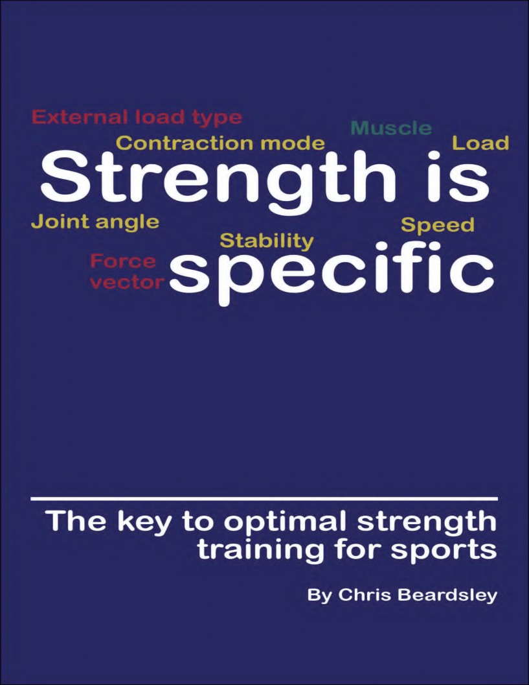

CONTENTS
FOUNDATIONS OF STRENGTH TRAINING 5
CAN WE GET STRONGER IN MORE THAN ONE WAY? 11
WHAT HAPPENS WHEN WE LIFT WEIGHTS? 16
HOW ARE GAINING STRENGTH AND SIZE DIFFERENT? 21
WHAT DETERMINES MUSCLE GROWTH? 24
WHAT IS THE RELATIONSHIP BETWEEN MUSCLE GROWTH AND STRENGTH GAINS? 29
THE PRINCIPLE OF SPECIFICITY 37
WHAT DOES THE “PRINCIPLE OF SPECIFICITY” MEAN? 38
WHEN ARE STRENGTH GAINS SPECIFIC? 42
WHEN ARE STRENGTH GAINS *NOT* SPECIFIC? 49
WHAT HAPPENS IF YOU IGNORE THE FACT THAT STRENGTH IS SPECIFIC? 53
WHY ARE HEAVY WEIGHTS BEST FOR INCREASING MAXIMUM STRENGTH? 56
HOW CAN HEAVY STRENGTH TRAINING *FAIL* TO MAKE YOU FASTER? 62
WHY DOES STRENGTH TRAINING WITH HIGH REPS IMPROVE MUSCULAR ENDURANCE? 67
WHY DOES LOWERING AND NOT LIFTING WEIGHTS PRODUCE UNIQUE ADAPTATIONS? 71
WHY DOES LIFTING AND NOT LOWERING WEIGHTS CAUSE UNIQUE EFFECTS? 75
WHAT DO YOU THINK YOU ARE ACHIEVING BY “FOCUSING ON THE ECCENTRIC PHASE”? 79
WHY DO YOU NEED TO LIFT WEIGHTS QUICKLY TO GET FAST? 84
WHY DOES THE “DYNAMIC EFFORT” METHOD (SOMETIMES) WORK FOR POWERLIFTING? 89
WHY ARE STRENGTH GAINS GREATER AT SOME JOINT ANGLES THAN OTHERS? 93
WHY DO FULL RANGE OF MOTION EXERCISES NOT INCREASE STRENGTH AT ALL MUSCLE LENGTHS? 97
WHAT DO YOU THINK YOU ARE DOING BY ADDING BANDS OR CHAINS? 100
SHOULD YOU USE FREE WEIGHTS OR MACHINES FOR STRENGTH TRAINING? 105
HOW DO FORCE VECTORS AFFECT THE TYPE OF STRENGTH WE DEVELOP? 110
SHOULD STRENGTH COACHES STOP USING THE HIP THRUST TO IMPROVE SPRINTING PERFORMANCE? 115
DOES THE WEIGHT ON THE BAR CHANGE WHICH MUSCLES WORK HARDEST? 119
STRENGTH TRAINING FOR SPORT 122
HOW DO STRENGTH GAINS TRANSFER TO SPORT? 123
HOW DO STRENGTH GAINS TRANSFER TO SPRINTING 127
HOW DO STRENGTH GAINS TRANSFER TO AGILITY? 132
NORDIC CURLS ENHANCE SPRINTING ABILITY BY INCREASING HAMSTRINGS ACTIVE STIFFNESS 148
DOES YOUR MENTAL MODEL OF “STRENGTH” AFFECT HOW YOU TRAIN ATHLETES? 155
WHAT IS “FUNCTIONAL TRAINING” AND IS IT THE BEST WAY TO PREPARE ATHLETES FOR SPORT? 160
HOW OFTEN HAVE YOU HEARD THE IDEA THAT “GREAT COACHES JUST DO THE BASICS BETTER”? 165
WHY IS INCREASING STRENGTH RELATIVE TO MUSCLE SIZE IDEAL FOR ATHLETES? 170
WHAT DOES TRAINING TO FAILURE ACTUALLY ACHIEVE? 174
WHY ATHLETES SHOULD NOT TRAIN TO FAILURE 178
PROGRAMMING STRENGTH TRAINING 182
HOW DOES ONE REPETITION-MAXIMUM (1RM) INCREASE AFTER TRAINING? 183
WHAT IS THE BEST WAY TO IMPROVE YOUR ONE REPETITION-MAXIMUM (1RM)? 189
USING PERCENTAGES OF 1RM IGNORES DIFFERENCES BETWEEN INDIVIDUALS AND EXERCISES 193
WHAT IS THE FITNESS-FATIGUE MODEL? 203
WHAT DETERMINES HOW OFTEN WE CAN TRAIN (WHEN BODYBUILDING)? 209
WHEN IS OVERREACHING USEFUL? 216
WHAT CAN THE GENERAL ADAPTATION SYNDROME TELL US ABOUT PERIODIZATION? 221
WHAT IS THIS THING WE CALL PERIODIZATION? 228
WHY DOES RESEARCH TELL US THAT LOAD PERIODIZATION WORKS? 235
INTRODUCTION
Strength training is a common method used by athletes to help them improve at sport.
However, not every strength training program produces the exact same results. This is because each type of strength training leads to slightly different adaptations, and each set of adaptations improves performance in some sporting movements more than others.
This happens because of the principle of specificity, which determines the degree to which a strength training program or exercise transfers to a sporting movement. Unfortunately, the principle of specificity can be difficult to use in practice, because no-one has ever published clear guidelines for how it works.
The purpose of this book is therefore very simple: it is to provide you with a framework for figuring out which types of strength training will transfer to which sporting movement, and why.
To build that framework will require us to go on a journey to understand the way in which muscles produce force in different contexts, to learn the nature of the adaptations produced by each type of strength training, and to appreciate exactly how force is produced in different ways in each sporting movement.
Let's get started!
FOUNDATIONS OF STRENGTH TRAINING
WHAT IS STRENGTH?
Strength is something that means different things, depending on the context.
In strongman competitions, competitors take part in several events, each designed to test their “strength” in different ways.
While some strongman athletes are very dominant in their sport, and always finish highly, the placing of the competitors is rarely identical for each event. This indicates that each individual athlete expresses “strength” most effectively in different ways, even when taking part in the same sport.
What is more, in sports science, “strength” can get defined in different ways, depending on the research group who are writing up the experiment, the previous literature on that topic, and the goals of the study.
Overall, this makes it very hard to have a meaningful conversation about “strength” and how to make people stronger, because everyone starts with a different picture in their minds of what “strength” means.
So what does “strength” actually mean?
What does “strength” mean?
From a scientific perspective, “strength” is a measure of force production.
If you can display “strength,” that means you can produce force. If you increase your “strength” by getting stronger, then that means you can produce more force than when we last tested you, in the exact same exercise.
We can measure the ability to produce force in several ways, ranging from the very simple (lifting the heaviest weight possible) to the complex (exerting force in a dynamometer).
And yet, even if we measure force very accurately during exactly the same exercise (such as a biceps curl), there are many conditions that affect the value we subsequently record. Some of these conditions affect force to such a large degree that they completely alter the values of force production we measure, making them impossible to compare with one another.
What affects our ability to produce force?
Even when we consider tests of the *exact* same muscle group, there are dozens of things that can affect our ability to produce force, and many of them have nothing to do with our muscles.
Some relate to the environment that we are in, or our psychological state.
Others relate to the way in which our brain and central nervous system coordinate force production at different joint angles, speeds, loads, and conditions of stability.
However, there are also three very basic biological factors inside muscles that determine how much force we can produce. These are produced by the internal workings of the muscle fibers themselves.
These factors are: (1) the length-tension relationship, (2) the force-velocity relationship, and (3) force enhancement during lengthening.
These basic biological factors inside muscles mean that we can
*immediately* alter the amount of force we are able to produce simply by
(1) finding the joint angle at which our muscles are capable of working hardest, (2) moving more slowly, or (3) allowing a muscle to lengthen while it is working.
Let’s take a closer look at each of these in turn.
#1. The Length-Tension relationship
The length-tension relationship is the observation that muscle fibers have an optimal length for producing force. This means that whole muscles also have a length at which they are strongest. Since muscles change length as joint angle changes, there is a joint angle at which our biceps curl (for example) force is greatest.
The main factor underpinning this observation is the amount of overlap between the strands or “myofilaments” inside the muscle fiber. These move against one another to produce force.
We can segment these strands inside muscle fibers into chains of contractile units, called sarcomeres. These sarcomeres shorten, which makes the myofilaments reduce in length, so that the whole muscle fiber attempts to shorten. This produces a tensile (pulling) force from one end to the other.
The sarcomeres shorten when thin strands (actin myofilaments) slide past thick strands (myosin myofilaments). This sliding action is produced by “crossbridges” on the thick strands, which repeatedly work their way up the thin filament in steps. When there are no further steps for the thick filament to take along the thin filament, the crossbridges are no longer able to contribute to force production.
It is the degree of overlap between the thick and thin strands in a sarcomere that determines how much active force can be produced by the muscle fiber. If there is full overlap, this means that all of the crossbridges can do their jobs, but if there are parts of the strands that are not in contact with each other (either because the muscle fiber is too short, or because it is too long), then the force that can be produced by the muscle fiber is reduced.
Additionally, if the muscle fiber is stretched too far, it begins producing additional force passively, because its internal structures start resisting. This increases force production very quickly at long muscle lengths.
Overall, this means that muscle fibers (and muscles) tend to produce a low level of force at very short lengths, and a peak level of force at moderate lengths, before reducing slightly until they reach *very* long lengths, when force increases again.
#2. The Force-Velocity relationship
The force-velocity relationship is the observation that muscle fibers produce less force whenever they contract more quickly. This means that whole muscles produce less force when we move fast. Consequently, we cannot exert much force when we perform high-speed sporting movements, like throwing a ball.
The main factor underpinning this observation is *again* the amount of overlap between the strands inside the muscle fiber that move against one another to produce force.
We know this because researchers have found that if they experimentally increase the force produced by a single muscle fiber, the number of attached crossbridges increases. Conversely, when they experimentally increase the contraction velocity of the muscle fiber, the number of attached crossbridges decreases.
Why does this happen?
The number of attached crossbridges is dependent upon the contraction speed of the fiber, because the detachment rate of the crossbridges at the end of their working stroke increases with increasing contraction velocity.
In other words, as a muscle fiber contracts faster, the crossbridges have to detach more quickly, and this reduces force.
#3. Force enhancement during lengthening
Until recently, we did not understand why muscle fibers are able to produce much greater force while they are lengthening, compared to when they are shortening.
In fact, while lengthening, single muscle fibers can produce up to 150% of the force we measure during similar shortening contractions. This in turn means that we are approximately 125–130% stronger when we lower a weight under control (over 3 seconds), compared to when we lift a weight in exactly the same exercise.
Why does this happen?
In the last few years, researchers have discovered that when our muscle fibers lengthen, a third strand inside muscle fibers comes into play.
This strand, a giant molecule called “titin,” gradually unravels when we lengthen the fiber while it is actively producing force. It does not behave in the same way when the muscle fiber is not active, so it does not impede passive movements. As it unravels, it resists being elongated, which contributes substantially to the force produced by the muscle fiber.
Later, as the muscle fiber reaches the end of its normal working length, its passive elements are stretched. These elements also contribute to resistance against the fiber being lengthened.
Overall, this makes force much greater when muscles are lengthening, compared to when they are shortening.
What is the takeaway?
Strength is the ability to produce force, but this ability changes radically depending on the muscle length, speed, and contraction type (shortening or
lengthening) that we use.
There are three basic biological mechanisms that affect force production inside the muscle (the length-tension relationship, the force-velocity relationship, and force enhancement during lengthening), not to mention all the other factors that can affect strength.
So no matter how hard we try, there will never be one single definition of “strength”, because it changes depending on *how* and *when* we want to produce force.
CAN WE GET STRONGER IN MORE THAN ONE WAY?
Strength is the ability to produce force. Our ability to produce force differs, dependent on many factors, including (but not limited to) the muscle length, contraction speed, and contraction type (shortening or lengthening) used in a test of strength.
Strength training is the process by which we *improve* our ability to produce force.
Consequently, strength training programs are designed to improve our ability to produce force at most muscle lengths, contraction speeds, and contraction types (shortening or lengthening). However, they do *not* improve them all to the exact same extent.
If we do strength training at one particular muscle length, contraction speed, or contraction type, we will record a large increase in our strength if we test it at that same muscle length, speed, or contraction type.
In contrast, we will only observe a small increase in strength if we test our ability to produce force with a different muscle length, speed, or contraction type.
In other words, strength training produces different effects, depending on the type of training we do.
Why is our “strength” different when we test it in different ways?
There are *literally* dozens of factors that can affect our ability to produce force, many of which have nothing to do with our muscles.
Indeed, our environment, our psychological state, and our central nervous system all play important roles in force production, in ways that we do not yet fully understand.
But as explained in the first chapter, there are also three basic biological factors inside muscle that determine how much force we can exert. These are produced by the internal workings of the muscle fibers themselves, as described by three phenomena described in detail in the previous chapter:
(1) the length-tension relationship, (2) the force-velocity relationship, and
(3) force enhancement during lengthening.
These three factors determine why we are stronger at some muscle lengths than at others (the length-tension relationship), at slow contraction speeds compared to at high speeds (the force-velocity relationship), and in lengthening contractions rather than in shortening contractions (force enhancement during lengthening).
After strength training, adaptations occur that affect each of these relationships. These adaptations improve our ability to produce force
*specifically* under different conditions.
Naturally, other adaptations occur as well (such as an increase in muscle size) which also produce increases in force under a range of conditions, but that is a topic for another chapter!
Here are some examples of how strength training produces adaptations inside muscles in these three basic biological mechanisms, depending on the type of training we do.
#1. The Length-Tension relationship
According to the length-tension relationship, muscle fibers have an optimal length for producing force, mainly because the force that a fiber produces is determined by the amount of overlap between the strands inside its contractile units (sarcomeres).
Perfect overlap occurs only when the two filaments are totally lined up. A reduced level of overlap can occur either when the muscle fiber is very
elongated, or is very shortened. Consequently, whole muscles have a length at which they are strongest, and there is a joint angle at which our ability to produce force is greatest (usually in the middle).
After strength training at long muscle lengths, the joint angle at which we are strongest shifts to a more extended angle, corresponding to a longer muscle length.
This seems to happen *partly* because individual muscle fibers elongate by adding sarcomeres. Since the starting and ending points of the muscle itself are not altered, a greater number of sarcomeres is packed into the length of a fiber. Thus, the length of each sarcomere reduces. This decreases the initial overlap between strands inside the sarcomere, and shifts the optimal length for producing force to a longer muscle length.
By shifting the joint angle at which we are strongest, we increase strength
*preferentially* in that part of the joint range of motion, and less in other parts.
#2. The Force-Velocity relationship
The force-velocity relationship tells us that individual muscle fibers produce less force whenever they contract more quickly. Thus, we are not able to express the same amount of strength when we move fast.
We observe the force-velocity relationship because the force produced by a muscle fiber is dependent upon the number of attached crossbridges at any one time. And the number of attached crossbridges is dependent upon the contraction velocity of the muscle fiber.
The main factor that determines the number of attached crossbridges at any one time is the detachment rate at the end of the working stroke. And this increases linearly with increasing contraction velocity. Therefore, as the
fiber attempts to contract faster, any attached crossbridges detach more quickly, and this reduces force.
If we can either (1) reduce the rate of detachment of attached crossbridges, or (2) increase the rate of reattachment of detached crossbridges, we might be able to increase strength specifically at high velocities (this can also be done in other ways, but that is another matter).
One of the really interesting things about high-velocity exercises like ballistic strength training or plyometrics is that they display extraordinarily high levels of rate coding (discharge rates), especially at the start of a contraction. The discharge rate is the rate at which the central nervous system sends its signal to the muscle fibers. The rate tells us how many times per second the signal is sent, and each signal leads to a contraction of the muscle fiber.
Normal strength training exercises typically involve rates of 30–50 times per second, while rate coding in plyometrics easily reaches 60–120 times per second.
Ballistic strength training or plyometrics are well-known to produce strength gains that are greater when tested at high speeds (force exerted against light loads), and smaller when tested at low speeds (force exerted against heavy loads). They are also known to increase discharge rates to as much as 200 times per second at the start of high velocity contractions.
By sending more signals per second, the increase in the discharge rate during high velocity contractions *more than compensates* for the increase in the rate of detachment of attached crossbridges, and it probably does this by increasing the rate of reattachment of detached crossbridges.
And this allows the athlete to improve strength *preferentially* at high velocities.
#3. Force enhancement during lengthening
When lengthening, muscle fibers can produce up to 150% of the force that they are able to exert while shortening.
We are also approximately 125–130% stronger when we lower a weight under control (over 3 seconds), compared to when we lift a weight in the same exercise. The reason for this smaller difference in strength between lengthening and shortening at the whole muscle level has been attributed to a protective neural mechanism that selectively reduces activation of the muscle in the lengthening (eccentric) phase.
Greater force production while lengthening has largely been attributed to the behavior of the giant molecule called “titin”, which gradually unravels and resists movement as we stretch a muscle fiber that is actively producing force.
After strength training with lengthening (eccentric) contractions, we increase maximum force during lengthening (eccentric) contractions more than maximum force during concentric (shortening) contractions.
Although no human studies have yet observed any changes in titin after strength training of any type, studies in rats have identified that the amount of titin inside a skeletal muscle fiber can increase after exercise. If this happens more after training involving lengthening contractions (eccentric training), then it could explain why maximum force in lengthening (eccentric) contractions is increased more after strength training with lengthening (eccentric) contractions.
Additionally, strength training with lengthening (eccentric) contractions seems to reduce the impact of the protective neural mechanism, as it removes the selective reduction in activation of the muscle during the lengthening (eccentric) phase.
Either of these mechanisms might therefore contribute to how athletes are able to improve strength *preferentially* during lengthening (eccentric)
contractions.
What is the takeaway?
Strength is the ability to produce force, and strength training is simply the process by which we improve our ability to produce force.
Our ability to produce force differs depending on the muscle length, contraction speed, and contraction type (shortening or lengthening) used in a test of strength. Additionally, the mechanisms by which strength improves after training also differ according to the muscle length, contraction speed, and contraction type (shortening or lengthening) used in training.
And this is (a big part of) the reason why strength training produces different effects, depending on the type of training we do.
WHAT HAPPENS WHEN WE LIFT WEIGHTS?
When we go to the gym, and lift weights regularly for more than a few weeks at a time, good things start to happen.
Some of these changes we can see from the outside.
First of all, we notice an increase in the amount of weight we are lifting. The number of plates on the barbell will increase, or the pin on the weight stack will drop down another level.
Secondly, we start to see changes in the mirror. Our muscles get larger, and their appearance will change slightly. We look better!
In sports science, we call these changes “strength gains” and muscular hypertrophy, respectively.
But there are also changes on the inside.
These changes are hidden, and we cannot see them. Even so, they have important implications for how strength training can be used to improve sports performance.
How do we know about these hidden changes?
Decades ago, scientists began searching for these hidden changes, because of two experimental observations.
Firstly, they realized that the strength gains were proportionally larger than the increases in muscle size. Something on the inside, that we cannot see, must also be changing. Otherwise, the relative changes in strength and muscle size would be the same.
Secondly, they observed that the strength gains for a given muscle group were quite specific to the exercise performed in training. In other words,
strength gains were greater when tested using the exact same exercise as used in training, and were smaller when tested using a slightly different exercise for the same muscle group.
For strength coaches working with athletes, this second finding was the really important one.
So what are these ways in which strength gains are specific?
How are strength gains specific?
Over many years, scientists discovered that strength gains were specific in many different ways, as shown below:
Contraction mode = whether the weight was only lifted, or only lowered
Velocity = the speed used to lift the weight
Joint angle = the point in the exercise range of motion at which muscle force is greatest
Load = the number of reps that can be done with a weight
External load type = the type of resistance used (weight or elastic resistance)
Force vector = the direction that force is produced, relative to the body
Stability = how stable the exercise is (free weights or machines)
Muscle = the muscle group trained
In each case, the improvements in strength were greater when the strength test was the same as the type of movement used during training. There was
still a degree of “transfer” to other, similar movements, but the increase in strength that was measured was smaller.
Later, while investigating the hidden changes that underpinned each of these effects, researchers found two surprising results.
Firstly, they found that there were lots of hidden changes that caused these specific effects, and not just one.
Secondly, they found that the hidden changes causing specific gains in strength differed, depending on which aspect of the exercise was changed. For example, the hidden changes causing specific strength gains for (3) the joint range of motion moved, were not the same as the hidden change producing specific strength gains for (7) the amount of stability.
What are these hidden changes that make strength specific?
While some people like to think of strength being determined by muscle size and either neural drive or coordination, the reality is that there are lots of factors that have a meaningful impact.
Indeed, there are dozens of hidden changes that can affect the amount of strength that is gained in any of the specific ways. Here are some of the most important ones:
Increase in muscle fiber diameter (hypertrophy)
Increase in muscle fiber length (sarcomerogenesis)
Increase in the angle of the muscle fibers inside the muscle (pennation angle)
Different increases in fiber diameter, fiber length, and pennation angle at different parts of a muscle (regional hypertrophy)
Shift in muscle fiber type (from type IIX to type IIA)
Increase in the amount of force transmitted laterally from the muscle fiber to surrounding collagen tissues (lateral force transmission)
Increase in the stiffness of surrounding collagen tissues
Increase in tendon stiffness
Increase in activation of the prime mover muscles (agonists)
Earlier and faster activation of the prime mover muscles (agonists)
Increase in activation of the prime mover muscles (agonists) at some joint angles, but not at others
Decrease in the activation of the opposing muscles (antagonists)
Increase in the activation of synergists, to allow the body to be positioned more effectively for force production
Improvements in coordination of a movement, by increased motor skill
Increase in the number of capillaries (supplying blood) inside the muscle
Changes in buffering capacity and rate of ion transport inside a muscle fiber
I’ll stop there!
Some of these hidden changes have very obvious effects on a given type of specific strength, while others require more effort to figure out.
For example, increases in the number of capillaries, buffering capacity, and rate of ion transport inside the muscle are all ways in which repetition strength is selectively improved.
In contrast, increases in synergist activation along with decreases in antagonist activation are actually the main factors responsible for strength gains on unstable surfaces.
Proportionally greater maximum strength gains are probably caused by several factors, including greater increases in agonist muscle activation, tendon stiffness, lateral force transmission, and coordination.
What is the takeaway?
When thinking about strength training, we tend to focus more on the changes that we can detect from the outside (strength gains and hypertrophy), and forget the amazing, but *hidden* changes that occur on the inside.
Yet, these hidden changes are essential for developing strength for improving sports performance, because they improve the ability of muscles to produce force under the same conditions as in athletic movements, without increasing muscle size, which has the adverse effect of increasing bodyweight.
HOW ARE GAINING STRENGTH AND SIZE DIFFERENT?
Everywhere you look in the fitness industry, experts talk about how to gain “strength and size” with particular programs.
But even though there is a growing realization that muscular hypertrophy does not track strength gains after training, we *still* very rarely consider just how different these two things really are.
Even when we do remember that hypertrophy does not predict strength gains, we usually *still* forget that while muscle size is something you can “have”, strength is something you “display” on a given occasion.
Let me explain what I mean, with a quick example.
When a bodybuilder engages in an off-season bulking phase, they only have one aim, which is to gain muscle size.
After hitting the weights for a few months and eating everything in sight, they go back to the lab for another set of measurements, and they are very happy to discover that they have increased their fat-free mass by a few kilograms.
Success!
On the other hand, when a powerlifter undertakes a preparation program for a meet, they also train hard for a couple of months, and they may increase their training weights by a good margin. Based on that, they fully expect to achieve a new personal best at their chosen meet.
Unfortunately, they have a bad day because they are psyched out by their opponents, they get the final details of their meet preparation wrong, and they end up not achieving a new personal best after all.
So did they improve their maximum strength after training?
Well, as measured by the meet performance, they did not. But if we had tested their muscles in a lab before and after their training program, under
carefully controlled conditions, we may have recorded an improvement.
Even then, however, if they had trained *too hard* in the final few days prior to the test and became overly fatigued, we might still have recorded no gain in strength, even with very careful measurements.
If we only measured strength, we might decide that this program had been a failure at helping the athlete produce the necessary neural and muscular adaptations that lead to greater maximum strength. In reality, what the athlete may have needed was a better approach to psychological preparation and a proper taper. With those factors in place, they may have smashed their previous personal best into the middle of next week.
If we had unlimited resources, we might be able to look inside an athlete and detect the hidden adaptations that reveal how their latent ability to produce force had changed.
These hidden adaptations might include increased muscle size, greater lateral force transmission ability inside their muscles, greater tendon stiffness, an increased ability to activate their muscles, and superior coordination.
By doing that analysis, we might then be able to predict their “true strength” without actually testing it. But until we have futuristic medical devices in every training facility, that is not going to happen.
What is the takeaway?
What this means, is that strength and size are very different, both in the way that they are developed by training and *also* in the way that they are measured.
Size is something you can *have* and we can measure it relatively accurately, regardless of whether you are tired and hungover, or fresh and
raring to go. If you are a bodybuilder and you increase muscle size after a training program, you know that it worked (at least, at that particular point in your training career).
Strength is something you can only *display* on a given occasion, and it depends on the environment, your state of fatigue, and many other factors.
You might improve your ability to produce force after strength training (because of various changes inside your brain and body), but you may still fail to *display* that improvement in a test. So if you are a powerlifter or another strength athlete, this makes it very hard to assess the quality of a training program. A good taper (or a good meet experience) might completely alter your perception of a program you just followed.
WHAT DETERMINES MUSCLE GROWTH?
You have probably come across people who argue that reaching full “motor unit recruitment” is the key to muscle growth.
Yet, researchers have repeatedly observed that *mechanical loading* is the primary mechanism by which hypertrophy occurs, with metabolic stress likely also playing a role in some way.
So how is “mechanical loading” different from “motor unit recruitment”?
Well, it differs in two quite important ways, both of which demonstrate that mechanical loading, and not the degree of motor unit recruitment, is the key to muscle growth.
Firstly, mechanical loading can occur whether the muscle is active (with motor units recruited) or not (without motor units being recruited). And studies have shown for many years that both *active* loading (by muscular contractions) and *passive* loading (by static stretching of a relaxed muscle) can increase muscle size, in both animals and humans.
Secondly, the amount of mechanical loading that is imposed on a muscle fiber in an *active* muscle contraction differs according to the contraction velocity. This difference in mechanical loading explains why we achieve full motor unit recruitment during fast contractions with light loads, but little muscle growth after a strength training program made up of high- velocity exercises.
Let me explain.
What is motor unit recruitment?
Motor unit recruitment is (a big part of) the way in which the central nervous system (CNS) controls force production in muscles. There are
many motor units for each muscle, and each motor unit acts as the control system for a group of muscle fibers.
Importantly, motor units differ in size. Some motor units control small, weak groups of muscle fibers that only produce a small amount of force when activated. Others control large, strong groups of muscle fibers that produce a large amount of force when activated.
Motor units controlling small, weak groups of muscle fibers are called “low-threshold” motor units. Those that control large, strong groups of muscle fibers are called “high-threshold” motor units.
According to the size principle, low-threshold motor units are *always* recruited before high-threshold motor units. If you have been in the sports science field for more than a few years, you may recall that researchers once thought that the size principle might not apply under certain, specific circumstances. We know better now.
This “recruitment” of motor units occurs in response to a need determined by the CNS. If the CNS detects that more force is needed, more motor units are recruited.
And this means that the high-threshold motor units (and their associated muscle fibers) are only recruited when the CNS identifies that they are needed.
When are high-threshold motor units recruited?
When does the CNS identify that high-threshold motor units need to be recruited?
There are three circumstances when the CNS detects that force production provided by the recruitment of the low-threshold motor units is not
sufficient to meet the demands, and therefore recruits some high-threshold motor units.
Firstly, when we lift a heavy weight (anything between 85–90% of maximum force), the CNS usually recruits all available motor units. So every rep you perform with a heavy weight will typically recruit all of the motor units in a prime mover muscle.
Secondly, when we lift a light weight to muscular failure, the CNS usually recruits all available motor units towards the very end of the set. So most of the reps you perform with a light weight will typically recruit all of the low- threshold motor units in a prime mover muscle, while the final few reps will recruit all of the high-threshold motor units as well.
Thirdly, when we lift a light weight (between 30–40% of maximum force) with a fast bar speed, the CNS recruits most of our motor units. Throwing a medicine ball, doing jump squats, or plyometric push ups, all very likely achieve (nearly) maximal motor unit recruitment.
In each case, the CNS detects that more motor units must be recruited to meet the needs of the muscle action.
Obviously, when lifting a heavy load, it is the maximal force of all muscle fibers *working together* that is required. When lifting light loads to failure, it is the maximal force of the muscle fibers controlled by high- threshold motor units that are needed to *take over* from other, fatigued muscle fibers that have ceased producing sufficient force. And when lifting a light load with a fast bar speed, it is the fact that each individual muscle fiber produces a *small fraction* of its maximal force when moving quickly, compared to moving slowly.
We know that a similar amount of muscle growth can be achieved by (1) lifting heavy weights, and (2) lifting light weights to muscular failure.
Despite this, lifting light weights quickly, such as by using plyometrics or ballistic strength training (which both achieve recruitment of many high- threshold motor units), does not cause very much muscle growth.
So how is lifting light weights quickly different from the other two methods? Well, as I noted above, the answer turns out to be the amount of mechanical loading on each individual muscle fiber.
Why is high-velocity strength training different?
When lifting light weights quickly, there is far less mechanical loading on each individual muscle fiber, despite the recruitment of all motor units, because of the force-velocity relationship.
The force-velocity relationship states that as force increases, velocity must decrease. Similarly, it states that as velocity increases, force must decrease.
We currently think that force decreases during high velocity contractions because there is less overlap between the strands (myofilaments) inside the muscle fibers. These are the structures that move against one another to produce force by the creation of crossbridges.
As the muscle fibers contract more quickly (as they must do in high- velocity contractions), crossbridges between myofilaments have to detach more quickly. This reduces the amount of overlap between the myofilaments that exists at any one point in time, which in turn reduces the force produced by each individual muscle fiber.
This force is the *mechanical loading* experienced by the fiber.
When (1) lifting heavy weights, and (2) lifting light weights to muscular failure, this decrease in force produced by each individual fiber does not happen. In the case of lifting heavy weights, all muscle fibers produce a high level of force concurrently. In the case of lifting light weights to muscular failure, each individual fiber gets a turn at producing a high level of force, when compensating for other, fatigued fibers.
But in both cases, the contraction velocity is low, so the force exerted by each individual fiber can be high. Thus, the *mechanical loading* experienced by each individual muscle fiber is high. A large enough exposure to this stimulus is what triggers the signaling cascades that lead to muscular hypertrophy.
What is the takeaway?
Muscle growth is not determined by the degree of motor unit recruitment, but by the mechanical loading experienced by each muscle fiber.
To achieve the necessary level of mechanical loading, contraction velocity must be both maximal and slow, because only this combination leads to enough simultaneous crossbridges forming in the muscle fibers controlled by high-threshold motor units.
This state can be achieved by either (1) lifting heavy weights, or (2) lifting light weights to muscular failure.
Recruiting high-threshold motor units does not work if the velocity is not slow (for example, when lifting light weights quickly and not to failure). The mechanical loading on each individual fiber is insufficient, because the crossbridges detach too quickly after forming.
WHAT IS THE RELATIONSHIP BETWEEN MUSCLE GROWTH AND STRENGTH GAINS?
When we do strength training, we get stronger in the exercises that we use in our training program. We also experience growth in the muscles we have been working.
But we often observe strength gains *without* simultaneously achieving muscle growth. And we sometimes (more rarely) attain muscle growth without increasing strength.
So just how much does muscle growth contribute to gains in strength after training?
To answer this question, we need to understand (1) the various factors that determine strength gains, and (2) how the contribution of each of these factors differs according to the strength test we use.
What factors determine strength gains?
In fact, many factors can influence our ability to produce muscle force. These include things inside the muscle (including its size) and things inside the central nervous system (CNS).
Factors inside the muscle
Muscle cross-sectional area
Muscle cross-sectional area is the most common way of measuring muscle size.
A larger whole muscle cross-sectional area mainly reflects a larger muscle fiber diameter. Larger fiber diameters mean that individual fibers (and hence the whole muscle) can exert more force.
Increasing muscle cross-sectional area is therefore likely to cause strength gains in most strength tests, although muscle growth often comes alongside changes in fiber type that adversely affect our ability to produce force at high speeds (shifts from type IIX to type IIA), and the increase in tissue
inertia from the added mass reduces our maximum contraction velocity, which also has a negative impact on high-velocity strength.
Muscle fascicle length
Fascicle length is the most common way of measuring muscle fiber length (fascicles are bundles of muscle fibers). An increase in fascicle length reflects an increase in fascicle volume. So in one respect, an increase in fascicle length is another way in which muscle size increases.
However, an increase in fascicle length also reflects an increase in the number of contractile units (sarcomeres) in series. This shifts the joint angle at which peak force is produced to longer muscle lengths. It may also impact on contraction velocity, because all sarcomeres in a fiber contract at the same time.
Increasing fascicle length is therefore likely to contribute more to strength gains when strength tests involve peak contractions at longer muscle lengths, and it may potentially also enhance strength at faster speeds.
Muscle pennation angle
Pennation angle is the angle at which individual muscle fibers are arranged in a muscle, relative to its longitudinal axis. After strength training, pennation angle increases. This allows more fibers to fit into the same amount of space, but also reduces the proportion of force transmitted by each single fiber to the tendon.
Pennation angle changes *during* a muscle contraction, because the fibers rotate. This rotation allows more force to be exerted in fast contractions, because the whole muscle can shorten more for the same amount of single fiber shortening, and force per muscle fiber decreases with increasing fiber shortening velocity. This phenomenon is called architectural gearing.
Importantly, since more-pennated fibers rotate more than less-pennated
fibers, increasing pennation angle may enhance maximum muscle shortening velocity.
Increasing pennation angle may therefore contribute more to strength gains as test speed increases, because more-pennated muscles rotate more than less-pennated muscles.
Muscle moment arm length
Muscle moment arm length is determined by individual anatomy but also by muscle size, making it another way in which muscle growth can increase strength. Muscle force is transmitted to the outside world by net joint moments (turning forces) and the size of these joint moments is equal to the muscle force multiplied by the muscle moment arm length.
Yet, because of the force velocity-relationship, the beneficial effect of increasing muscle moment arm length decreases as the speed of the strength test increases. This is because longer muscle moment arms require a faster muscle shortening velocity for a given joint angular velocity, and this reduces muscle force at this speed.
Muscle fiber type
Fiber type is a way of classifying muscle fibers, with type IIX fibers contracting the most quickly, and type I fibers contracting slowly. In contrast to the differences in contraction speed between slow and fast fibers, there are *much smaller* differences in maximum isometric force production, but type II fibers are slightly stronger than type I fibers.
In general, muscle fibers only shift type after strength training in a way that is detrimental for force production, by shifting from type IIX to the slightly
slower type IIA. Obviously, the negative effect on force is most marked at fast contraction speeds.
Fiber type shifts after strength training are therefore likely to reduce strength more when the speed used in a strength test is higher, because of their detrimental effect on contraction speed.
Lateral force transmission
The ability to transmit force laterally is a key determinant of strength.
Although we tend to think of muscle fibers transmitting force longitudinally from one end to another, they actually transmit most of their force laterally, to the surrounding collagen layer. After strength training, we increase the number of links (called costameres) between the fibers and this collagen layer. This increases our ability to transmit force, and therefore our strength.
Despite this, the practical effect of increasing the number of these links is to decrease the functional length but increase the number of fibers in parallel inside a muscle, which reduces maximum fiber contraction velocity. So increasing lateral force transmission is less helpful for high-velocity strength gains.
Increases in lateral force transmission ability do contribute to strength gains, but the effect is probably smaller at high speeds.
Myofilament packing density
Myofilament packing density refers to the relative volume of contractile material packed into an individual muscle fiber. It has been proposed as a mechanism by which strength might increase without changes in muscle size. If myofilament packing density were to increase, then this would reflect greater “myofibrillar hypertrophy than “sarcoplasmic hypertrophy” when using a particular strength training method.
However, if such a thing were to happen, we would always observe increases in the maximum isometric force of single muscle fibers when they are extracted by biopsy before and after strength training. But this is found only rarely.
Currently, it is therefore doubtful whether myofilament packing density can actually increase, but if so, it would improve strength under all conditions.
Tendon stiffness
Tendon stiffness refers to the extent to which the tendon elongates when a muscle attempts to shorten, to produce force in the lifting phase of an exercise. If the tendon is very stiff, the muscle only shortens to the extent that the joint angle changes. If the tendon is not stiff, then the muscle can shorten faster than the joint angle changes (because the tendon elongates).
A muscle produces less force when it shortens more quickly, so a stiffer tendon generally leads to greater force production. Increasing tendon stiffness is therefore likely to contribute to strength gains under all conditions.
Factors inside the central nervous system
Voluntary activation
Voluntary activation refers to the extent to which an electrical stimulus superimposed on a maximal voluntary contraction can increase force production. If it cannot produce any incremental effect, the muscle is already fully activated under voluntary conditions.
Voluntary activation is achieved initially by increasing levels of motor unit recruitment, then by increasing the frequency of the signal from the CNS (called rate coding).
Full voluntary activation is likely to reflect a state of tetanus, in which all motor units are recruited and rate coding is fast enough, such that the muscle fibers do not relax between signals from the CNS. Yet, rate coding is more than 5 times faster in high-velocity contractions, particularly at the very start of the contraction, so increases in rate coding are likely to be much more important for strength at faster speeds.
Antagonist coactivation
Antagonist coactivation is the same thing as voluntary activation of the agonist (prime mover) muscles, except it refers to the activation of antagonist (opposing) muscles in a given agonist contraction (like the triceps in a biceps curl).
When antagonist activation is increased, this reduces our ability to exert force, even if our agonist muscle activation (or muscle size) increases.
In general, antagonist activation increases after heavy strength training, probably to improve joint stability, but it tends to reduce after high-velocity strength training, especially when testing strength at fast speeds. When producing force against lighter loads, the same level of joint stability does not seem to be necessary, so the nervous system adapts to produce less antagonist activation. This allows more force to be produced at the joint under these circumstances.
Synergist (stabilizer) activation
Synergist (stabilizer) activation is the same thing as activation of antagonist (opposing) muscles in a given agonist contraction, but it refers to muscles that provide stability (like the shoulder girdle in biceps curls).
According to gym lore, older lifters say “you cannot shoot a cannon from a canoe” when explaining this fact to novices. In other words, when synergist activation is increased, this improves our strength by improving the stability of the system in which we are working. This allows greater joint moments for the same amount of agonist muscle force.
Ultimately, increases in synergist activation increase strength by improving stability, which is likely to cause strength gains in tests where such stabilization is needed.
Coordination
Coordination is still largely a black box, and we know very little about it. However, there is clearly a large role for coordination in achieving strength gains, especially in multi-joint movements, although such coordination is almost certainly both load-specific (differs between a 1RM and a 5RM) and velocity-specific (differs between a jump squat and an unloaded vertical jump).
Increases in coordination certainly contribute to strength gains, but improvements are likely to be greatest when the strength test is identical to the type of training performed.
So what does this all mean?
Clearly, it means that *many* factors can affect strength gains, and they differ in relative importance depending on the type of strength training we
do and the type of strength we want to develop.
So a good way to approach the question is to consider the effects of all of these factors on two very important types of strength for athletes: (1) maximum strength, and (2) high-velocity strength.
What is the relationship between changes in
*maximum* strength and muscle growth?
When we are improving maximum strength, we use conventional, heavy strength training, which produces the following helpful effects, enhancing our ability to exert maximal force (which requires moving at a slow velocity): (1) increases in muscle size, (2) increases in lateral force transmission, (3) increases in voluntary activation, (4) increases in tendon stiffness, and (5) increases in load-specific coordination.
If we reduce the weight on the bar so that we can do more reps (as in a bodybuilding program), we will be likely to achieve smaller improvements in lateral force transmission, voluntary activation, tendon stiffness, and load-specific coordination.
Powerlifting programs that use very heavy loads are likely to achieve large gains in maximum strength through all of these factors (and therefore report only a moderate relationship between strength gains and muscle growth).
In contrast, bodybuilding programs (and volume-based powerlifting programs) will probably only achieve gains in maximum strength through increases in muscle size (and will therefore report strong relationships between strength gains and muscle growth).
What is the relationship between *high-velocity* strength gains and muscle growth?
When we are improving strength for sports performance, we tend to use high-velocity strength training exercises, like plyometrics and loaded jump squats, to improve force production in fast athletic movements like sprinting, changing direction, and vertical jumping.
Strength gains in high-velocity strength tests are achieved through various mechanisms. These occur only after high-velocity strength training or plyometrics, including: (1) increases in rate coding, particularly at the start of a contraction, (2) reductions in antagonist (opposing) muscle activation,
(3) increases in velocity-specific coordination, (4) increases in single muscle fiber contractile velocity, and (5) no shift in muscle fiber type, despite small increases in muscle size.
Consequently, there are large improvements in force production in high- velocity strength tests, despite minimal muscle growth. So the relationship between strength gains and muscle growth is almost always going to be fairly weak.
Quick note about “force” and “power”
Some people struggle with the idea of high-velocity strength tests (like force in jump squats), because they associate such tests with measuring “power”, which is force multiplied by velocity.
This is just a matter of convention, because force is always a measure of strength irrespective of the velocity we choose to measure it at, whether it is zero velocity (isometric), a very slow velocity (as in a 1RM), or a high velocity (as in a vertical jump). Other than historical convention, there is no reason why power should only be measured at high velocities, and force at slow velocities.
Moreover, power is actually a poor measure for sports performance. It is almost always measured at an arbitrary velocity that maximizes the value of power, but in sport force is often produced at higher velocities. So force at a maximum velocity, or at a given sports-specific velocity, would be a better measurement.
What is the takeaway?
Although we all want to identify the *exact* relationship between strength gains and muscle growth, it is likely that we will never find one. So many different adaptations can influence strength gains, and their relative importance changes depending on the type of training that was done and the type of strength being measured.
The closest relationships between strength gains and muscle growth *may* occur after training that provides a large stimulus only for muscle growth, and not for other adaptations, like bodybuilding programs using high volumes of moderate loads and submaximal lifting speeds.
THE PRINCIPLE OF SPECIFICITY
WHAT DOES THE “PRINCIPLE OF SPECIFICITY” MEAN?
Everyone who takes any kind of formal education in exercise science is taught about the Specific Adaptation to Imposed Demand (SAID) or “specificity” principle.
In strength training, the specificity principle describes how strength gains are very often quite specific to the type of training we perform.
In other words, it says that strength gains are greatest when tested with the same characteristics that were used in the training program.
This sounds fairly simple. And yet, people interpret it in different ways.
It is just the specificity principle!
Over the last couple of years, I have been writing detailed articles and posting up studies that clarify the different ways in which strength training produces quite specific adaptations, depending on the way in which the training program is set up.
When I post up this kind of information, one of the most common responses I receive from online commentators is that “this is just the specificity principle.”
They seem to believe that by saying this, they are telling me that (1) I should never need to investigate further if a report shows strength gains that are specific after strength training, and that (2) they are somehow explaining the mechanism by which these specific strength gains occur, and thereby clarifying the effect to everyone’s satisfaction.
They are mistaken, and I think this is because they are confused about what the word “principle” means and achieves in this context.
What does “principle” mean?
Without trying to take into consideration every possible way in which a word can be used or defined, there are two basic ways in which the term “principle” gets used in exercise science.
Firstly, there is the “fundamental principle”, which is a universally applicable, or nearly universally applicable phenomenon.
A good example of this is Henneman’s size principle. This states that motor units are always recruited in size order from low-threshold to high- threshold, in response to the need to produce or maintain muscle force.
Despite many attempts to disprove the size principle, it has held true for decades. In fact, the most recent research indicates that the finding is extremely robust, even during eccentric contractions.
When we are dealing with fundamental principles, we don’t need to be too curious if they are followed. In contrast, we should be be *extremely* curious when they are violated (although we should probably assume initially that it is our measuring equipment that is wrong).
Secondly, there are general principles.
In strength and conditioning, we only have a few general principles: progressive overload, individuality, specificity, and variation. These are essentially guidelines that we follow to devise strength training programs.
Importantly, general principles are observations. They cannot always be relied upon (although they very often can). We should therefore be curious about when they are followed and when they are violated, so that we can understand them better.
The reason that general principles are not always followed is because they are produced by a range of many underlying factors, or mechanisms.
For example, while it is a principle that different individuals will respond to the same strength training program in different ways, there are tens (if not hundreds) of ways in which two people can differ from each other.
Although the principle of individuality is a valid observation, it is not a mechanism that can explain anything. It is simply an observation that the response of two people to the same training program will be different.
However, differences in prevailing muscle fiber type or baseline strength levels might be the mechanism that could explain the different responses.
This shows that we need to drop down a level from general principles (in this case, the principle of individuality) to find a mechanism (in this case, perhaps muscle fiber type).
It is the same for the principle of specificity.
While it generally holds true, if we want to understand it then we need to drop down a level to find the mechanism or mechanisms that apply in each individual case.
What does the “specificity principle” mean?
The expression the “specificity principle” is a description that serves to remind us to expect that strength gains will be specific to the type of strength training we perform. Researchers coined the expression because they observed experimentally that this tended to happen more often than not.
If we turn this around, and think of the principle of specificity as an explanation for why strength gains are specific, we end up with a circular reference: Why are strength gains specific after training? Because of the principle of specificity! How do we know that there is a principle of specificity? Because strength gains are specific after training!
In other words, quoting the specificity principle as an “explanation” for your results is tautologous. It is just another way of saying that you have observed specific strength gains after training, like many other people before you. It does not tell you why those strength gains were specific.
To achieve that understanding, we need to look for the underlying mechanisms.
What is the takeaway?
The specificity principle is a general principle, much like other basic strength and conditioning principles like progressive overload, individuality, and variation.
The specificity principle is a general guideline that serves to remind us of a general observation that applies most of the time, but not all the time. It is not an explanation for why strength is specific. We need to look deeper if we want to understand that.
WHEN ARE STRENGTH GAINS SPECIFIC?
After we start strength training, we achieve large strength gains in the exercises we use (and in the exact ways we perform those exercises), and smaller strength gains in *similar* exercises that use the same muscle groups.
This observation has been called the “principle of specificity”.
The principle of specificity is a general strength and conditioning principle, just like the principles of progressive overload, individuality, and variation.
General principles do not tell us *why* certain adaptations or specific strength gains tend to happen, they only remind us that these things do usually happen.
Following strength and conditioning general principles is a reliable way to ensure that your training programs get you to your intended goal. However, knowing *when* the principles apply will take your programming knowledge from good to great.
It helps to know when you can “break the rules” and when you need to follow them carefully.
So when are strength gains *usually* specific?
When are strength gains *usually* specific?
There are many ways in which we can do a strength training exercise. Most of those ways affect the strength gains that result.
For example, we can choose to lift or lower a weight, move quickly or slowly, lift heavy or light weights, move through full or partial ranges of motion, use stable or unstable environments, use either “weight” or another type of resistance (such as elastic bands), direct force vertically or horizontally relative to the body, and work different muscle groups.
Let’s take a quick look at each of those.
#1. Lifting and lowering weights
In normal strength training, we use both lifting and lowering phases. However, some athletes only do one or the other, because using each phase alone produces very different adaptations from a conventional strength training program.
If we only do the lifting phase (called the concentric), then we might drop the weight under control afterwards, before lifting it again (just like Olympic weightlifters do). This is called “concentric-only” strength training, and it excludes the lowering phase (called the eccentric).
Conversely, we could just do a controlled lowering phase (the eccentric) and have spotters help us return the weight to the top afterwards, before lowering it again (as in a Nordic hamstring curl). This is called “eccentric- only” strength training, and it excludes the lifting phase (the concentric).
Concentric-only and eccentric-only strength training each produce specific adaptations inside the central nervous system and within the muscle itself.
As a result of these specific adaptations, concentric-only strength training produces proportionally greater increases in lifting strength, while eccentric-only strength training causes proportionally greater increases in lowering strength.
#2. Lifting quickly or slowly
When we lift weights, we can choose to either use a slow, controlled tempo, or we can lift the weight as quickly as possible. In addition, we can choose to use a relatively light weight and move very quickly, or we can use a relatively heavy weight and move more slowly.
These possibilities give us three options: (1) lift heavy weights, (2) lift light weights slowly, and (3) lift light weights quickly.
Obviously, because muscles have a fairly constant force-velocity relationship, we cannot lift heavy weights quickly.
Lifting light weights quickly produces the greatest increases in high- velocity strength (through a range of unique adaptations that only occur when we contract a muscle very quickly), while lifting heavy weights produces the greatest increases in maximum strength (through a totally different set of adaptations that only occur when we impose a very heavy external load on the muscle).
#3. Using a full or a partial range of motion
When we lift weights, we can choose to either use a full range of motion (like a full squat), where we allow the muscle to lengthen fully, or a partial range of motion (like a half squat), where the muscle is only partly lengthened when it reaches the end of the lowering phase.
Strength gains in each case are usually specific to the *longest* muscle length reached in the exercise, because of the adaptations that this triggers within the muscle fiber itself.
This means that the full range of motion exercise produces the greatest increases in strength at a long muscle length, while the partial range of motion exercise produces the greatest increases in strength at a more moderate muscle length.
This is why strength training using a full squat produces greater gains in 1RM full squat than strength training using a half squat, while strength training using a half squat produces greater gains in 1RM half squat than strength training using a full squat.
#4. Using low reps or high reps
When we lift weights, we can choose either a heavy weight or a light weight. We can also choose to lift to failure or not to failure. This gives us four options: (1) lift heavy weights to failure, (2) lift heavy weights not to failure, (3) lift light weights to failure, and (4) lift light weights not to failure.
Lifting to failure allows light weights to recruit more high-threshold motor units. This seems to be important (perhaps even necessary) to cause muscle growth when training with light weights, and muscle growth is probably the only way that this type of training causes strength gains.
Lifting to failure is less important when using heavy weights, however, as most motor units are recruited to lift a weight of 85–90% of 1RM anyway. Also, using heavy weights causes strength gains through several mechanisms, not just through muscle growth.
Since lifting to failure has its own set of drawbacks, including a much greater demand on the anaerobic energy system, this means that the options used in practice are (1) lifting a heavy weight not to failure, and (2) lifting a light weight to failure.
Lifting heavy weights produces proportionally greater increases in maximum strength (force produced against a very heavy weight) because of the effects of imposing a very heavy external load on the muscle-tendon unit. Meanwhile, lifting light weights to failure leads to proportionally greater increases in repetition strength (maximum number of repetitions with a given weight), because it involves undergoing high levels of metabolic stress.
#5. Using “weight” or elastic resistance
Most of the time in the gym, we use “weight” to provide resistance for our muscles, whether it is weight on a barbell, on a machine, or just our own bodyweight.
When we lift a plate-loaded barbell, we exert resistance to overcome two forces. Firstly, there is force exerted on the barbell by gravity, which constantly pulls it towards the earth. Secondly, we exert a force to start the barbell moving, to overcome its inertia. This force applies only when we are accelerating the barbell, at the start of the exercise.
When we squat with a plate-loaded barbell, the force we need to exert on it is therefore greatest at the bottom of the exercise, because we need to overcome *both* inertia and gravity. And as we decelerate towards the end of the exercise, force is at its lowest.
In contrast, if we apply large resistance bands to a barbell squat, there is much less force due to either inertia or gravity. Instead, most of the resistance comes from elongating the elastic. Consequently, the force we need to exert on the barbell is greatest at the top of the exercise, because this is where the elastic band is most elongated.
Using “weight” on the barbell therefore challenges the muscles most when they are at their most lengthened (at the bottom of the squat), while using elastic resistance tends to challenge our muscles more when they are short (at the top of the squat). This produces different effects in each case, because of the adaptations that stimulating a muscle at a certain length triggers within the muscle fiber itself.
This is why strength training using a plate-loaded barbell squat tends to produce proportionally greater gains in 1RM plate-loaded barbell squat, while strength training with a barbell squat against bands produces proportionally greater gains in 1RM barbell squat against bands.
#6. Using “vertical” or “horizontal” force vectors
When we exert force, this can be in any direction relative to our own body, and can be categorized as vertical, horizontal, lateral, and even rotational, depending on the movement.
Vertical force vectors occur when we exert force upwards, from our feet towards our head (like a vertical jump).
Horizontal force vectors occur when we exert force forwards, from our back towards our front (like a standing broad jump).
Lateral force vectors occur when we exert force sideways, from our middle towards our side (like a side-step or standing lateral jump).
Rotational force vectors occur when we turn at the waist.
Each direction involves a different set of joint angles at which peak force is produced, and therefore involves a different set of muscle lengths in each of the main muscles. So training with different force vectors causes specific strength gains in each of those force vectors.
#7. Using stable or unstable environments
Most of the time when we lift a weight, we tend to be in either a very stable environment (using a machine) or a moderately stable set-up (using free weights). Rarely, we might be persuaded to do an exercise on an unstable surface, like a Swiss ball.
Under very stable conditions (like a Smith machine bench press), we can lift a heavier weight than we can in moderately stable, or unstable conditions (like a dumbbell bench press on a Swiss ball).
This difference in strength is largely because the need to *balance* in less stable environments requires more involvement from opposing (called antagonist) and supporting (called synergist) muscles. Initially, the activation of these muscles makes it hard to move the weight, which is why we appear to be so much weaker in unstable exercise variations.
However, as we practice lifting weights in less stable environments, we learn to move the weight while balancing, so that we appear to gain strength. In reality, much of that gain in strength is an improvement in balance. As a result, it does not transfer as well as you might expect to strength gains under more stable conditions.
Conversely, no matter how much we gain strength under stable conditions, we will struggle to display that strength under unstable conditions, until we learn to balance as well. This is why we observe strength gains that are specific to the type of stability used in training.
#8. Muscle group
When we do an exercise, this tends to involve a number of muscles. But there are almost always a range of exercises that can be used to train the same muscle groups.
For example, the squat and the hip thrust both involve the main lower body hip extensors (adductor magnus, gluteus maximus, and hamstrings) and knee extensors (quadriceps), albeit working them hardest at different muscle lengths.
Comparing these exercises, there are important differences in the muscle lengths at which peak muscular contractions occur, and also in the coordination patterns used for each exercise. So strength training with the squat will never produce the same gains in 1RM hip thrust, compared with hip thrust training, and vice versa.
Yet, when a muscle group is trained, it will usually increase in size. We might expect that this will produce a degree of strength gains in other exercises that use the same muscle groups, and this is exactly what researchers have found when investigating the hip thrust and squat exercises.
What is the takeaway?
Strength gains are specific for a number of reasons, depending on the key factors that affect force production, such as muscle length, muscle contraction velocity, external load on the muscle, amount of metabolic stress, or the need to balance.
Strength gains are therefore specific to whether we lift or lower a weight, move quickly or slowly, lift heavy or light weights, move through full or partial ranges of motion, lift in stable or unstable environments, use “weight” or elastic resistance, direct force vertically or horizontally relative to the body, and they are specific to which muscle groups we use in training.
WHEN ARE STRENGTH GAINS *NOT* SPECIFIC?
As a rule, lifting weights causes strength gains that are very specific to the type of exercise performed in training.
In other words, if we test strength using *exactly* the same set-up as we used during training, then the strength gains we measure will be greater than if we use a different set-up.
Sometimes, however, strength increases after lifting weights do not follow this rule. Instead, they are quite similar when tested in many different ways after training.
This is because the principle of specificity is a general guideline, and not a hard-and-fast rule.
Why are strength gains sometimes specific, and sometimes not specific?
Well, this happens because strength gains are not caused by a single mechanism, but by many mechanisms. Sometimes those mechanisms produce a specific effect, and sometimes they don’t.
Let’s take a look at some examples.
#1. Beginners
When untrained individuals start lifting weights, they achieve extremely fast strength gains (for many reasons).
They also achieve greater increases in muscle size than more well-trained lifters. These gains in size become slower and slower as they become more experienced.
Muscle size contributes considerably to our ability to produce force under most circumstances, whether we are lifting or lowering a weight, moving
fast or slowly, moving through a large range of motion or a small one, lifting a heavy weight a few times or a light weight many times, or lifting in stable or unstable environments.
So whenever someone is able to gain a lot of muscle (for any reason, but most normally because they are a beginner), then the strength gains they achieve after lifting weights will be *less specific* to the type of training they do, and will transfer to a much wider range of exercises and sporting movements.
In other words, almost any training program will “work” for almost any goal in beginners (or in other lifters who are able to gain large amounts of muscle mass for any reason). This is simply because of the beneficial effects of greater muscle size on all types of strength.
#2. Eccentric training
Surprisingly, eccentric training causes larger gains in maximum (lifting) strength compared to normal strength training, or even compared to strength training that only uses the lifting phase.
This is because the mechanical loading on the muscle-tendon unit is usually higher during eccentric training, because the weight we can lower under control is heavier than the weight that we can lift.
In turn, this causes greater changes in the key factors that contribute to maximum (lifting) strength.
Such factors can include increased tendon stiffness, an increase in the amount of force that is transmitted laterally within the muscle, an increase in the activation of the prime mover muscles, and improvements in load- specific coordination.
#3. Long muscle lengths
When we do full range of motion exercises (like deep squats), our muscles reach a long length at the end of the lowering phase.
In contrast, when we do partial range of motion exercises (like quarter squats), the longest length that our muscles reach in the lowering phase of the exercise is still quite short.
The longest lengths that prime mover muscles reach in any exercise is usually the point where they exert the most force (this is certainly true for squats). This muscle length is where muscles adapt to produce their greatest gains in strength, and this is what produces the joint angle-specific strength gains we all know about.
Yet, while partial range of motion exercises nearly *always* cause strength gains that are very specific to the joint angle corresponding to the longest muscle lengths reached in training, full range of motion exercises often produce less joint angle-specific strength gains.
Why does this happen?
This happens because strength gains after training with partial range of motion exercises are caused by joint angle-specific increases in neural drive. These neural adaptations do not transfer very well to other joint angles.
In contrast, strength gains after training with full range of motion exercises occur because of changes in regional muscle size and muscle fascicle length, which can transfer to strength at other joint angles.
What is the takeaway?
Strength gains after lifting weights are not always specific, partly because of gains in muscle size (which improves strength in almost every way), but also partly for other reasons. If we blindly apply the principle of specificity all the time without understanding the mechanisms by which specific strength gains happen, we will not achieve optimal results.
Also, there are circumstances in which people (most normally when they are beginners, but ultimately for any reason) might lift weights in a specific way, but still gain strength in non-specific ways. This can happen whenever they gain large amounts of muscle mass. As an advanced lifter, using the same program that you used as a beginner (or as other people who have extraordinary muscle-gaining abilities) will most likely not work as well as you might hope.
WHAT HAPPENS IF YOU IGNORE THE FACT THAT STRENGTH IS SPECIFIC?
The other day, while in the center of town doing some shopping, I was approached by some tourists.
They wanted to know how to get to a local landmark. It was not a difficult route and I quickly gave directions for how they could drive there. As I turned to leave, they stopped me.
“Can we not walk there?” They wanted to know.
I paused, torn between giving an accurate answer and a useful one, which is a dilemma I often face as a science communicator.
“Technically yes, but it will take you a very long time,” I said, compromising.
They looked quizzically back at their maps, and I took the opportunity to disappear politely.
Like many other things, this brief exchange made me think about how different strength coaches try and use strength training to help prepare athletes for sport.
Using strength training to prepare athletes
When we use strength training to prepare for sport, we are ultimately trying to improve our ability to produce force *in the context of* a fast, and often repetitive athletic movement.
Reducing things to the simplest possible level, there are two quite different ways in which we can increase our ability to produce force in a sporting movement.
Either we can increase muscle size by using training programs that increase muscle size, which indiscriminately improves the ability to produce force at most velocities, lengths, and contraction types (lengthening or shortening), albeit to differing extents,
Or we can identify which specific types of strength we require (fast contraction speeds, short muscle lengths, lengthening contractions, etc.), and do strength training programs that improve those specific types of strength individually.
The usefulness of each of these methods differs, depending on whether the athletes we are working with have a long history of strength training or are relative beginners.
Differences between untrained and trained people
As a beginner, you can increase muscle size very quickly. This leads to strength gains that are very transferable to most similar movements.
(Yes, there are also fast improvements in the coordination of an exercise, and these contribute substantially to the strength gains that we measure, but that is a topic for another day).
Consequently, almost any strength training program causes improvements in athletic ability in untrained people. The rapid increases in muscle size cause large gains in force production when tested in almost any other context. And ultimately, movements like jumping and sprinting are just tests of high-velocity strength.
In contrast, as an intermediate or advanced lifter with several years of consistent strength training behind you, you are unable to gain very much muscle mass from one month to the next. Monthly improvements might be
*just about* measurable with a weighing scale. Your ability to improve strength by increasing muscle size is quite limited.
However, the neuromuscular system remains highly adaptable in trained athletes, despite the inability to add muscular size. Such adaptations occur in response to specific types of strength training, and they increase our ability to produce force only in certain situations (like high-velocity movements or during lengthening contractions).
In other words, to achieve meaningful strength gains for sporting movements in more advanced athletes, we need to learn how to apply the principle of specificity.
Ultimately, as an advanced lifter or athlete, aiming for specific strength gains is the fastest route to improve force production in sporting movements, instead of trying to add half a pound of muscle mass per month, distributed across the whole body.
What is the takeaway?
Strength coaches often ask me if they can just *ignore* the adaptations that enhance strength in ways that are specific to sporting movements. They want to know if they can just focus on increasing muscle size, which should transfer well to force production in all contexts.
“Technically yes, but it will take you a very long time,” I say.
WHY ARE HEAVY WEIGHTS BEST FOR INCREASING MAXIMUM STRENGTH?
Since before physical culture was even a thing, we have tacitly assumed a connection between lifting very heavy weights and having a muscular physique. In fact, it was only very recently that scientists questioned whether heavy weights were necessary to produce muscle growth.
Once these researchers started investigating, and pulled on that thread, they quickly discovered that training to failure with light weights could produce similar amounts of muscle growth as lifting heavy weights. Clearly, this means that lifting heavy weights is not necessary to achieve a muscular physique. After that discovery, our narrative of how strength training works unravelled.
So now we are living through a period in which many fitness professionals are *very* unclear about whether the size of the weight we lift affects muscle growth (spoiler: it does not) or strength gains (spoiler: it does).
Let me explain what is going on.
How does the size of the weight used affect muscle growth?
Muscle growth seems to occur *primarily* in response to mechanical loading on individual muscle fibers, which causes an increase in their diameter, thereby producing increases in whole muscle size.
This mechanical loading on the individual muscle fibers can be produced in
*many* different ways.
The mechanical loading can be completely passive, as happens with static stretching. Indeed, we have known for decades that applying a passive stretch to animals leads to muscle growth. Recently, this was confirmed in humans, by applying a progressively greater stretch in a leg press (still a
completely passive stretch, with no muscle activation) several times a week, for a number of weeks.
More commonly, however, mechanical loading is achieved through active contractions of individual muscle fibers within the muscle, which are each controlled by motor units.
Motor units are grouped into low-threshold and high-threshold types. The high-threshold ones are difficult to recruit, which makes producing muscle growth of their attached muscle fibers challenging. Despite this, high- threshold motor units *can* be recruited (and their fibers activated) by lifting very heavy weights, lifting light weights extremely quickly, and lifting light weights to muscular failure.
Although lifting light weights quickly involves a high level of motor unit recruitment (and fiber activation), it does not produce much muscle growth because the mechanical loading on the muscle fiber is still small (despite the high level of activation). Few actin-myosin crossbridges form inside the muscle fiber because of the high velocity, and these crossbridges are likely to be what determines the *amount* of active muscle fiber force (and hence the mechanical loading that produces muscle growth).
In contrast, lifting heavy weights and lifting light weights to failure both involve high levels of mechanical tension inside each muscle fiber, and therefore both produce muscle growth. Similarly high levels of muscle growth occur after both of these types of training because the contraction velocity is *compelled* to be slow, which allows the formation of a maximal number of crossbridges. This produces a high level of active muscle fiber force (and hence the mechanical loading that produces muscle growth).
When lifting heavy weights, the velocity is slow even though all of the muscle fibers are working together, because they need a maximal number of crossbridges to form in order to produce sufficient force to lift the weight.
The faster they try to contract, the fewer crossbridges form. This is called the force-velocity relationship.
When lifting light weights to failure, the velocity is also slow because fatigue interferes with the ability of the muscle fibers of the low-threshold motor units to produce force. The high-threshold motor units have to pick up the slack, and the slow velocity occurs to allow a maximal number of crossbridges to form, so that they can keep doing this for as long as possible (this is why the final reps of a set are always a grind).
In short, the size of the weight you lift does *not* affect muscle growth, so long as a slow movement velocity is achieved in active muscle contractions, at the same time as the high-threshold motor units are active. This slow speed can be achieved either by a heavy weight, or by the presence of substantial fatigue.
How does the size of the weight used affect gains in maximum strength?
The active mechanical loading that a muscle fiber experiences in a strength training exercise is *probably* similar whenever it is activated and moving slowly, regardless of whether a heavy weight is lifted or a light weight is used under fatiguing conditions.
In contrast, (1) total muscle force, and (2) the passive mechanical loading on each muscle fiber, will *probably* always be greater when using heavy weights, because of the greater external load, and the transmission of muscle forces between fibers inside the muscle.
These differences are very important, as they may underpin the key changes that occur after strength training with heavy weights and make it more effective for gaining maximum strength.
Although the greater force on the whole muscle (including its surrounding layer of collagen and its tendon) does not seem to produce more hypertrophy of the individual muscle fibers, it does appear to cause
different adaptations in other parts of the body, which are designed to help us become better at lifting extremely heavy loads. These include: (1) increased tendon stiffness, (2) increases in the amount of lateral force transmission inside the muscle, (3) increases in the activation of the muscles, and (4) increases in coordination.
#1. Tendon stiffness
Increasing the stiffness of a tendon (which typically only occurs after lifting heavy weights) is believed to be helpful for increasing maximum strength. This effect is driven once again by the force-velocity relationship.
When we lift a very heavy weight, all of our muscle fibers are activated to produce force, and they try to shorten as quickly as they can. Yet, the weight resists being lifted. Therefore, the muscle fibers can only shorten as quickly as they are allowed to. This speed is *initially* determined by the angular velocity at which our joint rotates as the weight moves.
However, our muscles are attached to the joint by tendons. So if the tendon is stiff, it will not lengthen when the muscle produces force. As a result, the shortening speed of the muscle fibers will be only *as fast* as the speed determined by joint rotation.
In contrast, if the tendon is compliant instead of stiff, then when the muscle fibers contract, the tendon will elongate. This will permit the muscle fibers to shorten at a *faster* speed than the speed determined by the rotational velocity of the joint.
Since muscle fibers produce *more force* when they shorten slowly than when they shorten quickly (because slower contraction speeds allow more crossbridges to remain in place between the myosin and actin filaments inside the fibers), stiffer tendons should lead to us recording a greater level of maximum strength.
#2. Lateral force transmission
Very few people know that muscle fibers transmit the majority of their contractile force *laterally* (outwards to their surrounding collagen layer) and not longitudinally (towards the tendon).
In fact, muscle fibers transmit 80% of their contractile force laterally, using structures called “costameres”. These link the fiber to their sarcolemma and on to the layer of collagen wrapping around them. This collagen layer, which is called the “endomysium”, transmits force down to the tendon, and also to neighboring muscle fibers grouped into a single fascicle (a bundle of fibers). The other 20% of contractile force produced by a muscle fiber goes directly from one sarcomere to the next, along the length of the muscle fiber, and onwards to the tendon.
Researchers have shown that an increase in the amount of force transmitted laterally within a muscle can increase strength *relative to muscle size*, thereby enhancing maximum strength. Although this is still a new area of research, the process of adaptation may involve an increasing number of costameres (links between the muscle fiber and its surrounding collagen layer), or perhaps an alteration in their structure.
Interestingly, when muscle fibers are badly damaged and can no longer transmit force along their whole length (such as when they are exposed to very heavy loads while lengthening), they form new costameres on either side of damaged site. Force at this point is now transmitted entirely laterally, allowing the fiber to continue contributing to muscle force, despite being damaged. So muscle damage subsequent to using heavy loads (especially in the eccentric or lowering phase) could be an important mechanism for increasing maximum strength.
#3. Activation of the prime movers
If we can increase muscle activation levels by training, this should increase maximum strength, even without increasing muscle size.
Since muscle fibers are activated when their motor unit is recruited, and full motor unit recruitment happens while lifting both heavy weights and light loads to failure, we might expect both types of training to produce similar effects on muscle activation levels. Yet, this does not happen.
Why might this be?
Well, when lifting heavy weights, muscle activation is high for all repetitions of every set. In contrast, when we lift light weights, muscle activation starts low and increases progressively over the set to a peak towards the end, because full motor unit recruitment is probably not reached until the final few repetitions.
The longer time that the high threshold motor units spend being activated while training with heavy weights may explain why *only* heavy weights tend to increase the maximum level of muscle activation (determined partly by motor unit recruitment, partly by rate coding, and somewhat less by other factors) that we usually record after long-term periods of strength training.
#4. Coordination
We know very little about how strength training exercises are coordinated, except that heavy loads require a different proportional involvement from each of the main muscle groups in multi-joint exercises (like squats and deadlifts) compared to lighter loads.
For example, as we increase the weight in squats, the hip extensors (the gluteus maximus, adductor magnus, and hamstrings) increase their
contribution to the lift, while the quadriceps become *relatively* less important. Squats with a light load are very much a quadriceps exercise, while squats with a heavier weight start to share more of the overall load across the quadriceps and hip extensors.
There are likely to be other factors that differ between the same exercises performed with light weights or heavy weights, including the roles of the antagonist (opposing) and synergist (supporting) muscles. Antagonist activation usually increases as loads become heavier, and synergist muscles might need to be more active to control heavier weights.
Importantly, coordination typically improves only with practice, and the practice is really only applicable if it is very specific to the movement.
Since the size of the weight *does* change the way in which a strength training movement is performed, it would not be surprising if coordination was one day found to be a key mechanism by which lifting heavy weights improved maximum strength.
What is the takeaway?
We can use either heavy weights or light weights to produce similar amounts of muscle growth (so long as we train to failure with light weights). In contrast, heavy weights cause greater gains in maximum strength.
Using heavy weights likely causes greater increases in maximum strength through a number of mechanisms that are related to the much higher mechanical loading on the *whole muscle and tendon*, including increased tendon stiffness, an increase in lateral force transmission, a greater increase in the activation of the muscles involved, and improved coordination.
HOW CAN HEAVY STRENGTH TRAINING *FAIL* TO MAKE YOU FASTER?
When strength training was first introduced as a preparation method for sports, some sports coaches were skeptical, believing that lifting heavy weights would slow athletes down.
Nowadays, after a great deal of anecdotal evidence (and many scientific studies), it is largely accepted that strength training does typically increase athletic performance, even in high speed events like track sprinting.
However, there are cases where heavy strength training has not been effective for improving athletic performance in some high-level power athletes, including track sprinters. It has actually slowed them down.
This leads to three questions: (1) Why does heavy strength training produce
*smaller* gains in high-velocity strength? (2) When *can* heavy strength training improve high-velocity strength? (3) When might heavy strength training *reduce* high-velocity strength?
To answer these questions, we first need to understand what determines strength at different speeds.
What determines strength at different speeds?
After a period of strength training, improvements in the ability to produce force at a low velocity (against a heavy load) are mainly caused by: (1) increases in muscle size, (2) increases in activation levels of the prime mover muscles, (3) increases in lateral force transmission within the muscle, (4) increases in tendon stiffness, and (5) increases in load-specific coordination.
When compared to high-velocity (light load) strength training, low-velocity (heavy load) strength training causes greater adaptations in all of these ways. (This ignores training to muscular failure, which produces similar effects on muscle size at all loads.)
Conversely, gains in strength at a high velocity (against a light load) are mainly caused by: (1) an increased single fiber velocity, (2) greater type IIX fiber proportion, (3) greater activation levels of the prime mover (agonist) muscles in the early phase of a contraction, (4) lower activation levels of the opposing (antagonist) muscles, and (5) velocity-specific coordination.
These are very different sets of adaptations!
Why does heavy strength training produce
*smaller* gains in high-velocity strength?
Heavy strength training does *not* produce the same adaptations as high- velocity, light load strength training. So it will never be quite as effective for improving high-velocity strength.
Inside the muscles and tendons, the changes are very different.
Heavy strength training produces increases in muscle size, increases in lateral force transmission within the muscle, and increases in tendon stiffness. In contrast, high-velocity strength training with light loads does not produce these same adaptations. Instead, it maintains type IIX fiber proportion and increases single fiber contraction velocity.
Even the improvements in muscle activation and coordination differ, although there is some degree of cross-over.
Muscle activation after heavy load strength training improves over the whole exercise range of motion. In comparison, muscle activation after high-velocity strength training increases primarily in the early phase of a contraction, because of increases in rate coding in the first 50–100 milliseconds.
Similarly, while coordination of a movement is similar between heavy load and high-velocity variations of the same exercise, it is *not* identical, and coordination has a habit of being extraordinarily specific to the exact movement pattern performed.
These differences in the adaptations produced by each type of strength training explain why heavy load strength training most often produces smaller improvements in high-speed athletic performance compared to high-velocity strength training.
When *can* heavy strength training improve high-velocity strength?
Although heavy strength training does not improve high-velocity strength through the same mechanisms as high-velocity strength training, it can still have a potentially positive effect.
By increasing muscle size substantially, heavy strength training can improve the ability of a muscle to produce force under most conditions.
Additionally, while the increases in muscle activation of the prime movers after heavy load strength training are not identical to the increases after high-velocity strength training (where the gains are mainly in the early phase), there is some transfer. The same may be true for coordination.
This is why strength gains in beginners (and anyone else who can gain a great deal of muscle size very quickly) are much less specific than you might expect. It also explains why so many standard heavy strength training programs are still recommended by strength coaches for playing sports, even though they are almost certainly not the optimal way to improve athletic performance in high-velocity movements.
When might heavy strength training even
*reduce* high-velocity strength?
Heavy strength training produces some side-effects that are unhelpful when we want to produce force at high velocities.
Heavy strength training (especially with higher volumes) produces a shift in muscle fiber type from type IIX to type IIA. Since type IIX fibers are faster than type IIA fibers, this reduces muscle fiber contraction velocity.
Heavy strength training causes muscle growth, which has its own minor side effects. Increases in muscle mass increase tissue inertia, which reduces the maximum contraction velocity of the muscle. This reduces our ability to exert force at high speeds. Increases in muscle size also increase internal moment arm lengths. This increases the extent to which the muscle must shorten for the same change in joint angle. This reduces force at high joint angular velocities where maximum contraction velocity is a limiting factor (because a faster muscle contraction velocity is needed for the same joint angular velocity).
Additionally, heavy strength training tends to increase the amount of muscle activation in the opposing (antagonist) muscles. This increases their resistance to the movement, which is probably a beneficial adaptation to improve joint stability. However, this is the exact opposite of what happens after high-velocity strength training where the activation decreases, allowing us to produce higher speed contractions, which increases high- velocity strength.
Finally, since heavy strength training improves lateral force transmission (most likely by increasing the number of costameres between the muscle fiber and the surrounding collagen), it is possible that this could reduce force at higher speeds, by reducing maximum contractile velocity.
What is the takeaway?
Heavy strength training produces smaller gains in high-velocity strength because strength training produces different adaptations. Heavy strength training produces adaptations that are useful for increasing maximum strength, while high-velocity strength training causes changes that are mainly beneficial for increasing high-velocity strength.
Heavy strength training *can* still improve high-velocity strength, if it is able to increase muscle size substantially. This is most common in beginners or in other athletes who are able to gain a large amount of muscle mass for some reason.
Even so, under some circumstances heavy strength training might even
*reduce* high-velocity strength, because it produces adaptations that have a negative effect on high-velocity force production. These adaptations include a shift to slower fiber types, the negative side effects of muscle growth on maximum contraction velocity, increases in opposing muscle activation, and an increase in lateral force transmission.
WHY DOES STRENGTH TRAINING WITH HIGH REPS IMPROVE MUSCULAR ENDURANCE?
Researchers recently discovered that we could increase muscle size by training using light weights with a high number of repetitions (reps), so long as we took sets to muscular failure (the point where we can no longer perform one more rep).
What’s more, they found that this type of training with light weights and a high number of reps could produce similar levels of muscle growth to traditional strength training with heavy loads.
But even though training with heavy weights and light weights to failure produce similar muscle growth, they do *not* produce identical effects in every respect.
In fact, training using light weights with a high number of reps causes proportionally greater increases in “repetition strength” (our ability to perform a number of reps) but smaller increases in “maximum strength” (our ability to lift the heaviest possible weight), compared to training with heavy weights.
Why does this happen?
Well, somewhat surprisingly, we still do not really know for sure. There are a few possibilities though. Here are the most likely ones.
#1. Changes in muscle fiber type
Some researchers have suggested that muscular endurance is improved more after using light weights for high reps because of a proportionally greater increase in type I muscle fiber area.
In theory, this makes sense, because type I fibers are less fatiguable than type II muscle fibers. So if type I fiber area increased more after training
with light weights for high reps, then our muscular endurance should improve.
This idea is supported by studies showing that endurance athletes are typically able to do a higher number of reps to failure with a given percentage of one repetition-maximum (1RM) in comparison with strength athletes. Endurance athletes also display a greater proportion of type I fibers. So having a larger proportion of type I fibers is related to better repetition strength.
Unfortunately, most studies have shown that whether we use heavy weights for a low number of reps, or light weights for high numbers of reps, the changes in type I and type II fiber area are similar.
So the effect of type I fiber proportion on muscular endurance may be largely genetic, since it does not seem to be modified very much by strength training.
#2. Changes in muscle capillarity
Capillaries are blood vessels that deliver blood from the arteries into the muscles. Muscle capillarization measures are therefore assessments of the number of capillaries that either surround or come into contact with each individual muscle fiber.
Muscle capillarization is an important determinant of oxygen delivery to the muscle fibers, and consequently of oxidative capacity (how much oxygen a muscle can use in an hour), which influences muscle endurance. Indeed, it has long been established that aerobic exercise causes the formation of new capillaries in a process called angiogenesis.
For a long time, it was thought that capillarization did not increase after strength training, or only occurred to a minor degree. Now, we think that meaningful angiogenesis does occur, but only to achieve a constant ratio
between the number of capillaries and the muscle cross-sectional area or fiber perimeter, which are the best measures of the ability of the blood vessels to provide oxygen to the muscle.
Yet, whether angiogenesis happens to a greater extent after training with light weights and high reps is still unknown. Since recent studies have shown that capillarization measures are quite closely related to fiber size before and after strength training, it seems unlikely that a larger degree of angiogenesis causes the greater gains in repetition strength after training with light loads and high reps to failure.
#3. Increases in buffering capacity
The buffering capacity of a muscle is its ability to deal with the hydrogen ions that are produced during ATP hydrolysis and anaerobic glycolysis, which are biochemical processes that occur to fuel muscle fibers during sets of strength training.
Buffering capacity has been linked to superior repeated sprint performance in a range of populations, but it does not seem to be improved after training with light weights and high reps, even when muscular endurance itself is improved.
#4. Increases in the rate of ion transport
In resting muscle cells, sodium ions are maintained at low levels, while potassium ions are maintained at high levels. This leads to an electrical potential across the membrane of the muscle fiber.
When the central nervous system sends a signal to the neuromuscular junction, it causes an electrical potential to propagate along the muscle
fiber. This moves these ions through the membrane. After this has happened, a “sodium-potassium pump” is activated to reverse the process.
Researchers have found moderately-strong relationships between the changes in muscular endurance and changes in the concentrations of this sodium-potassium pump after strength training, which indicates that this could be an important mechanism by which muscular endurance is enhanced.
However, we still do not know whether training with light weights and high reps would produce greater improvements in this factor than traditional strength training.
What is the takeaway?
We know surprisingly little about the ways in which “repetition strength” or muscular endurance is improved after training. And we know even less about how it is affected differently by training with either light loads and high reps or heavy loads and low reps.
Muscle fiber type, capillarization, buffering capacity, and the rate of ion transport have all been investigated and remain as possible explanations, but a greater deal of work is needed before we can identify which of these are actually contributing to the effects we observe.
WHY DOES LOWERING AND NOT LIFTING WEIGHTS PRODUCE UNIQUE ADAPTATIONS?
Eccentric training is a type of strength training in which we just use the lowering phase of the exercise.
Instead of lifting and lowering a weight in sequence, we perform the lowering phase from the top, stop, return the weight to the starting point without lifting it, and begin again.
What is different after eccentric training?
At least two things happen after eccentric training that differ to a similar program of normal strength training.
Firstly, eccentric training causes larger gains in maximum lifting strength (and also in maximum isometric strength) in comparison with normal strength training.
Secondly, after eccentric training, the gains in maximum lowering strength (the heaviest weight than can be lowered under control over a set number of seconds) are larger than the gains in maximum lifting strength (the heaviest weight than can be lifted).
Let’s look at each of these in turn.
Larger gains in maximum lifting strength
Eccentric training causes larger gains in maximum lifting strength than normal strength training *mainly* because the weight used is heavier.
Eccentric training also changes the angle of peak torque to longer muscle lengths. This can improve force production against the resistance provided
by inertial mass, because the strength curve involves a peak contraction at long muscle lengths. However, this is likely to be less important; it also only applies to strength tested when moving a weight, and not under other conditions.
Eccentric training involves lowering weights, and not lifting them. This is why the weights used are heavier. In fact, when we lower a weight under control (over 3 seconds, for example), the maximum weight (one repetition- maximum) we can use is approximately 25–30% larger than the heaviest weight we can lift.
Therefore, the mechanical loading on the whole muscle-tendon unit is higher during eccentric training. This greater mechanical loading on the whole muscle-tendon unit could cause any of the following adaptations that we know increase maximum lifting strength: (1) increased tendon stiffness,
(2) increases in the amount of lateral force transmission inside the muscle,
(3) increases in the activation of the prime mover muscles, and (4) increases in load-specific coordination.
Since eccentric training usually causes more muscle soreness and damage after exercise, the changes in lateral force transmission may be particularly important.
When muscle fibers are badly damaged and can no longer transmit force along their whole length, they form new lateral attachments to the surrounding collagen at the site of the damage. Force at this point is now transmitted entirely laterally, allowing the fiber to continue contributing to muscle force, despite being damaged.
Even after the fiber has been fully repaired, these new lateral attachments remain. This means that maximum lifting strength is subsequently increased.
Proportionally greater gains in lowering strength
Even though eccentric training causes bigger increases in maximum lifting strength than normal strength training, it produces even larger gains in maximum lowering strength.
So the ratio of maximum lowering strength to maximum lifting strength increases after eccentric training. Therefore, we can say that eccentric training causes “eccentric-specific” strength gains.
Why does this happen? Well, there are many possibilities, including (1) increases in the amount of lateral force transmission within the muscle, (2) increases in muscle collagen content, (3) increases in titin molecule content inside muscle fibers, (4) increased spinal excitability, causing improved transmission of neural drive in the lowering phase, and (4) improved motor control in the lowering phase.
Changes in lateral force transmission, muscle collagen content, and the titin molecule content all “work” by increasing active muscle stiffness (stiffness is the amount of force needed to produce a given length change). The increase in active muscle stiffness probably helps to increase maximum lowering strength, but it does not contribute as much to maximal lifting strength, thus producing eccentric-specific strength gains.
Spinal excitability can be reduced by the actions of muscle spindles (sensory receptors inside the muscle that detect changes in length and speed). If the signals from these sensory receptors can be suppressed after eccentric training (perhaps by signals from Golgi tendon organs, which are receptors that respond to high forces), then the transmission of neural drive in the lowering phase might be increased.
Changes in motor control in the lowering phase happen because lowering actions are controlled by our brains in a different way from lifting actions. With normal strength training, this ability is not challenged because the weights are too light, but with eccentric training we can create a greater stimulus, and therefore a larger adaptation.
What is the takeaway?
Eccentric training allows us to use much heavier loads than normal strength training, which leads to greater gains in maximum lifting strength, most likely through several different mechanisms.
However, the gains in maximum lowering strength after eccentric training are even larger than the gains in maximum lifting strength, which means that they are eccentric-specific. Eccentric-specific strength gains probably happen through mechanisms that increase muscle stiffness, and mechanisms that improve motor control and neural drive in the lowering action.
While similar gains in maximum lifting strength might be achieved after normal strength training (albeit over a longer period of time), it is impossible to achieve eccentric-specific strength gains without doing eccentric training.
WHY DOES LIFTING AND NOT LOWERING WEIGHTS CAUSE UNIQUE EFFECTS?
Eccentric-only training is a special type of strength training used by athletes and in physical therapy, where only the lowering phase of an exercise is performed, and the muscle lengthens.
Eccentric-only training produces very specific adaptations that seem helpful for improving athletic performance, reducing injury risk, and assisting in the treatment of certain musculoskeletal conditions. As a result, it gets a lot of press coverage.
In contrast, the opposite type of training (called “concentric-only” training), which involves only doing the lifting phase of an exercise, where the muscle shortens, is very rarely discussed.
Yet, many Olympic weightlifting derivatives can arguably be described as “concentric-only” exercises, as the weight is dropped rather than lowered under control after it has been lifted. So the strength and conditioning community *does* use this way of training.
Importantly, concentric-only strength training also produces a unique set of adaptations, and leads to greater gains in maximum lifting strength than maximum lowering strength.
Why does this happen?
Proportionally greater gains in maximum lifting strength
One obvious reason why concentric-only strength training might produce only small gains in maximum lowering strength is because it fails to trigger the key adaptations that are typically produced after strength training with eccentric contractions.
However, there are also two other reasons why concentric-only training might improve maximum lifting strength by more than maximum lowering strength. These are: (1) a greater increase in pennation angle, and (2) a larger increase in rate coding.
Let’s take a look at each of these in turn.
#1. Changes in pennation angle
Muscles are made up of multiple compartments, with each compartment containing muscle fascicles laid out in parallel to one another.
However, the fascicles do not run lengthways from one end of the muscle to the other. Instead, they are at an angle, joining with the collagen layer that surrounds the muscle and with the different regions.
This angle is called the “pennation angle” and its size affects the ability of the muscle to produce force, especially at high speed.
A muscle with a large pennation angle can fit more fascicles into the same compartment, which means that it can develop a greater force. Admittedly, one downside of increasing pennation angle is that the force is no longer expressed in completely the right direction, so some of the force is lost. But the trade-off is generally favorable.
Additionally, muscle fascicles rotate their pennation angles during a muscle contraction. This means they can produce a greater reduction in their effective length for the same change in fascicle length, which increases their effective contraction velocity. Muscles with larger pennation angles tend to be capable of more rotation. They can therefore display greater high- velocity force production.
Importantly, concentric-only strength training produces greater gains in pennation angle than eccentric-only training, which might allow it to
produce larger increases in high-velocity strength.
Since any concentric (lifting) action is *always* faster than any eccentric (lowering) action (because lowering velocities are negative), this adaptation is of greater benefit for increasing maximum lifting strength, than for increasing maximum lowering strength.
#2. Larger gains in rate coding
Active muscle force is mainly regulated by the number of muscle fibers that are contracting at the time.
Each of the muscle fibers within a muscle are attached to individual motor units. When a motor unit is switched on in response to a signal sent by the central nervous system (CNS), all of the muscle fibers that it controls contract together.
Motor units can be ranked in size order according to their recruitment thresholds. Lower-threshold motor units are recruited in response to fairly small signals from the CNS, while higher-threshold motor units are activated only in response to large signals.
Lower-threshold motor units control groups of muscle fibers that together produce small amounts of force, while higher-threshold motor units control groups of muscle fibers that produce larger levels of force.
If we gradually increase the size of the signal from the CNS, we recruit progressively more and more motor units, in size order from the lowest threshold ones right up to the highest threshold ones. There are more low- threshold motor units than high ones, which means that force can be more finely-tuned at low levels than at higher levels.
But the recruitment of motor units is only half of the picture, because muscle fibers relax almost immediately after they have been activated by a
signal from the motor unit. This means that very regular signals are required (30 times per second) in order to achieve the consistently high force production necessary to lift a heavy weight.
The rate of the signal from the CNS to the motor unit, and onwards to the muscle fiber, is called “rate coding”. Rate coding is faster in concentric (lifting) phases than in eccentric (lowering) phases of a movement, and much faster in high-velocity movements than in low-velocity movements. This is why peak force is typically reached faster during concentric (lifting) contractions, compared to in eccentric (lowering) contractions.
Why does this happen?
Well, the actin-myosin bindings inside muscle fibers (which are the structures that actually cause the fiber to contract in response to a neural signal) release faster during higher velocity, concentric contractions. This reduces the amount of force that can be produced. To counteract this, the CNS has to increase rate coding, which is what causes the released bindings to reattach.
Increases in rate coding are typically observed after high-velocity strength training, and they contribute to high-velocity strength gains. It is therefore not a big stretch to imagine that the same effect occurs after concentric-only strength training. This would then contribute to large gains in maximum lifting strength, without also increasing maximum lowering strength by as much.
What is the takeaway?
To improve sporting movements that involve fast, concentric (lifting) movements (like jumping), concentric-only strength training may be very valuable, because this type of training can produce key adaptations that enhance the ability to produce force quickly, while a muscle is shortening.
WHAT DO YOU THINK YOU ARE ACHIEVING BY “FOCUSING ON THE ECCENTRIC PHASE”?
Everywhere you look now in the fitness industry, people are talking about eccentric training and the benefits of the eccentric (lowering) phase of the movement.
But although we are saying the same words, we are not speaking the same language.
When researchers talk about eccentric training, they mean either eccentric- only strength training, or eccentric overload strength training. This means lowering a weight that is too heavy to lift.
In contrast, a lot of strength coaches, personal trainers, and fitness enthusiasts think it means “focusing” on the eccentric phase, or “increasing the duration” of the eccentric phase.
Let me explain why these things are totally different when it comes to programming for strength gains.
What are eccentric-only and eccentric overload training?
Eccentric-only training is a type of strength training in which we just use the lowering phase of the exercise.
Eccentric overload training is a type of strength training in which we use both the lifting and lowering phases of an exercise, but we add load (hence the term “overload”) to the lowering phase, either with weight releasers or flywheel devices.
Weight releasers are devices that fit over a barbell and can be loaded with extra weight. We attach weight releasers while in the top position, before starting the descent. When we reach the bottom of the lift (after the lowering phase), they detach, so we can return to the top position, lifting a
lighter load. Spotters then reattach the weight releasers on either side of the barbell and we start the cycle again.
Flywheels use a rotating flywheel to provide resistance to movement. In the lifting phase, we pull the cord that is attached to the flywheel, which begins to rotate and store rotational kinetic energy. Once the lifting phase is complete, we stop and the cord is pulled back into the flywheel mechanism, until the stored energy is dissipated. By resisting only slightly in the first part of the movement, we can absorb all that energy over a smaller period of time, which makes the peak force in the latter part of the lowering phase of the exercise much higher than in the lifting phase.
(It is worth noting that in practice, flywheels are not used like this, and athletes usually strenuously resist being pulled downwards at the start of the eccentric phase, which means that peak eccentric force is experienced in the top half of the movement, rather than in the bottom half, which is where it would be experienced with a barbell).
Ultimately, both eccentric-only and eccentric overload strength training achieve the same thing, which is to allow a heavier load (or a greater force) at some point in the lowering phase than we would otherwise be able to experience during normal strength training.
But how is it possible for us to lower a heavier weight than we can lift?
How is it possible to use a heavier load in the eccentric phase?
In normal strength training, when we lift 85% of our one repetition- maximum (1RM), that weight “magically” becomes approximately 65% of our eccentric-only 1RM, when we come to lower it.
This is because when we lower a weight under control, the maximum weight (1RM) we can use is approximately 25–30% larger than the heaviest weight we can lift.
In contrast, during either eccentric-only or eccentric overload training, if we use weights in the lowering phase that are 85% of our eccentric-only 1RM, that same weight would correspond to approximately 110% of our lifting- phase 1RM, if we tried to lift it.
Why are we stronger in the eccentric (lowering) phase?
We can lower a heavier weight than we can lift primarily because of the behavior of the giant molecule titin.
When we lower a weight (the eccentric phase), the muscle lengthens while actively producing force. When active muscle fibers lengthen, the titin molecules inside them attach themselves to the actin and myosin myofilaments. Once attached, titin then resists lengthening like a giant spring uncoiling. Titin does not play the same role when the muscle is shortening, so our ability to produce force is enhanced during eccentric contractions.
But why is using an extraordinarily heavy load so important when writing programs to increase maximum strength?
Why is adding load in the eccentric phase important?
The magnitude of the external weight or force that we use during strength training, along with the speed that we move, determines the tensile (pulling) force on the muscle-tendon unit.
This tensile force on the muscle-tendon unit has a *different effect* from the mechanical loading that we can subject individual muscle fibers to, by activating them. This is likely to be a key part of the signaling process that leads to hypertrophy.
This tensile force on the muscle-tendon unit most likely produces many of the following adaptations that can increase maximum strength, including:
(1) increased tendon stiffness, (2) increases in the amount of lateral force transmission inside the muscle, by an increase in the number of costameres linking the fiber to its surrounding collagen layer, (3) increases in the activation of the prime mover muscles, and (4) increases in load-specific coordination.
These are all factors that can enhance maximum strength, even without increasing muscular size. In fact, most of them are increased in proportion to the *size of the external force or weight* applied to the muscle (not the number of active motor units).
Why does “focusing on the eccentric phase” or increasing the length of the eccentric phase not achieve the same thing?
“Focusing on the eccentric phase” means consciously contracting a muscle while lowering the weight (with the mind-muscle connection) during normal strength training. This is likely to increase muscle activation, but it does not alter the external force.
“Increasing the length of the eccentric phase” means taking longer to lower the weight during normal strength training. This increases external force slightly, compared with allowing the weight to drop quickly back to the start, because it involves a smaller downward acceleration, allowing gravity to do its job on the weight more effectively.
But no matter how hard we focus, and no matter how long we draw this eccentric phase out, it is *literally impossible* in this universe for an external force in the eccentric phase (and the tensile force on the whole muscle-tendon unit) to ever be greater than the external force in a concentric phase.
If we did produce a greater force, we would no longer be lowering the barbell. Instead, we would have started lifting it again!
Therefore, neither “focusing on the eccentric” nor “increasing the length of the eccentric phase” can produce the extraordinarily large gains in maximum strength that we see after eccentric-only or eccentric overload training, because they are not exposing the whole muscle to enough force.
What is the takeaway?
Eccentric-only and eccentric overload training both refer to using an extremely large weight or force in the lowering (eccentric) phase of a strength training exercise, such that this weight or force could not be lifted or produced in normal strength training.
By placing an unusually high amount of tensile force on the whole muscle- tendon unit, these types of training create adaptations that lead to superior gains in maximum strength, which has great advantages for athletes.
In contrast, “focusing” on the eccentric phase, or “increasing the duration of the eccentric phase” during normal strength training do *not* involve the super-heavy loads that cause the adaptations leading to greater-than-normal gains in maximum strength.
WHY DO YOU NEED TO LIFT WEIGHTS QUICKLY TO GET FAST?
When we follow a strength training program, we can choose any weight we want, relative to the heaviest load we can lift. This weight can range from an empty bar to our one repetition maximum (1RM).
The amount of weight on the bar affects the *type* of results we achieve, because it determines the speed we can move at. This is because the speed at which we move affects the adaptations that happen inside the central nervous system and inside our muscles after training.
If we choose a heavy weight, we have to move slowly. This produces adaptations that help us exert high forces at slow velocities, which is what we need for lifting heavy weights.
If we choose a light weight, we can move very quickly. This produces adaptations that help us exert high forces at fast velocities, assuming we do move as fast as possible. This is what we need for improving speed.
Let me explain what those different adaptations are.
When we lift heavy weights, we are *forced* to use a slow speed. Even when we try and move as fast as possible, we still move the weight slowly.
This slow, but still *maximal* speed is key for producing adaptations that lead to improved maximal strength, because it simultaneously recruits all motor units while also allowing a maximal number of actin-myosin bindings inside the individual muscle fibers.
We can *partially* replicate this situation inside the muscle by using lighter weights while training to muscular failure. This also produces full motor unit recruitment while simultaneously creating a maximal number of actin- myosin bindings inside individual muscle fibers.
However, the effect is not identical, because lifting a light weight to failure involves a lot of fatigue. This means that many of the motor units are not actually producing very much force by the time full motor unit recruitment is reached.
This has two key implications.
Firstly, it means the tension on the *whole* muscle is never high, so that the tendon and the internal structure of the muscle itself are never challenged.
Secondly, it means that neural drive to the muscle is only maximal for a short period of time at the end of the set, as muscular failure approaches. When lifting a heavy weight, motor unit recruitment is high from the first rep.
How does lifting heavy weights lead to greater maximum strength gains?
When we lift heavy weights, we achieve greater gains in maximum strength than when we lift light weights, because of: (1) increased activation (neural drive) of the prime mover muscles, (2) increased lateral force transmission within the muscle, (3) increased tendon stiffness, and (4) increased load- specific coordination.
If you studied sports science, you will have been taught that lifting heavy weights produces its superior gains in maximum strength through larger increases in neural drive, and perhaps also through (load-specific) coordination.
While this is true, it is certainly not the whole picture.
In fact, changes inside the muscle almost certainly also contribute.
Increases in lateral force transmission within the muscle probably occur to a greater extent after lifting heavy weights, because of an increase in the number of costameres. These are the structures that attach the muscle fiber to its surrounding collagen.
Lifting heavy weights probably also increases tendon stiffness, which is why rate of force development is also typically only increased after training with heavy loads, and not after training with light loads to failure.
Why does lifting light weights quickly lead to greater high-velocity strength gains?
When we lift light weights, we can move very quickly.
When we lift a light weight as fast as possible, we produce a certain amount of force. This force is always less than the maximal force we can produce at slower speeds against heavier weights, because of the force-velocity relationship.
The force-velocity relationship states that as velocity increases, our ability to produce force decreases. The faster we move, the less force we can produce.
This happens because force is produced by actin-myosin bindings (called crossbridges) inside muscle fibers. The more crossbridges that are in place within a muscle fiber at any one time, the more force is produced. At faster speeds, the number of attached crossbridges decreases, because they have to detach more quickly at the end of their working stroke to accommodate the faster fiber contraction velocity.
To compensate for this reduced ability to produce force by each individual muscle fiber during high-velocity movements, neural drive is massively increased. Motor unit recruitment is full despite the light weight, and rate coding is *many* times higher than when we lift heavy weights.
Lifting weights quickly therefore involves a much *larger* neural stimulus but a much *smaller* tension on each muscle fiber compared to lifting heavy weights, and this produces totally different adaptations.
How does lifting light weights quickly lead to greater high-velocity strength gains?
When we lift light weights quickly, we achieve greater gains in high- velocity strength than when we lift heavy weights, because of: (1) greater retention of type IIX fibers, (2) increased muscle fiber contractile velocity,
(3) increased activation (neural drive) of the prime mover muscles, mainly in the early phase, (4) increased activation levels of the opposing muscles, and (5) increased velocity-specific coordination.
Type IIX fibers are faster than type IIA fibers. Type IIX fibers convert to type IIA fibers quickly after we start strength training, but the effect is smaller when we lift light weights quickly. This may be because of the smaller duration of time for which the motor units are activated, because of the faster bar speeds.
Single fiber contractile velocity can be increased by high-velocity strength training with light weights, even when these fibers are stimulated involuntarily in vitro, and even when fibers of the *same type* are compared. We still have no idea how this happens, but it does not happen after heavy strength training.
Even though there are important changes that happen inside the muscle after lifting light weights quickly, the main changes occur inside the central nervous system.
While strength training with heavy loads causes an increase in the activation of the prime movers over the whole exercise range of motion, training with light loads and fast speeds produces increases in prime mover activation in the early phase. This is almost certainly because of a *very* large increase in rate coding in the first fraction of a second after starting the movement.
Training with light loads and fast speeds also reduces opposing muscle activation, which decreases resistance to the movement. Heavy load strength training tends to *increase* this resistance, probably to increase joint stability, which is what you want when lifting heavy weights.
Finally, even when doing the same exercise, coordination of the agonists, antagonists, and synergists differs with load and speed (despite what you may have been told in school).
So lifting a light weight quickly is like doing a different exercise variation from the same exercise with a heavy load. There is transfer, but it is far from being perfect. Improvements in the coordination of a fast movement will always be greatest after training quickly with light loads.
What is the takeaway?
Heavy load strength training is very effective for improving low-velocity strength against maximal loads, and it achieves these gains through key adaptations that cannot be achieved any other way.
Similarly, fast, light load strength training is very effective for improving high-velocity strength. It achieves this improvement through a totally different set of adaptations that also cannot be replicated by any other type of strength training.
Look at the demands of your sport, and choose wisely.
WHY DOES THE “DYNAMIC EFFORT” METHOD (SOMETIMES) WORK FOR POWERLIFTING?
The “dynamic effort” method in powerlifting is a training strategy in which light loads and high bar speeds are used in an attempt to improve performance in one or more of the three contested lifts, the squat, bench press, and deadlift.
Conventionally, the “dynamic effort” method is used alongside “maximum effort” and “repetition effort” strategies, which involve a few reps of heavy loads (1–3RM), and many reps of moderate loads (8RM+), respectively.
Proponents of the dynamic effort method rarely suggest it as the sole method of improving powerlifting performance. Instead, it is often presented as an adjunct to the “maximum effort” method.
Some powerlifters are very supportive of the dynamic effort method, while others claim it is not effective. So why does it work for some people, and not for others?
Interestingly, the research provides clues.
What happens after high-velocity strength training?
After high-velocity strength training, like the dynamic effort method, certain unique adaptations occur, which either do not happen, or happen to a lesser extent after other types of strength training, including the “maximum effort” and “repetition effort” methods.
Compared to heavy load, low-velocity strength training, light load, high- velocity strength training causes: (1) greater retention of type IIX fiber proportion, (2) increased contractile velocity (if sufficiently light loads are used), (3) increased early phase neural drive, most likely by increasing rate coding, (4) reduced antagonist activation (coactivation), although this effect
is mainly limited to high velocities, and (5) somewhat similar improvements in coordination (unlike repetition effort, which involves quite different improvements).
How might this help a powerlifter?
Training with light loads and fast bar speeds produces both peripheral (inside the muscle) and central adaptations that differ from training with heavy loads.
The peripheral changes are unlikely to have any impact on powerlifting, partly because heavy load training is conducted at the same time, negating the beneficial effects, and partly because they relate solely to increased contraction velocity, which is not relevant to powerlifting performance. (Contrary to popular belief, fiber type has a large effect on contraction velocity, but only a minor effect on force production.)
In contrast, at least one of the central adaptations may be beneficial.
The central adaptations include an increase in early phase neural drive, a reduction in antagonist activation, and a similar improvement in coordination (at least compared with the “repetition effort” method).
Out of these, the increase in early phase neural drive seems like the main contender for a transferable adaptation to maximum strength.
Effects of increased early phase neural drive
Increases in early phase neural drive after high-velocity strength training contribute substantially to the ability to produce force quickly. We know
that these adaptations also transfer (albeit to a lesser extent than the neural adaptations after heavy load training) to maximum strength.
This increase in early phase neural drive after high-velocity strength training is likely to be caused by an increase in rate coding, because rate coding “spikes” several times higher at the start of a fast contraction against a light weight, compared to after a maximal contraction against a heavy weight.
Lifting heavy weights also causes long-term increases in neural drive, but these gains are spread out over the whole exercise range of motion. They are not increased by as much in the early phase.
This happens because lifting heavy weights does not produce the same “spike” in rate coding at the beginning of the movement, so it does not cause the same type of adaptation.
Consequently, the dynamic effort represents an opportunity to produce increases in early phase neural drive. This would otherwise not be improved by either the “maximum effort” or “repetition effort” methods, even if they were always performed with maximal intent, because bar speed needs to be high to achieve an early spike in rate coding.
Which powerlifters might benefit?
In all likelihood, the dynamic effort method will be most relevant for lifters who have not previously done any high-velocity strength training, and who can therefore quickly achieve large improvements in early phase neural drive.
For lifters who have many years of strength training experience at various velocities (like most team sports athletes), the transfer might not be anywhere near as impressive. They will have already achieved the large increases in early phase neural drive.
This probably explains why some lifters are very enthusiastic about the method (because they have seen some fast improvements), while other lifters are not.
What is the takeaway?
If you are a powerlifter, you will often come across athletes and coaches debating whether the dynamic effort method is effective, mainly based on their personal experience.
The reason for the disagreement may well be their training history.
Those lifters who have experienced increases in strength after using the dynamic effort method probably really did see those gains, most likely because it was the first time they had done any kind of high velocity strength training. Conversely, those lifters who have not experienced any benefit from the dynamic effort method may be former athletes from other sports.
WHY ARE STRENGTH GAINS GREATER AT SOME JOINT ANGLES THAN OTHERS?
After including an exercise in our strength training program, we often find that it increases our ability to produce force with a muscle more at some joint angles, and less at others.
This happens most often when the exercise does not require us to produce a constant force at all points throughout the exercise range of motion.
Surprisingly, this actually occurs very often, even when all we are doing is lifting a weight.
Force differs across the range of motion of an exercise because of changes in the length of the lever between the joint we are pivoting and the weight we are lifting. Along with the size of the weight, the length of this lever determines the amount of turning force that the joint (and therefore the muscle) needs to produce. Longer levers between the joint and the weight mean we need to produce more force.
As a result of changes in the lever length over the exercise range of motion, a muscle experiences greater mechanical load at some lengths, and smaller load at other lengths.
When we use a full range of motion, mechanical load is greatest at long muscle lengths. When we use partial ranges of motion, mechanical load is usually greatest at short muscle lengths.
How does this lead to different strength gains at each joint angle?
Ways in which strength can increase at some joint angles, and not at others
There are three main ways in which strength can appear to increase more at some joint angles than at others, by imposing a high mechanical load on either a long or a short muscle length: (1) changes in the optimum muscle
length for force production, (2) changes in regional muscle size, and (3) changes in joint angle-specific neural drive.
Let's take a look at each of these in turn.
#1. Changes in the optimum muscle length for force production
Every muscle has a length at which it produces maximum force. We can call this the optimum muscle length for force production. This optimum length exists because muscle fibers are made up of long chains of linked sarcomeres (contractile units) that shorten to produce force.
When sarcomeres elongate to allow a muscle to lengthen, this alters the amount of overlap between the actin and myosin filaments. In turn, this affects the amount of force that they can produce. Since more overlap means more force can be exerted, the optimum muscle length for force production is where sarcomere overlap is greatest and all the sarcomeres in a chain are neither too short nor too long.
When there are lots of sarcomeres in a chain, the length of each sarcomere at a given muscle length will be short. When there are fewer sarcomeres, the length of each individual sarcomere at a given muscle length must be longer, because the length of the whole muscle fiber is the same.
Applying a high level of mechanical loading to a muscle at a long muscle lengths stimulates sarcomeres to be added. This shifts the optimum muscle length for force production to a longer muscle length, and hence a different joint angle. Applying a high level of mechanical loading to a muscle at a short muscle length stimulates sarcomeres to be lost, so the optimum muscle length for force production shifts to a shorter muscle length.
When either of these things happen, we observe greater strength gains at one joint angle than at others, because the joint angle that corresponded to
the previous optimum muscle length for force production will experience a drop in force, while a nearby joint angle will experience an increase.
#2. Changes in regional muscle size
Muscles can alter their ability to produce force at different lengths by increasing in size at certain specific regions and not others. This is called “regional hypertrophy” and appears to occur in tandem with joint angle- specific strength gains, although exactly why is still unclear.
Some researchers have suggested that regional hypertrophy may be observed because of increases or decreases in the number of sarcomeres in series. This is because the muscle growth that occurs after strength training at long muscle lengths is often observed at the very ends of a muscle, which is where sarcomeres would typically be added to their chains.
Alternatively, it may be that certain subdivisions of a muscle are more strongly activated at certain muscle lengths, while others are more strongly activated at others. This provides a mechanism by which applying mechanical loads at either long or short muscle lengths affects subsequent changes in muscle size, and therefore affects joint angle-specific strength.
#3. Changes in joint angle-specific neural drive
Muscles can alter their ability to produce force at different lengths by increasing the signal from the central nervous system more at some joint angles and less at others.
This is logical, as training with heavy loads tends to cause greater increases in neural drive than training with light or moderate loads, and neural drive is increased where mechanical load is largest.
Differences between full and partial range of motion exercises
Interestingly, the way in which the above mechanisms contribute to joint angle-specific strength gains differs between full range of motion exercises (which challenge the muscle at long muscle lengths) and partials (which challenge muscles at short muscle lengths).
Joint angle-specific strength gains after partial range of motion exercises seem to be caused predominantly by increases in the size of the signal from the central nervous system at the relevant joint angles. The mainly-neural origin of the strength gains explains why the strength gains after partial range of motion training are so localized to one particular joint angle. It also explains why partials tend to produce less muscle growth.
In contrast, when we train using full range of motion exercises to long muscle lengths, strength gains tend to be greatest at long muscle lengths, and small-to-moderate at other lengths.
These joint angle-specific strength gains seem to be caused largely by regional hypertrophy and by a shift in the angle of peak torque to longer muscle lengths. The regional hypertrophy explains why the strength is less limited to one joint angle. The gains in muscle size are better able to transfer to strength gains across the whole exercise range of motion than a very joint angle-specific increase in neural drive.
What is the takeaway?
After including an exercise in our strength training program, we often find that it increases our ability to produce force with a muscle more at some
joint angles, and less at others. This happens because the exercise produces its greatest mechanical load on the muscle at a specific muscle length. This is the muscle length that then adapts most markedly to the training.
When the greatest mechanical load is applied to a long muscle length (as in full range of motion training), this tends to cause the largest gains in strength at long muscle lengths through regional hypertrophy and an increase in the number of sarcomeres in series inside the muscle fibers.
When the greatest mechanical load is applied to a short muscle length (as in partial range of motion training), this tends to cause the largest gains in strength at short muscle lengths through joint angle-specific neural drive, and potentially also decreases the number of sarcomeres in series.
WHY DO FULL RANGE OF MOTION EXERCISES NOT INCREASE STRENGTH AT ALL MUSCLE LENGTHS?
When we do biceps curls, the muscle shortens to its shortest length when the weight reaches the shoulder, and lengthens to its longest when the elbow is fully extended.
If we stop the lift on the way down, before the elbow reaches full extension, then the muscle never reaches its longest possible length. Similarly, if we stop the lift on the way up, before the weight reaches the shoulder, then the muscle never reaches its shortest possible length.
So, when we lift through a full range of motion, we work the muscle from its longest possible length through to its shortest possible length. In contrast, when we use a partial range of motion, we *usually* only work the muscle between a moderate length, and its shortest possible length. Of course, some partial exercises (like halting deadlifts) work the muscle between a moderate length, and its longest possible length, but these exercise variations are rare.
Knowing that strength gains are greatest at the muscle lengths used in strength training, many people assume that full range of motion exercises will increase strength similarly at all muscle lengths.
But this is not true.
What happens when we curl a dumbbell?
Consider the standing dumbbell biceps curl for a moment.
If you use a full range of motion in this exercise, you may recall that the weight is straightforward to get moving, then starts to feel quite hard to move in the middle (the “sticking” region), but once you pass a certain point, it becomes very easy to finish the lift and rack the weight on your shoulder.
Why is this?
There are several reasons, but two of them are more important than the others.
Firstly, the force that our muscles produce to move the dumbbell is equal to the dumbbell weight due to gravity *plus* the force required to overcome its inertia and accelerate it upwards. Inertia is only applicable when we are trying to change the speed at which the dumbbell is moving. So the force our muscles produce is made larger at the start, while the weight accelerates, and smaller at the end, as it decelerates.
Secondly, our muscles are working to produce turning forces (“torques”). In this case our elbow is working as a pivot. This turning force changes depending on the length of the lever between the pivot and the dumbbell.
The length of the lever is the horizontal distance between the pivot and the weight. When the dumbbell is at the bottom, lever length is small, so the turning force is also small. But when the dumbbell is halfway through (in the “sticking” region), lever length is maximal, so the turning force is also maximal.
So in a full range of motion dumbbell curl, the biceps have to exert a moderate amount of force to get the dumbbell moving, a high level of force to push through the middle “sticking” region, and only a small force as they ride through the last part of the lift to the shoulder.
In contrast, if you use a partial range of motion variation that only uses the final 45 degrees to the shoulder, you will find that the weight you can lift is much heavier, but the muscle has to work *a lot* harder in that final quarter of the lift, while it is at a short muscle length.
Muscles increase strength most at the length that they are challenged most in training. So the full range of motion dumbbell curl will increase strength most in the lower two-thirds, while a partial variation will produce strength gains in the final third.
What is the takeaway?
Even when an exercise works a muscle through its full range of possible lengths, it will not necessarily increase strength similarly at all lengths. The greatest strength gains will occur at the muscle length that is challenged most during the exercise, which is usually the point when the horizontal distance between the pivot and the weight is longest.
This is why partial range of motion exercises can have an important role to play in a strength training program, even when full range of motion variations are already being used. The full range of motion exercise simply cannot challenge the muscle adequately at all lengths.
WHAT DO YOU THINK YOU ARE DOING BY ADDING BANDS OR CHAINS?
Some years ago, powerlifters began attaching either elastic bands or chains to barbells, to alter the type of resistance that they were working against during squats, bench presses, or deadlifts.
As some of these powerlifters became very successful in their sport, the practice of using bands and chains spread to strength coaches, who started using them to train athletes in other sports.
But was it really appropriate for these strength coaches to adopt this type of training? Or is it only applicable for powerlifting, and not for training other athletes to help them jump, throw, and sprint?
To help answer that question, we need to go right back to the beginning. We need to understand why we might want to add bands and chains to a barbell in the first place.
Why did powerlifters adopt bands and chains?
It seems likely that powerlifters started using bands and chains because they realized it allowed them to alter what they termed the “strength curve” of an exercise.
In powerlifting, the “strength curve” describes the gap between the force you are *able* to exert and the force that you *need* to exert to move the barbell, across the whole exercise range of motion.
When we squat with just a barbell, we need to exert a force that overcomes the effect of gravity throughout the lift. In the bottom position, we also need to exert a force that accelerates the barbell from a stationary start. This is called overcoming inertia. It makes the force that we need to produce greater in the bottom position than at other points in the exercise range of motion.
Additionally, when we squat, the barbell has *its* best leverage on us at the bottom of the squat, because this is where our hip and knee joints are furthest from the barbell. As we stand up vertically, our hip and knee joints move horizontally towards a vertical line drawn down from the barbell, so the leverage of the barbell reduces. This also makes the squat much harder in the bottom position than in the rest of the exercise range of motion.
The need to overcome inertia and the changing leverage of the barbell each contribute to make the “strength curve” of the barbell back squat very steep, such that the bottom of the exercise can be extraordinarily difficult, while the rest is comparatively easy.
Bands, reverse bands, and chains all reduce the weight of the barbell at the bottom of the squat and add resistance higher up in the lift. This “flattens” the strength curve and makes performing the squat a different experience, one that is not as grueling in the bottom position, but remains difficult throughout.
This is why bands and chains are sometimes called “accommodating resistance”. They are used to match the resistance provided by the barbell with the force produced by the muscles.
Why did powerlifters want to alter the “strength curve”?
Some people think that powerlifters originally began altering the “strength curve” of the lifts so they could use unequipped lifts (without powerlifting suits) to train the sticking points of equipped lifts (with powerlifting suits).
Others have suggested that it was an attempt to provide a different stimulus to the muscle, and produce a transferable adaptation that would not otherwise occur.
Whatever the original reason, we now know that training with bands or chains *does* cause strength gains in two different ways when compared to traditional weights.
One way occurs because of the faster speed and longer acceleration phase that occurs when using bands or chains with the same percentage of one repetition-maximum (1RM). This leads to greater gains in high-velocity strength than are achieved with conventional weights.
The other way happens because of the greater resistance that is achieved later in the exercise range of motion, when the agonist (prime mover) muscles are shorter. This leads to greater gains in strength at short muscle lengths than are achieved with conventional weights.
Why do bands and chains involve faster speeds?
When we start the upward phase in the squat, the load determines how fast we move, because of the force-velocity relationship.
If we are lifting a very heavy weight, we accelerate gradually to a slow speed, ride through the middle as the strength curve eases off, and then decelerate towards the end as we reach lockout.
In contrast, when we lift light weights we accelerate quickly to a high speed, cruise through the middle of the lift, and decelerate towards the end as we reach lockout. If we lift a very light weight, we might even begin decelerating in the middle of the lift, to avoid leaving the ground.
So what do bands and chains do?
Well, if we remove some weight from the barbell so that we can add bands or chains, this reduces the load at the start of the lift. This has a doubly- effective impact: the reduced load requires less force to overcome the force of gravity, and also less force to accelerate (inertia).
Consequently, we accelerate more quickly and reach a faster speed in the middle of the lift, and we also accelerate for longer, because the bands or chains keep adding resistance as we progress through the lift. This happens even when we match the same percentage of 1RM with both types of resistance.
Moving faster and accelerating for a longer period of time seem to cause greater gains in high velocity strength. This could happen through any number of adaptations, including increased early phase neural drive, type IIX fiber retention, faster muscle fiber contraction velocity, velocity- specific coordination, and reduced antagonist (opposing) muscle activation.
How does greater resistance later in the exercise range of motion cause different adaptations?
When we perform the upward phase of the squat with only a barbell, our muscles are challenged most in the bottom position, where they are stretched. They are not subject to anywhere near as much mechanical loading during the remainder of the lift.
This loading in a stretched position causes specific adaptations, which only occur when the muscles are stretched forcefully by heavy loads.
Among these specific adaptations is a shift in the joint angle at which we can produce peak force. This is likely to occur by an alteration to the length-tension relationship, which happens when we add contractile units (sarcomeres) at the ends of individual muscle fibers to make them longer.
In contrast, when we add bands and chains, our muscles are not as strongly challenged when they are stretched, but they are subjected to more mechanical loading at other, shorter lengths.
This loading at short muscle lengths causes specific adaptations, of which the most important is an increase in the size of the signal from the central nervous system at that specific muscle length. This makes us stronger in that particular range of motion.
Should strength coaches use bands and chains?
Bands and chains can be a very effective and valuable training tool, so long as you understand what you are *actually* doing when you put them on a barbell.
If you want to improve strength at high velocities, they do have an advantage over free weights. This may be useful for team sports athletes, who need to sprint, throw, jump, and change direction quickly.
Similarly, if you want to improve strength at shorter muscle lengths (more extended joint angles), they also have an advantage over free weights, which may be quite applicable to some athletic movements, including vertical jumping. This is *probably* why bands and chains work as well as they do for equipped powerlifting too.
In contrast, using a barbell without bands and chains will be likely to always *eventually* increase strength more at long muscle lengths, which (ironically) makes them a much better bet for unequipped powerlifting.
Naturally, there will always be some powerlifters who disagree with this and claim that bands and chains are very effective for improving unequipped powerlifting. I don’t doubt for a moment that this happens, and I think every competitor is likely to benefit from trying it for at least one training cycle. But I think it occurs for the same reason that some (but not all) lifters benefit from the dynamic effort method. Lifters who have not previously achieved any of the benefits of lifting quickly (and bands and chains produce similar effects) achieve new adaptations from the different stimulus, which can then transfer quite quickly.
What is the takeaway?
Adding bands and chains to a barbell to alter the strength curve can be a useful tool for training athletes, because it produces greater gains in high- velocity strength than normal free weights. It also leads to a larger strength increase at more extended joint angles (shorter muscle lengths).
Even so, there are cases when just using the barbell is better, such as when strength at more flexed joint angles (longer muscle lengths) is needed, as in unequipped powerlifting.
SHOULD YOU USE FREE WEIGHTS OR MACHINES FOR STRENGTH TRAINING?
Once upon a time, in a faraway land, there was a village where all the people lifted weights several times a week.
Strong, happy, and healthy, they convened regularly for workouts, and spotted each other while they did free weight squats, bench presses, and many other exercises.
Nearby, there was another village, and the people of that village also lifted weights several times a week. However, in that village lived an inventor, and this inventor had developed machines that could be used for strength training. Consequently, when the people of this village convened regularly for workouts, they did machine squats, machine bench presses, and many other exercises.
They too were strong, happy, and healthy.
The rivalry between the two villages was very fierce, and they each criticized the other for using what they believed was a totally inappropriate approach to strength training.
“Your movement patterns are unnecessarily constrained,” claimed the strong, happy, and healthy people of the first village. “You are hurting yourselves, and it will catch up with you eventually.”
“It is unnecessarily risky to lift unrestrained weights,” claimed the strong, happy, and healthy people of the second village. “You are risking great hurt to yourselves, and it will catch up with you eventually.”
This debate went on for many years and nothing noteworthy happened, except that the people in both villages continued to be strong, healthy, and happy (except when they were debating the benefits of training with free weights vs. machines, when they became stressed and unhappy).
Eventually, a young man from the first village fell in love with a woman in the second village. He visited her in secret, but while he was traveling to see
her, he could not help noticing the strong, healthy, and happy villagers of the second village as they used machines to do strength training.
After a while, he realized that there was nothing wrong with using machines to do strength training.
One day, he stood up in the first village, in the place where they lifted weights, and explained to everyone that they were wrong, and that both free weights and machines could be used to help people become strong, healthy, and happy.
Angry, the people of the first village seized him, beat him, and cast him out. Saddened, he picked himself up, brushed himself down, and limped away.
Many years later, he and his wife founded a third village, where everyone
convened regularly for workouts. There, they did both free weight and machine squats, free weight and machine bench presses, and many other exercises, according to what they felt like doing on the day.
They were also all strong, happy, and healthy, and they never became stressed by arguing about which type of exercise was best.
What is the point of this story?
From a behavioral perspective, the moral of the story is, of course, that many people feel lost without having something to argue about, and do not welcome the thought of losing that.
From a sports science perspective, the point is that strength training with any type of resistance (whether free weights or machines) can be used to help people become strong, happy, and healthy.
But that does not mean that both types of strength training cause *exactly* the same effects. And this is important to consider, if we are using strength
training to help athletes prepare for sports.
For example, if we improve our ability to do squats in a Smith machine, we will not usually improve our ability to do free weight squats by anywhere near as much, even if the movement pattern is *nearly* identical in the two exercises.
This seems to happen because of stability-specific strength gains.
What are stability-specific strength gains?
Strength gains are specific to the type of stability that we use during strength training.
For example, if we do bench presses in a Smith machine, we will improve our Smith machine bench press one repetition maximum (1RM). We will also increase both our 1RM free weight barbell bench press, albeit to a lesser extent, and our 1RM free weight dumbbell bench press, to an even smaller extent.
Conversely, if we do free weight dumbbell bench presses, we will improve our free weight dumbbell bench press 1RM. We will also increase both our free weight barbell bench press 1RM, albeit to a lesser extent, and our Smith machine bench press 1RM, to an even smaller extent.
Essentially, there is a spectrum of stability.
If we train with a great deal of stability (the Smith machine bench press), we tend to improve strength under very stable conditions most. If we train with little stability (the dumbbell bench press), we tend to increase strength under less stable conditions most.
Why does this happen?
When we first lift weights under unstable conditions, such as when doing dumbbell bench presses, this causes a lot of involvement from the antagonist (opposing) and synergist (stabilizing) muscles.
Initially, the antagonist (opposing) muscles actually impede our ability to lift a weight, by acting to resist the movement. In contrast, our synergist (stabilizing) muscles help us balance.
After we do dumbbell bench presses for a while, we improve coordination and balance. This allows us to reduce the involvement of our antagonist (opposing) muscles, while increasing the involvement of our synergist (stabilizing) muscles.
In turn, this reduces resistance to movement and we *express* greater strength, which we perceive as a (very large) strength gain. In the early days of training, the agonist (prime mover) muscle does not actually improve its ability to produce force by as much as our improved dumbbell bench press 1RM might suggest, although it does increase to a degree. Only later, once we have learned to coordinate the movement, can we really challenge this working muscle.
Conversely, when we use the Smith machine to do bench presses, there is little involvement from the antagonist (opposing) or synergist (stabilizing) muscles, so most of the strength gains we observe are from overloading the agonist (prime mover) muscle directly.
This overload of the agonist (prime mover) muscle could lead to gains in maximum force-producing ability by various mechanisms, including increases in muscle size, tendon stiffness, ability to transmit force laterally, or voluntary activation.
Naturally, when we come to attempt a free weight bench press 1RM, that strength gain does not transfer as well as we might expect it to, simply
because we have not learned to coordinate the antagonist (opposing) and synergist (stabilizing) muscles in the right way.
What is the takeaway?
Strength gains are specific to the type of stability that we use during strength training.
When we train with unstable exercises, we improve coordination and balance, reduce the involvement of our antagonist muscles, reduce their resistance to movement, and thereby *express* greater strength. We perceive this as a (very large) strength gain on the trained exercise (which does not transfer well to more stable exercises).
When we train with stable exercises, most of the strength gains occur from overloading the agonist muscle directly. This overload of the agonist muscle is likely to cause gains in maximum force-producing ability by various mechanisms, but strength gains will not transfer as well as we might expect to less stable exercises, simply because we have not learned to coordinate the antagonist and synergist muscles.
HOW DO FORCE VECTORS AFFECT THE TYPE OF STRENGTH WE DEVELOP?
Strength coaches often use novel exercises that have “horizontal” or anteroposterior force vectors to improve athletic performance.
Yet, exactly how these exercises differ in their effects from more traditional exercises with “vertical” or axial force vectors is not well-understood.
Even so, we can see how exercises with axial and anteroposterior force vectors differ in at least two key ways: by (1) looking at which muscles they work hardest, and (2) identifying whether the hardest part of the movement is where the prime mover muscles are short or long.
While there are likely to be other factors that produce specific strength gains after training with each type of exercise (such as bar speed), these are the easiest two factors to identify. You just need to be prepared to dig through the research to understand how (1) muscles and (2) muscle lengths change with changing joint angle.
What are force vectors, anyway?
When we are doing a strength training exercise, we have to produce force. This force is most commonly exerted to overcome gravity and inertia, but it is also sometimes exerted to lengthen elastic bands or apply tension to the cables of machines.
Importantly, this force is exerted in a specific direction, relative to the body.
When the force is produced parallel to the spine, we refer to the force as “axial”. When the force is produced perpendicular to the spine, we refer to it as “anteroposterior”.
When we stand on the ground to do a squat or deadlift with a barbell, this requires us to produce force to lift a weight vertically, so it involves an
*axial* force vector. In contrast, when we stand upright and use a cable
machine to do pull-throughs, this requires us to produce force to move a cable horizontally, so it involves an *anteroposterior* force vector.
However, moving a weight vertically does not always correspond to an axial force vector. It can correspond to an anteroposterior force vector if we are lying down to perform the exercise.
Indeed, when we lie down on the ground to do a glute bridge or hip thrust exercise with a barbell, this requires us to lift a weight vertically, but it involves an *anteroposterior* force vector. This is because the force required to overcome gravity and the inertia of the barbell is exerted perpendicular to the spine, and not parallel to it.
Why does force vector affect strength gains in lower body exercises?
When we lift a weight, the force that we exert to move it does not stay the same through the whole exercise range of motion, for two reasons.
Firstly, because we need to exert a force to overcome gravity (which applies equally at all points in the exercise range of motion) and inertia (which only applies at the beginning of the exercise, when we accelerate the weight).
Thus, many exercises are most difficult at the start, when both gravity and inertia are being overcome.
Secondly, because the force that our muscles must produce is dependent upon the turning forces at the joints, and not on the size of the weight itself. These turning forces are equal to the force (which is dependent upon the size of the weight) and the perpendicular distance between that force and the joint, which is called the “moment arm length” of the weight. Since the weight exerts force vertically downwards (due to gravity), this perpendicular distance is usually measured horizontally.
The way that the moment arm length of the weight changes across the whole exercise range of motion differs between axial and anteroposterior lower body exercises. This results in different exercises producing peak forces at different muscle lengths, and also loading different prime mover muscles to a greater extent.
These two factors lead to axial and anteroposterior exercises for the same muscle groups producing different adaptations.
How does force vector cause adaptations to differ between lower body exercises?
The easiest way to see the effect of force vector on subsequent adaptations is to compare the squat and hip thrust exercises, which both involve the quadriceps, hamstrings, adductor magnus, and gluteus maximus muscle groups.
The squat
As we descend into the squat, the knee and hip move a large horizontal distance from the barbell. This means that the hardest part of the squat exercise is at the bottom of the movement both because of the need to accelerate the weight (and overcome inertia), and also because the moment arm length of the weight is largest at this point. In contrast, when standing upright, the knee and hip are directly underneath the barbell, so it is very easy to hold the weight at lockout.
The effect of this is that the prime movers in the squat (the quadriceps, adductor magnus, and gluteus maximus muscles) must produce their peak forces at the bottom of the squat, where they are longest. Consequently, when we use the squat in a training program, the prime mover muscles adapt to produce force most effectively at long muscle lengths.
Training at long muscle lengths *tends* to cause greater hypertrophy than at short lengths in most muscles, except those that have their best leverage at short muscle lengths, like the triceps brachii and gluteus maximus. It also increases muscle fascicle length, shifting the joint angle at which we are strongest to longer muscle lengths.
Also, since the hip has several muscles that all do the same job, the body shifts the load onto the muscles that have the most effective leverage. This leverage differs depending on joint angle. When the hip is flexed, the adductor magnus has the best leverage, so this is the hip muscle that is most effectively developed by the squat exercise.
The hip thrust
In a glute bridge or hip thrust, the moment arm length of the weight does not change as much as in the squat, because the hip and knee do not move that far from the weight throughout the exercise. And even though we still need to overcome inertia at the bottom of the movement, the exercise is still very challenging at the top, because our ability to produce a turning force at the hip is much lower when the hip is extended than when the hip is flexed. So relative to our maximum capacity, the exercise is at least as hard at the top, compared to the bottom position.
This means that the hip muscles in the hip thrust (the adductor magnus, hamstrings, and gluteus maximus muscles) must still produce high forces at the top of the exercise, where they are shortest. Consequently, when we use the hip thrust in a training program, these muscles adapt to produce force very effectively at short muscle lengths.
Training a muscle at short muscle lengths only tends to cause greater muscle growth when the muscle has its peak internal moment arm length at short muscle lengths, like the triceps brachii and gluteus maximus.
Otherwise, it tends to produce strength gains at the relevant joint angle primarily through increases in neural drive.
The hip thrust also shifts the load very effectively away from the other hip muscles and onto the gluteus maximus muscle in the top position, for three reasons.
Firstly, the hamstrings most likely produce little force in this position, because they are over-shortened by the combination of hip extension and knee flexion, so the amount of actin-myosin overlap is too small for optimal force production. Secondly, the adductor magnus has its best leverage when the hip is flexed, and has much worse leverage in full hip extension. And thirdly, the gluteus maximus has its best leverage when in full hip extension.
Together, these factors combine to cause the gluteus maximus to be challenged most effectively by this exercise.
What is the takeaway?
The force vector of an exercise has two key effects. Firstly, it changes the muscle that is most effectively challenged during a multi-joint lower body movement. Secondly, it changes the joint angle at which peak forces are produced, which leads to adaptations that are typical of training at either long or short muscle lengths.
The squat has an axial force vector. This causes the hardest part of the exercise to be at the bottom, where all prime movers are lengthened and the adductor magnus has the best leverage. Since it works the hip muscles at long muscle lengths, the squat is a good exercise for producing lower body hypertrophy in most muscles, but is especially effective for the adductor magnus.
The hip thrust has an anteroposterior force vector. This causes the exercise to be hard at the top, where the gluteus maximus has the best leverage.
Since it works the hip muscles at short muscle lengths, the hip thrust likely produces strength gains in most of the prime movers primarily through
increases in neural drive and not through hypertrophy, except in the case of the gluteus maximus. The gluteus maximus has its best leverage in full hip extension, so it gets worked far harder than the other hip extensor muscles in this exercise.
SHOULD STRENGTH COACHES STOP USING THE HIP THRUST TO IMPROVE SPRINTING PERFORMANCE?
Although it took quite a while for sprint coaches to adopt the use of strength training to develop their athletes, it is now commonplace, with the back squat being the most popular exercise. Indeed, many sprint coaches now display the same resistance to using new exercises as the previous generation did to adopting any kind of strength training.
Even so, several years ago, researchers identified that superior sprinting performances were determined more by the ability to produce greater force in a horizontal direction, rather than in a vertical direction.
Although vertically-directed forces are very high during a track sprint, they do not increase by as much as horizontally-directed forces with increasing running speed. Athletes increase horizontally-directed forces to accelerate, to overcome wind resistance, and to overcome the frictional forces that occur in the braking phase of the ground contact phase.
Once this discovery became widely-accepted, some strength coaches and researchers suggested that strength training exercises that involved producing force in a horizontal direction relative to the body (the anteroposterior force vector) might lead to greater improvements in sprinting ability than traditional exercises like the squat, which involve producing force in a vertical direction relative to the body (the axial force vector).
In the barbell hip thrust, extremely heavy weights can be used, and this makes progressive overload very easy to accomplish. Consequently, the hip thrust quickly became a popular anteroposterior exercise among strength coaches. It is often now programmed to improve the ability to produce force in a horizontal direction when sprinting, even though there is a stronger case for using it to improve back squat and deadlift performances in powerlifting.
What is the hip thrust exercise?
The hip thrust is a glute bridge, but with the back placed against a bench instead of on the floor. Using a bench raises the upper body base of support, allowing a greater range of motion at the hip and causing the external load being lifted to travel further.
When doing a glute bridge or hip thrust for athletic development, the exercise is most commonly performed with a barbell resting on the hips to provide external load. Such barbell loads can be very large and sometimes even greater than those used in deadlifts.
Compared with the glute bridge, the hip thrust tends to move the range of motion at the knee towards a more extended knee angle. This means that the quadriceps work at shorter average muscle lengths, while the hamstrings work at longer average muscle lengths.
The hip thrust involves the gluteus maximus and hamstrings to a greater extent than the back squat, and the quadriceps to a similar extent. But it also involves a smaller overall range of motion. This means that the muscles are trained over a shorter range of lengths, and peak bar speed at each percentage of one repetition-maximum (1RM) is slower.
Can the hip thrust exercise improve sprinting performance?
Early research into the hip thrust exercise in adolescent athletes indicated that the exercise was superior for improving sprinting performance compared to the front squat.
Although critics were keen to point out that the front squat was used as a comparison exercise instead of the more popular back squat, this criticism was actually mostly unfounded, because the back squat and front squat are far more similar to one another than most people realize. In fact, the front
squat only becomes marginally more hip-dominant than the back squat once near-maximal loads are used.
Since then, two research investigations have failed to identify a benefit of using the hip thrust to improve sprinting performance in collegiate athletes, although neither study also tested the effects of the squat. A limitation of this approach is that we do not know whether any exercise would have enhanced sprinting ability in these subjects, as sprinting is a notoriously difficult quality to improve. Even so, it certainly suggests that the hip thrust exercise is not a “magic bullet” exercise that will improve sprinting performance in all athletes, regardless of how it is performed.
Indeed, it is noteworthy that both of these more recent investigations used fairly heavy loads, and one implemented a deliberately slow tempo during training. The other did not specify precisely whether a maximal bar speed or a slow tempo was used during training, so they may have not controlled this variable.
Using heavy loads leads to predominantly low velocity-specific strength gains, and can even reduce high-velocity strength in some athletes through the conversion of very fast (type IIX) to moderately fast (type IIA) fibers. Using a slow tempo means that strength gains cannot occur through increases in neural drive to the prime mover muscles. Thus, the only effects of that particular training program for sprinting would have derived from increases in muscle size, primarily in the gluteus maximus.
What does improve sprinting performance?
Sprinting ability seems to be determined by the ability of the hamstrings to absorb energy at long muscle lengths, of the hip extensors (gluteus maximus, adductor magnus, and hamstrings) to contract at high velocities while operating at short muscle lengths, and of the hip flexors to contract quickly through a full range of motion, all in a horizontal direction.
Therefore, it is the hamstrings that need to be exposed to very heavy loads (ideally while lengthening) to improve sprinting ability. In contrast, the gluteus maximus needs to be able to produce force very quickly, which means using light loads and a maximal bar speed, to develop explosive strength in that muscle. Explosive strength is primarily determined by early phase neural drive, but is also affected by properties of the muscle fibers themselves, which can be enhanced by high-speed contractions while avoiding fatigue.
This is probably why the heavy barbell hip thrust may not have produced the desired improvements in sprinting ability (while heavy back squats often do). The shorter range of motion, heavy loads, and slow tempo (and therefore extremely slow velocity) would very likely have produced muscle growth in the gluteus maximus, but would not have developed its ability to perform high-velocity contractions.
Similarly, this is probably also why a number of investigations have identified the jump squat as one of the very best exercises for improving sprinting ability. The very long acceleration phase (all the way through to the point when the athlete leaves the ground) has two key effects: (1) it allows more high-velocity force to be exerted at short muscle lengths (at the point of take-off) compared to a conventional back squat, which is decelerating at this point; and (2) it allows a higher velocity to be reached and encourages maximal intent to move the bar, both of which improve gains in explosive strength in the lower body muscles.
What is the takeaway?
When sprinting, the hamstrings need to absorb very high forces while lengthening, while the priority for the other hip extensors is to be able to produce force quickly.
This means that heavy barbell hip thrusts, which involve very slow velocities over a short range of motion may not be ideal for improving sprint running ability, especially when programmed with a slow tempo that prevents the development of explosive strength. However, it seems very likely that hip thrusts with a lighter load and a maximal bar speed would be able to enhance sprinting ability, by increasing the ability of the gluteus maximus to exert force at short lengths and a high-velocity.
DOES THE WEIGHT ON THE BAR CHANGE WHICH MUSCLES WORK HARDEST?
Strength coaches spend a lot of time thinking about which exercises they should be using with their athletes, to help them improve sprinting, jumping, and change of direction ability.
When going through this process, they usually compare the movement patterns (and muscle contributions) of the athletic ability that they are trying to improve, with those of the exercise that they are planning to program.
Very rarely do they also consider how the load on the bar affects the movement pattern (and muscle contributions) of the exercise they are thinking about using.
However, this is also a key factor.
How does the weight on the bar affect movement patterns and muscle contributions?
The weight on the bar has profound effects on which muscles contribute to multi-joint exercises, both in the lower and upper body.
In the lower body, there is a fairly common pattern.
For squats, deadlifts, and lunges, movement is produced by a combined effort from the hip muscles (the gluteus maximus, adductor magnus, and hamstrings) and the knee muscles (the quadriceps).
As we add weight to the bar in each of these exercises, all of the muscles have to work harder, but the hip muscles increase their contribution more than the knee muscles.
So heavy squats, deadlifts, and lunges train the hip muscles more effectively than the same exercises performed with lighter loads.
Similarly, in the bench press, which is a key exercise for the upper body, the movement is coordinated by the pectoralis major (chest), the anterior deltoids (shoulders), and the triceps brachii (arms).
With lighter loads, the anterior deltoids and triceps brachii contribute proportionally less to the movement than the pectoralis major. With heavier loads, the proportional contribution of the anterior deltoids and triceps brachii increases.
So heavy bench presses are more effective for focusing on the anterior deltoids and triceps brachii, while bench presses with lighter weights are more effective for focusing on the pectoralis major.
What does this mean for your training program?
Although this might all sound like a minor detail, this change in movement patterns (and muscle contributions) of key exercises can cause some difficulties when we are planning strength training.
Let’s say we want to develop change of direction ability in an athlete.
Change of direction ability is primarily determined by the ability to decelerate quickly. Deceleration is achieved first and foremost by the quadriceps (with the hip muscles playing a secondary role). When decelerating, the quadriceps lengthen and exert high forces from short to moderate muscle lengths, and these forces are directed horizontally.
Whenever we have an athletic movement that requires coordinated hip and knee extension, the squat is the first exercise that we go to. Indeed, we can see that the squat movement pattern is quite similar to the decelerating phase of a change of direction maneuver; especially if we overload the lowering (eccentric) phase with weight releasers.
Frustratingly, however, we want to use *heavy* squats to correspond optimally to the high forces that are produced during deceleration. But the squat becomes more and more a hip-dominant exercise as we add load, which shifts the load away from the quadriceps, where we want it to be.
Switching to front squats might help with this problem slightly, but that has less of an effect than you might expect.
So we need another exercise, as well as the squat, to challenge the quadriceps with extremely high forces while they are lengthening. And while it may upset some traditionalists, this is probably a single-joint exercise like the reverse Nordic curl, or the flywheel knee extension. This is simply because multi-joint, lower body exercises shift the system load onto the hips every time we increase the weight.
What is the takeaway?
The weight on the bar has profound effects on which muscles contribute to multi-joint exercises, both in the lower body and also in the upper body.
When programming exercises to transfer to a sporting movement, we need to take a moment to consider whether adding weight is going to improve the focus on the muscle we are trying to develop in the context of the movement pattern, or if it is going to shift that focus somewhere else. If we identify that the focus is being shifted somewhere else, we can address that with a supplemental exercise.
STRENGTH TRAINING FOR SPORT
HOW DO STRENGTH GAINS TRANSFER TO SPORT?
When you work with athletes, you want to be sure that your strength training programs are going to improve their sports performance.
If you want to help your athletes win, then you need to believe that your strength training programs are better than those written by other strength coaches!
Of course, we all like to believe that what we are *already* doing with our athletes is “the best way” of training.
But in reality, we have no way of knowing whether a different approach would be better than what we are currently doing, because so much is changing while we are trying to take stock of what is going on.
Individual athletes develop over time, some arrive and others leave, and their conditioning, sports, and tactical training programs are constantly changing. So it is nearly impossible to compare the effects of one strength training program to the effects of another, while also delivering them.
So how can we get a competitive advantage?
Well, an easy way to get an advantage is to spend more time thinking about how strength training transfers to sport.
The best way to start doing that is to look at how the strength gains achieved in one movement or exercise (like a squat) do actually *transfer* to force production in another movement (like jumping, sprinting, or changing direction).
How do specific strength gains transfer to other movements?
Strength is specific, which means that the gains in strength achieved in an exercise are always greatest in the exercise used in training. Even so, there are also strength gains in other, untrained exercises or movements. They are simply smaller.
The degree to which strength gains are observed in an untrained exercise or movement after strength training is called “transfer”.
Transfer depends primarily on the similarity between exercises and movements, across *all of the ways* in which strength is specific, and not just the movement pattern. However, since the movement pattern is the easiest one to see, this tends to get talked about most often.
Similarity between exercises and movements
Once the concept of “functional movement” took off, many strength coaches stopped talking about how to figure out which exercises transferred best to which sporting movements, because it was assumed that the movement pattern was the only thing that mattered.
In fact, while the movement pattern is important, there are other factors that make a bigger difference.
Within the framework of ways that strength is specific, there are eight ways in which strength can produce targeted effects, as follows: (1) contraction mode (eccentric or concentric), (2) velocity, (3) joint angle of peak contraction or range of motion, (4) the number of reps, or the point on the strength-endurance continuum, (5) the degree of stability, (6) external load type (weight or elastic resistance), (7) force vector, and (8) muscle group.
Using this list of key ways in which strength is specific, we can analyze (1) the trained exercise (e.g. the heavy parallel squat) and (2) the sporting movement that we want to improve (e.g. change of direction ability). We
can then figure out how well we think one might improve the other, which we can refer to as the amount of “transfer” that occurs.
Example: change of direction ability
When we analyze change of direction ability, we find that it is primarily determined by the ability to decelerate quickly, with the quadriceps (knee extensors) playing the main role in this (and the hip extensors a lesser role), while also lengthening and producing high forces at moderate muscle lengths, with force being directed horizontally. A secondary factor is the subsequent ability of the same muscle groups to exert force quickly while shortening in the acceleration (concentric) phase in either horizontal or lateral directions.
In fact, there is some good correspondence between the heavy parallel back squat and some of the characteristics of change of direction ability. This is probably because the heavy parallel back squat is primarily a quadriceps exercise, and secondarily a hip extensor exercise. The parallel squat position does work these muscles predominantly at moderate-to-long muscle lengths.
However, the heavy parallel back squat does not incorporate all of the key characteristics we need. In fact, it lacks the following essential requirements for improving change of direction ability:
Deceleration — the heavy parallel back squat does not train the lowering (eccentric) phase of the movement very effectively, which is key for deceleration. This is because we are approximately 125–150% stronger when lowering a weight than when lifting it, so we are unable to lift a weight that is heavy enough to challenge us (and therefore produce eccentric-specific adaptations) when lowering it.
Speed — the heavy parallel back squat does not use a high speed in the acceleration (concentric) phase of the movement, because the weight is too
heavy. This is a key feature for improving acceleration during the change of direction maneuver.
Direction — the squat uses a vertical direction of force to lift a weight against gravity, while the change of direction maneuver requires horizontal and lateral force production.
To create a training program that improves change of direction ability more than just a parallel back squat, we can do two things differently.
Firstly, we can change the type of resistance used, making the eccentric (lengthening) phase more challenging for the knee extensors (and hip extensors). For example, by using a flywheel squat or an accentuated eccentric parallel squat with weight releasers.
Secondly, we can mix in other exercises as well. Jump squats could provide a high-velocity stimulus for the acceleration phase, hip thrusts can provide horizontal force production (especially hip thrusts with eccentric overload, either with a partner or using two legs to ascend and one leg to descend), and diagonal and lateral lunges can develop the ability to produce force in other directions.
What is the takeaway?
Identifying which exercises, and types of resistance, transfer best to sporting movements is a puzzle, but it is not an unsolvable puzzle for strength coaches who are prepared to look in detail at the biomechanics of the athletic movements they want to improve.
Using the framework that strength is specific allows us to identify which exercises will help athletes improve their performance the most, and provide real competitive advantage.
HOW DO STRENGTH GAINS TRANSFER TO SPRINTING
Identifying which strength training exercises are best for improving sprinting performance by asking experts is a very challenging task. Many experts disagree quite substantially with one another.
Fortunately, by looking at the factors that determine sprinting performance, we can identify the muscles that are used and the types of strength that they need to display. Then we can work backwards from there to identify the best exercises.
What factors determine sprinting performance?
Comparing sprinters with non-sprinters, and higher-level sprinters with lower-level sprinters, reveals that athletes who can sprint faster have larger hamstrings, gluteus maximus, and hip flexor (psoas major and rectus femoris) muscles, while also displaying proportionally smaller quadriceps.
Studies using a range of other research methods have similarly shown that sprinting performance is determined primarily by the hip extensor muscles (hamstrings, adductor magnus, and gluteus maximus), hip flexor muscles (psoas major and rectus femoris), and knee flexor muscles (hamstrings).
Let’s look at these muscles in groups, starting with the hip extensors.
#1. Hip extensors
During sprinting, the hip extensor muscles (hamstrings, adductor magnus, and gluteus maximus) produce the majority of their force while the foot is in contact with the ground.
The length of this period of ground contact time is extremely short (less than 150ms), and is much less than the time required for the muscles to develop peak force. Additionally, this force is exerted while the leg is nearly straight and the hip is extended, which means that the muscles need to produce force at joint angles corresponding to short fiber lengths.
Strength gains after training are very specific to both (1) the velocity, and
(2) the joint angle used in training.
When we train using high-velocity exercises, like jump squats, we improve our ability to produce force at high velocities to a much greater extent than against very heavy loads, which require low velocities. This happens for a variety of reasons, including a very large increase in the rate of motor unit firing in the first 50ms of a contraction, as well as an improvement in the contractile ability of the muscle fibers, which allows them to shorten more quickly.
In contrast, using heavy loads to improve maximum strength does not transfer as well as you might hope to high-velocity force production. Even though it produces increases in neural drive, it does not increase the rate of motor unit firing in the first 50ms of a contraction. Instead, it reduces the contractile ability of the muscle fibers, stopping them from contracting as fast.
When we train using partial range of motion exercises (or exercises that load the muscle most forcefully in the contracted position), we usually improve our ability to produce force in that range of motion to a much greater extent than in a similar, full range of motion exercise. This happens because contracting muscles at short lengths tends to produce strength gains predominantly through increases in neural drive that only apply to the trained joint angle, and not to other joint angles.
In contrast, using full range of motion exercises to improve strength at joint angles corresponding to partial ranges of motion is not quite as effective as you might hope. In the case of multi-joint lower body exercises, this mainly happens because the leverage of each of the working muscles changes with
joint angle. So some muscles are trained to a greater extent at some joint angles than at others.
Overall, this means that we should train hip extension for sprinting using high-velocity exercises that load the muscles at short muscle lengths (in the contracted position), like jump squats, hex bar jumps, and heavy kettlebell swings. In contrast, traditionally-popular exercises, like heavy parallel back squats, are unlikely to be as effective, since they primarily improve heavy load, low-velocity strength at long muscle lengths.
#2. Hip flexors
During sprinting, the hip flexor (psoas major and rectus femoris) muscles produce the majority of their force while the foot is in the air. In other words, they recover the leg after it has been used to exert force into the ground.
After exerting force into the ground, the hip is fully extended. The degree of hip extension is greater in faster sprinters (not smaller, as the proponents of “front-side mechanics” have proposed). After reaching full extension, the sprinter has to recover this leg as fast as possible, to the point where the thigh is just 20 degrees from a horizontal line parallel with the ground.
Since the frequency of strides is a key factor determining sprinting performance, faster recovery of the leg is likely to help a sprinter run more quickly. This most likely explains why the hip flexors are so important for sprinting.
This all means that the hip flexors need to move the hip at high velocities through a large range of motion, starting from a long muscle length and working all the way through to a contracted position. Consequently, we should train hip flexion for sprinting using high-velocity exercises that load the muscles through a full range of motion. An exercise often used by coaches for this purpose is the single-leg hip flexion movement, either
standing upright with a straight knee or in an accelerating sprinting position with a bent knee, while holding onto a power rack for support. Either elastic bands or wearable resistance (ankle or leg weights) can be used to provide progressive overload.
#3. Hamstrings
During sprinting, the hamstrings play a dual role. As mentioned above, they contribute to hip extension in the ground contact phase. However, they also have a very important role when the leg is in the air.
As the hip flexors bring the thigh through to the point where it is swinging parallel to the ground, the hamstrings begin producing force to help decelerate it, by acting as a hip extensor. Additionally, since the lower leg is starting to swing forward rapidly at this point, the hamstrings begin producing force to help decelerate that leg too, by acting as a knee flexor.
At this point, the thigh and the lower leg have a great deal of momentum. So even though the hamstrings can exert a high level of force, they are still lengthened substantially when they attempt to contract. This causes them to undergo an “eccentric” contraction, in which forces can be far higher than can be achieved in any normal strength training exercise, regardless of the weight used or the velocity.
When we carry out normal strength training with free weights or machines, we lift and lower the same weight. Since the force we produce is equivalent to gravity plus inertia in the lifting (concentric) phase, and gravity less inertia in the lowering (eccentric) phase, we produce less force in the lowering phase than in the lifting phase. Also, since we are 25–30% stronger in the lowering phase than in the lifting phase, lifting a weight that is 85% of our one repetition-maximum (1RM) is only equivalent to 65% of our eccentric 1RM, when we lower it.
This means that unless we overload the hamstrings and make them lower a weight that they cannot lift, we will never be able to train them sufficiently for sprinting.
This is why flywheel leg curls, Nordic hamstring curls, and similar exercises to these are *indispensable* for improving sprinting performance, even though some traditional coaches dislike the idea of using exercises that work the knee flexors directly, and exercises that are not performed while standing upright.
What is the takeaway?
To improve sprinting ability, we want to program strength training exercises that work the hip extensors, using high-velocity exercises that load the muscles at short muscle lengths (in the contracted position), like jump squats, hex bar jumps, and heavy kettlebell swings.
Similarly, we need to train the hip flexors using high-velocity exercises that load the muscles through their full range of motion, such as with ankle weights or elastic resistance.
Additionally, we want to ensure that the hamstrings are exposed to lowering a weight that they cannot lift, such as by using flywheel leg curls or Nordic hamstring curls, since this is the only way to expose them to the supramaximal forces that are exerted while they are in the air, trying to decelerate the forward motion of the thigh and the lower leg.
HOW DO STRENGTH GAINS TRANSFER TO AGILITY?
Strength coaches working with team sports athletes need to know which strength training exercises are best for improving agility, by enhancing its physical component. This is known as “change of direction” ability.
Change of direction ability is tested by maneuvers that involve a rapid series of whole-body movements while also changing velocity. These maneuvers involve first decelerating, then changing direction, and finally accelerating, while maintaining balance at all times.
Even so, trying to identify which exercises are best by asking experts is a very challenging task, as many experts disagree vigorously with one another.
Fortunately, by looking at the factors that determine change of direction ability, we can identify the muscles that are used, and the types of strength that athletes need to display. Then we can work backwards from there to identify the best exercises.
What factors determine change of direction ability?
Unlike sprinting, there are no studies comparing the muscle sizes of athletes who are good at changing direction with athletes who are not as accomplished at this skill.
Even so, by looking at studies using a range of other methods, we can see that change of direction ability is determined primarily by the deceleration phase, and only secondarily by the acceleration phase.
Additionally, we can see that both phases involve coordinated flexion and extension movements at the hip and knee.
The hip extensors (adductor magnus, hamstrings, and gluteus maximus) and knee extensors (quadriceps) first produce force while lengthening (to decelerate), then while shortening (to accelerate). However, the quadriceps are the most important muscles in the deceleration phase, while the hip extensors are key for the acceleration phase.
While the hip abductors and adductors do play a role in “steering” the body, the engine that really drives the movement is the coordinated hip and knee extension action, even when the change of direction is very steep, or even lateral.
Let’s take a look at what the knee and hip extensors do during changes of direction.
#1. Knee extensors
When changing direction, the knee extensor muscles (quadriceps) produce force while the foot is in contact with the ground. This force is produced in two distinct phases.
Firstly, the quadriceps exert high levels of force while lengthening.
As the athlete plants their foot to stop themselves traveling forwards, the kinetic energy of their body must be absorbed. This is achieved by allowing the knee to bend (flex), while exerting force with the quadriceps to keep this knee movement as small as possible. Thus, the quadriceps undergo an “eccentric” contraction, in which forces can be far higher than can be achieved in any normal strength training exercise, regardless of the weight used or the velocity.
Secondly, the quadriceps produce force at a high velocity while shortening.
As the athlete reaches the point of maximum knee flexion, which is usually when the knee is moderately flexed (such that the quadriceps are at a
moderately-long muscle length), the quadriceps stop producing force while lengthening, and start exerting force as quickly as possible while shortening. This accelerates the athlete in the new direction.
Strength gains are very specific to (1) the contraction type (lengthening or shortening), (2) the velocity, and (3) the joint angle used in training.
When we carry out normal strength training with free weights or machines, we lift and lower the same weight. Since the force we produce is equivalent to gravity plus inertia in the lifting (concentric) phase, and gravity less inertia in the lowering (eccentric) phase, we produce less force in the lowering phase than in the lifting phase. Also, since we are 25–30% stronger in the lowering phase than in the lifting phase, lifting a weight that is 85% of our one repetition-maximum (1RM) is only equivalent to 65% of our eccentric 1RM, when we lower it.
This means that unless we overload the quadriceps and make them lower a weight that they cannot lift, we will never be able to train them sufficiently for the critical deceleration phase of changing direction. This is why flywheel squats, squats with weight releasers, reverse Nordic hamstring curls, and even flywheel knee extension exercises are *indispensable* for improving change of direction ability, even though some traditional coaches dislike the idea of using exercises that work the knee extensors as a single- joint, and exercises that are not performed while standing upright.
When we train using high-velocity exercises, like jump squats, we improve our ability to produce force at high velocities to a much greater extent than after training with heavy loads, which require low velocities. These superior high-velocity strength gains occur for several reasons, including a large increase in motor unit firing rate in the first 50ms of a contraction, and an increase in the contractile ability of the muscle fibers, which allows them to shorten faster.
When we do quarter, half, parallel or full squats, we improve our ability to produce force most at the joint angle near to the bottom of the movement, wherever that may occur in the variation being used. This happens because
that is where peak muscle force is produced, since that is where inertia and the leverage of the barbell on the joints are greatest. Thus, when training coordinated hip and knee extension with a squat movement, optimal strength gains will occur at the joint angle corresponding to the start of the lifting phase.
Overall, this means that we should train the knee extensors (quadriceps) for change of direction ability in two very different ways. Firstly, we need to expose the muscle to lowering weights that they cannot lift, so that we can improve lowering (eccentric) strength, because this is what helps with the deceleration phase. Secondly, we need to improve our ability to produce force at high velocities and moderately-long muscle lengths, such as with jump squats and hex bar jumps, perhaps using a slightly larger range of motion than would normally be chosen. This helps with the acceleration phase.
#2. Hip extensors
When changing direction, the hip extensor muscles (adductor magnus, gluteus maximus, and hamstrings) also produce force while the foot is in contact with the ground.
Again, this force is produced in two distinct phases: a lengthening phase while the athlete decelerates, and a shortening phase while the athlete accelerates. The hip extensors firstly have to produce a high level of force to prevent the thigh from rising too high and the torso from tipping too far forwards when the front foot is planted. Secondly, they need to extend the hip as quickly possible once the acceleration phase begins, from a position where the hip is moderately flexed (and the muscles are at moderately-long lengths).
Consequently, the same logic applies to the hip extensor muscles as for the knee extensors, although with the opposite priority, since the hip extensors
are more important in the acceleration phase than in the deceleration phase.
Firstly, we need to improve the ability of the hip extensors to produce force at high velocities and moderately-long muscle lengths, such as with jump squats and hex bar jumps, perhaps using a slightly larger range of motion than would normally be chosen. This helps with the acceleration phase.
Secondly, the hip extensors need to be exposed to lowering weights that they cannot lift so that we can improve lowering (eccentric) strength, such as by using flywheel squats, squats with weight releasers, and eccentric- only or eccentric-overload single-leg hip thrusts. This helps with the deceleration phase.
(Note: elongating the lowering phase by using a slower tempo is *not* the same as using a heavier weight. The former allows nearly the same force as in the lifting phase, while the latter involves a far greater force, which is what causes the beneficial adaptations that improve eccentric strength, and therefore decelerating ability).
What is the takeaway?
To improve change of direction ability, we want to train the knee extensors (quadriceps) and hip extensors (adductor magnus, gluteus maximus, and hamstrings) using lowering (eccentric) exercises with weights that are too heavy to lift. For the hip and knee extensors together, we can use flywheel squats or squats with weight releasers. For the knee extensors alone, we can use flywheel knee extensions or reverse Nordic curls. For the hip extensors alone, we can use eccentric-only or eccentric overload hip thrusts.
Additionally, we ideally want to do strength training exercises that work the hip and knee extensors using high-velocity exercises that load the muscles at moderately-long muscle lengths. This includes exercises like jump squats, hex bar jumps, and heavy kettlebell swings, perhaps using a slightly larger range of motion than would normally be chosen.
Finally, to enhance coordination, direction of force application, and the involvement of the “steering” muscles, we probably want to add exercises that involve similar movement patterns to change of direction maneuvers, such as lateral and diagonal lunges.
HOW DO STRENGTH GAINS TRANSFER TO VERTICAL JUMPING?
As for sprinting and change of direction ability, identifying which strength training exercises are best for improving vertical jump height is a very challenging task, although made somewhat easier by the enormous volume of research that has been performed on the jumping movement.
Let's take a look at what that research says.
What determines vertical jump height? Greater vertical impulse
In simple terms, jump height is determined by the relative vertical impulse that can be produced by the lower body muscles in the upward phase of the jump, while the feet are still in contact with the ground.
Vertical impulse is calculated as the force produced multiplied by the duration of time over which it is exerted. Relative vertical impulse is simply vertical impulse divided by bodyweight.
This is why using a slightly deeper countermovement often increases jump height. The larger range of motion allows the muscles to exert force for a longer duration of time before take-off, so jump height *can* increase even though the force produced is almost always smaller.
(Force is smaller when the countermovement is deeper, partly because shortening through a longer range of motion leads to a faster contraction velocity. This is because of the force-velocity relationship, and also partly because the leverage of bodyweight on the lower body joints is larger with a deeper countermovement).
Longer duration of time
Since vertical impulse is determined by both the force produced and the time over which that force is exerted, anything that alters the amount of time available to produce force will affect vertical jump height.
There are at least three factors that play a role.
Firstly, the rate at which force is developed is an important factor. When force rises faster at the start of the jump, this leads to a greater vertical impulse (and therefore a higher jump height), even when peak force is the same.
Despite this, rate of force development is likely to be less important for vertical jumping than for faster athletic movements, such as sprinting. This is because the time that is available for force production is *ten times* longer in the vertical jump than in sprinting. Sprinters often take their foot off the ground before their lower body muscles have achieved maximum force (which takes approximately 150ms), but this early period of rising force production only plays a very small role during vertical jumping.
Secondly, in addition to the rate of force development, the size of the force itself produces a negative feedback effect on vertical impulse, because higher forces lead to faster accelerations. In turn, this reduces the time spent producing force before take-off. This is *partly* why drop jumps tend to involve higher forces, shorter ground contact times, and yet similar jump heights to countermovement jumps.
Thirdly, interactions between the muscle and tendon are likely to have an impact on the countermovement depth that an athlete uses. This in turn affects the vertical impulse, because a greater countermovement leads to a longer time spent producing force.
Vertical jump training and assisted vertical jump training (essentially with a negative load) can each increase vertical jump height through increases in countermovement depth, even while they are actually reducing peak force produced in the jump. This seems to happen because the tendon becomes more compliant after these types of training, so that they elongate more during the countermovement phase of the jump.
When tendons elongate to a greater extent during a jumping movement that is preceded by a countermovement, the muscle lengthens less. This produces two effects.
Firstly, the greater elongation of the tendon means that more elastic energy is stored during the countermovement, which is then released in the subsequent jumping phase.
Secondly, the smaller elongation of the muscle means that countermovement depth can be greater for the same shortening velocity in the subsequent jumping phase, because the muscle never lengthened that much to begin with. Since shortening velocity determines force, this allows the same muscle force to be produced, despite the larger joint range of motion.
Greater force
In addition to the duration of time, any factor that affects the amount of force that can be produced will affect vertical impulse and therefore alter vertical jump height.
In comparatively fast movements, like jumping, the main factor that affects force production is the force-velocity relationship.
The force-velocity relationship during muscle shortening occurs because the number of simultaneously attached crossbridges between the myofilaments inside the working muscle fibers determine the amount of force that a fiber can produce. The number of attached crossbridges at any one time is dependent upon the fiber shortening velocity, because the detachment rate of the crossbridges at the end of their working stroke is higher at faster shortening speeds.
This means that the amount of force that can be produced at a given velocity depends very strongly on the force-velocity profile of the lower
body muscles working together in the squat/jump pattern.
The force-velocity profile can be described by three elements: (1) maximum strength, (2) maximum velocity, and (3) the slope of the force-velocity gradient, because this is what determines whether the balance between force and velocity is optimal at the desired speed for force production. Each of these factors is an independent predictor of vertical jump height.
When an individual has a force-velocity gradient that is angled so that force is too high and velocity is too low, they benefit most from high-velocity strength training exercises with light loads. Conversely, when an individual has a force-velocity gradient that is angled so that force is too low and velocity is too high, they benefit most from low-velocity strength training exercises with heavy loads. Often, individuals with a long history of heavy strength training display profiles that are not ideal for vertical jumping, because their force is too high and their velocity is too low. These individuals need to focus on high-velocity strength training.
Larger muscle forces
When performing a vertical jump, the athlete exerts force at the low back, hip, knee, and ankle joints. The spine flexes as the athlete squats downwards, and then is extended by the spinal erectors over the course of the jump. The hip extensors (gluteus maximus, hamstrings, and adductor magnus) work to move the trunk and the thigh apart, which pushes the torso up and backwards. Meanwhile, the knee extensors (quadriceps) contract to extend the knee, and the calf muscles contract to move the shin backwards, towards the vertical.
Many models have been constructed to identify the most important muscles in the vertical jump, with some conflicting results. Some have suggested that movement is governed by the gluteus maximus and quadriceps, while others have proposed that the hamstrings, quadriceps, and calf muscles are key. Importantly, no model has yet explored the role of the adductor
magnus, which is the primary hip extensor in the barbell squat. This is relevant, as many studies have found that the squat is an ideal exercise for improving jump height, and maximum back squat strength is closely associated with vertical jump performance among athletes.
Even so, the back squat does differ in important ways from the vertical jump.
Primarily, it involves a much greater trunk extension turning force, because of the barbell weight on the upper back. This likely contributes to the more hip-dominant nature of the squat over the vertical jump.
Secondly, it is often performed to a deeper depth, which can alter the relative contribution of each of the hip extensors to the movement because of their different leverages at each joint angle.
Thirdly, it only involves accelerating up to midway through the movement, while the vertical jump involves accelerating right up until take-off. Again, this affects the relative contribution of the hip extensors, as force production will be required in the jump even when the hip is nearly fully extended, while this is unnecessary in the squat.
Finally, to make things even more complicated, it is likely that the roles of the lower body muscles may differ, depending on whether: (1) the jump is maximal or sub-maximal, (2) long-term training has occurred, and (3) the individual has a “hip-dominant” or a “knee-dominant” technique. Indeed, the vertical jump is more dependent upon the hip extensors in maximal jumps, compared to in sub-maximal ones. After long-term jumping training, the increase in the amount of work done in the jump by the hip extensors is related to the increase in height, while the increase in the amount of work done by the knee extensors is not.
Summary
The vertical jump involves coordinated spine, hip, knee, and ankle extension to produce force in a vertical direction very quickly, while the muscles are shortening through to a very short muscle length. Since the time available to produce force is long in comparison to other athletic movements, this reduces the importance of rate of force development.
Despite this, the force-velocity relationship is the primary determinant of the amount of force that can be exerted at a given movement speed.
Therefore, maximum force, velocity, and the force-velocity gradient all affect vertical jump height.
Exactly which muscles are most important for improving the vertical jump is still relatively unclear, and may differ between individuals. Clearly, the spinal erectors, hip extensors, quadriceps, and calf muscles are all involved in the jumping movement, and the hip extensors and quadriceps are likely to be the prime movers, but which of the hip extensors is the primary muscle is very unclear. Importantly, since force production is required right up until take-off, the lower body muscles must produce force from moderate through to short muscle lengths, which differs from the barbell back squat exercise.
Implications for training
The back squat and jump squat are the two most commonly-used strength training exercises for increasing vertical jump height. The back squat is clearly more effective for improving maximum force, while the jump squat can be used to shift the force-velocity gradient towards a more “velocity- oriented” profile when required.
In addition, the jump squat has the secondary benefit of training force production right through until the muscles are contracting at short lengths, because of its longer acceleration phase. Even so, it is unclear whether squat variations are optimal for improving vertical jump height, because the
center of mass is in a different place when it is compared to the vertical jump.
Slightly better results could be achieved using exercises that involve placing the load closer to the center of mass of the body, rather than on the upper back. Such exercises include the trap (hex) bar deadlift and trap (hex) bar deadlift jump, vertical jump while holding dumbbells or halteres, and vertical jump with a weighted vest.
Using only a lifting (concentric) phase for strength training exercises could also be more effective for improving vertical jump height than traditional, stretch-shortening cycle exercises under load, for two reasons.
Firstly, using only a lifting phase involves faster rate of force development through higher rate coding. This may increase high-velocity strength more over the long-term.
Secondly, doing stretch-shortening cycle exercises under load *might* cause the tendons to increase stiffness to a greater extent. This would make the muscle lengthen more in the countermovement phase of a jump, thereby reducing muscle force for a given countermovement depth.
What is the takeaway?
To improve vertical jumping ability, the back squat and jump squat have been used for many years with great success. Depending on the exact force- velocity profile of the athlete, either back squats or jump squats should be effective for improving vertical jump height. Even so, exercises that shift the load towards the center of mass of the body, such as hex bar deadlifts and weighted vest jumps could be superior.
Also, only using the lifting (concentric) phase of these exercises, rather than both lowering and lifting phases, *might* further improve results. This is partly because lifting phases involve faster rate coding, and partly because
this strategy might potentially help avoid optimizing stretch-shortening cycle function for lifting heavy weights, rather than for jumping.
WHAT IS STIFFNESS?
Stiffness can very simply be defined as the resistance of an object or a system to a change in length. It is calculated by dividing the applied force by the resulting length change.
Very stiff objects or systems only change length by a small amount when a force is applied. They are stiff.
Less stiff objects or systems change length substantially when the same amount of force is applied. They are compliant.
How can we calculate stiffness?
Stiffness can be calculated for objects that are inert and have no moving parts (like elastic bands), and also for systems that have engines and moving parts (like the lower body of humans).
When we stretch an elastic band, it changes length because we apply a force by pulling on either end of it. The amount of force that we need to apply to stretch the elastic band can be measured by a load cell, and the distance that the elastic band is stretched can be measured with a ruler. This allows us to calculate its stiffness, using the applied pulling force divided by the change in length.
When we perform a drop landing, our lower body system does not remain exactly the same length. On hitting the ground, our ankles, knees, and hips all bend. This shortens the vertical distance between our hip joint and the ground. Our center of mass continues traveling vertically downwards even after our feet hit the ground.
The vertical distance down that our center of mass travels after our feet hit the ground can be measured with a video camera. This is the change in length of the system in our stiffness calculation. The amount of force exerted (in addition to our bodyweight), can be measured if we put a force
plate in the landing zone. This is the force applied to cause the change in length of the system. Now, we can calculate the vertical stiffness of our lower body system: the applied force divided by the change in length.
When can we calculate stiffness?— part 1
Stiffness can be calculated for a wide variety of objects and systems in human movement.
For example, it can be measured for the whole lower body system during a drop landing (as explained above), or for each joint in the system (either the ankle, knee, or hip). To measure stiffness at a joint, we divide the joint moment by the change in joint angle, rather than dividing the forces by the change in linear distance, since we are working in a rotational system.
Stiffness can also be measured for the muscle-tendon unit (MTU), the tendon, and the muscle itself.
We can measure the stiffness of the MTU by taking the same measurements as if we were calculating the stiffness of a single joint. Once we have the joint moment and the change in joint angle, we can estimate the force applied at the tendon (based on what we know about the internal moment arm length of the muscle), and the change in length of the MTU.
Measuring stiffness of the muscle and tendon separately is a harder project, since they can move independently of each other. To measure muscle or tendon stiffness, we need to record their actual movements when an outside force is applied to a joint. This is usually done using ultrasound scanning, which allows us to see through the skin.
When can we calculate stiffness?— part 2
Stiffness can be measured passively (when muscles are not producing force) and actively (when muscles are producing force).
Passive stiffness is less interesting than active stiffness, because most lower body sporting movements involve muscles producing force. It is muscle force that contributes the most to the stiffness of the lower body system.
This is quite easy to appreciate; just imagine what would happen if someone did a drop landing without exerting any force with their muscles. They would collapse to the floor in response to the force that the ground exerted on their feet upon landing. Their center of mass would travel a long way in response to the force applied from below, and this would mean that their lower body system was very compliant.
If we consider active and passive stiffness at the joint level, we can make a less disturbing but more useful observation.
Passive joint stiffness — we can measure passive joint stiffness in a dynamometer, by simply extending a joint to its maximum range of motion while the subject keeps the limb relaxed, and recording the joint moment produced. This moment is called passive resistive torque. It is often used as a measure of stretch tolerance in static stretching research.
Active joint stiffness — we can measure active joint stiffness in exactly the same way, by extending a joint to its maximum range of motion in a dynamometer while the subject tries to exert as much muscle force as possible, and measuring the joint moment produced. This is more normally called measuring eccentric strength.
When we talk about “stiffness” in sporting movements, we should really refer to “active stiffness”, since we are really just talking about the application of force while the muscle-tendon unit is lengthening. This is very similar, if not identical, to eccentric strength in many situations.
N.B. If a leg muscle is not activated at the point when the foot hits the ground in a sporting movement, then there is a short period of time over which the muscle must be activated before it can produce maximal force. This is why “preactivation” is helpful, because it brings the muscle to a point where it can immediately exert eccentric force when the external load is applied. Failing to trigger preactivation early enough before the external load is applied can lead to reduced active stiffness.
Why “eccentric strength” and not just “strength”?
Although “active stiffness” in sport is closer to a strength quality than it is to a passive property of muscles and tendons, we must avoid falling into the opposite error, which is to think that eccentric strength is the same thing as maximum concentric strength (one repetition-maximum) or maximum isometric strength.
In fact, rodent research has shown that we can increase eccentric strength without changing isometric strength. Most eccentric training studies in humans have shown that eccentric strength increases to a greater extent than concentric strength, while the opposite happens after concentric-only training, or stretch-shortening cycle strength training.
The interesting thing about the rodent research is that it shows eccentric strength increasing more than isometric strength, despite measurements being taken during maximal electrical stimulation. Thus, while neural adaptations are a big part of how eccentric strength (and therefore active stiffness) changes after strength training, they cannot explain everything.
When muscles lengthen while also producing force, they can exert far greater forces than when they shorten or remain the same length. This happens because when a muscle fiber is activated, it activates titin, which is a long molecule that runs alongside the actin-myosin myofilaments. When
titin is activated, it strongly resists any lengthening of the muscle. Therefore, the force produced by a muscle during lengthening is provided both by the actin-myosin crossbridges and *also* by titin. In contrast, when a muscle shortens, force is only provided by the actin-myosin crossbridges.
Animal studies have shown that the amount of titin inside a muscle can increase after exercise. Titin is also broken down and damaged after eccentric exercise in humans, suggesting that it may later adapt. If the amount or nature of titin does indeed alter in humans after eccentric training, this could partly explain the specific gains in eccentric strength that result, and therefore the preferential gains in active stiffness.
N.B. It is worth pointing out that much of the confusion about the effects of eccentric training on “stiffness” arise because of a failure to define whether the type of stiffness is active or passive. Eccentric training actually decreases passive muscle stiffness, probably because of an increase in fascicle length. But by definition, it must increase active muscle stiffness, because it increases the capacity for force production during muscle lengthening.
What is the takeaway?
Stiffness is the resistance of an object or a system to a change in length. It is calculated by dividing the applied force by the resulting length change. It can be calculated for objects that are inert and have no moving parts (like elastic bands), and for systems that have engines and moving parts (like the lower body of humans).
Stiffness can be calculated for many objects and systems in human movement, including the lower body system in a drop landing; each joint in the system (such as the ankle, knee, or hip); and the muscle-tendon unit (MTU), the tendon, and the muscle itself.
Measurements of stiffness can be made while the muscle is not actively producing force (passive), and while the muscle is actively producing force (active). Active stiffness is more relevant to sporting movements, since most sporting movements involve active force production.
Active stiffness (of the lower body system, joint, or muscle) is determined largely by the ability of the muscle to produce force while lengthening, which is called eccentric strength. Eccentric strength increases preferentially after eccentric-only strength training. This is probably partly because of neural mechanisms, but may also be caused by increases in titin content.
NORDIC CURLS ENHANCE SPRINTING ABILITY BY INCREASING HAMSTRINGS ACTIVE STIFFNESS
Not that long ago, I predicted that researchers would eventually find that the Nordic curl improves sprinting performance, based on my analysis of (1) the specific strength qualities that it develops, and (2) the biomechanics of sprint running. Just recently, a study was published, confirming my prediction. The study showed that the Nordic curl does indeed improve sprinting ability, and in team sports athletes no less.
Even so, the results of this long-term trial are being disregarded by some strength and conditioning coaches, because of the opposing opinions of some popular experts.
Some of these experts find it hard to understand how the Nordic curl can achieve improvements in sprinting performance, since it is a single-joint exercise that looks nothing like the sprinting movement. Others find it hard to believe that an eccentric-only strength training exercise for the hamstrings could enhance sprinting ability, when the hamstrings muscles may be behaving isometrically in certain parts of the sprinting movement.
Neither of these concerns is actually a problem, however, if you look at the adaptations that eccentric training produces, and how these adaptations may influence muscle-tendon function during sprint running.
What determines sprinting performance?
Although sprint running looks quite complex from the outside, there are actually only three key parts of the movement that contribute substantially to performance.
#1. Energy absorption in swing
At the end of the swing phase of the sprinting gait cycle, sprinters need to decelerate the thigh and the shank as they swing forwards into hip flexion and knee extension. The sprinter decelerates these segments by producing hip extension and knee flexion joint moments (turning forces).
However, it is not the moments alone that decelerate the segments. The segments have rotational kinetic energy about the hip and knee. This kinetic energy must be completely absorbed before the segments can be rotated in the opposite direction.
Energy absorption is equal to negative work done. In a rotating system, this is the joint moment multiplied by the angular range of motion over which the moment is applied. Energy absorbed at the knee in the swing phase is nearly perfectly associated with running speed, and this energy increases substantially with increasing speed.
In other words, how fast a sprinter runs is very closely linked to how much negative work is done by the hamstrings muscle-tendon unit to produce a knee flexion joint moment over an angular range of motion.
Clearly, the sprinter can increase the amount of energy absorbed by either increasing the size of the joint moment, or increasing the range of motion over which the moment is applied. The limiting factors for the amount of negative work that can be done are therefore (1) the size of the joint moment, and (2) the range of motion over which the moment can be applied.
The size of the joint moment is determined by how much force the hamstrings muscle-tendon unit can produce while performing high-velocity lengthening in a cyclical, stretch-shortening cycle movement.
The range of motion over which the moment can be applied is determined by the point at which the sprinter begins decelerating the segments. This is an iterative function, depending on how much positive work was done on the segments in the first half of the swing phase.
Essentially, the sprinter regulates the speed of the sprinting gait cycle so that the kinetic energy produced in the first half of the swing phase is absorbed in the second half. By making the first half of the swing phase shorter, the kinetic energy produced is reduced, while the available joint angular range of motion for absorbing kinetic energy in the second half is increased.
This is why both hip flexor positive work done in the first half of the swing phase, and knee flexor negative work done in the second half of the swing phase, are both similarly capable of explaining running speed.
#2. High-velocity hip flexion
The ability to perform high-velocity hip flexion at the start of the swing phase is the other half of the iterative equation to the ability to absorb kinetic energy in the terminal swing phase. The faster the sprinter can accelerate the thigh and shank about the hip and knee, the sooner they can start decelerating them again.
#3. High-velocity hip extension
In the terminal swing and stance phases, the hip extensors must shorten at high velocities, driving the leg backwards and pushing the athlete forwards.
Since the hip is not very flexed at the point when the foot reaches the ground, and it finishes the movement in full hip extension, the hip extensors have to achieve this fast movement at very short muscle lengths. The gluteus maximus has the longest muscle moment arm for hip extension in this range of motion, so the hamstrings probably play a smaller role than the glutes while the feet are in contact with the ground.
What adaptations happen after Nordic curl training?
The Nordic curl is an eccentric-only exercise. This means that it places supramaximal loading on the working muscles while they are lengthening, producing unique adaptations.
While greater increases in fascicle length are often identified as the key unique adaptation after eccentric training, eccentric training also causes preferentially larger increases in eccentric strength than in other types of strength, such as isometric or concentric strength.
Such preferentially larger increases in eccentric strength (called “eccentric- specific” strength gains) probably occur through several mechanisms.
Some commentators attribute eccentric-specific strength gains entirely to neural adaptations. This cannot be true, because we observe the same effect when measuring strength using involuntary (electrically-stimulated) contractions, where the amount of neural drive to the muscle is taken out of the equation.
Eccentric training is likely to change the amount and structure of muscle collagen, increasing the number of lateral links (costameres) between muscle fibers and the surrounding layer of muscle collagen, and increasing the amount of titin. This causes an increase in eccentric strength, even without a corresponding increase in muscle size or maximum isometric strength.
Even so, eccentric training does also produce large gains in voluntary activation of a muscle, potentially through both spinal and supraspinal mechanisms. This adaptation contributes substantially to the ability to produce force in all types of contraction, but the gains in strength are most
noticeable in eccentric contractions, because the starting deficit is greater for that contraction mode.
How do these adaptations enhance sprinting ability?
Sprinting performance is (partly) determined by the ability to decelerate the rotation of the thigh and shank in the second half of the swing phase. When a sprinter decelerates these segments more quickly, they run faster.
Deceleration occurs when the sprinter does negative hip extension and negative knee flexion work, and absorbs the kinetic energy of the segments. This energy must be either stored as elastic strain energy in the muscle- tendon unit, or dissipated as heat.
When an object changes length in a linear system, as the hamstrings muscle-tendon unit does, the amount of elastic strain energy absorbed is equal to the area under the force-distance curve. If there is a linear relationship between force (F) and distance (x), then elastic strain energy absorbed (E) = ½Fx. Since the stiffness of the object (k) is equal to F/x, we can restate this as E = ½kx².
Essentially, the ability of the object to absorb elastic strain energy is proportional to its stiffness.
Greater stiffness of the hamstrings muscle-tendon unit can therefore lead to superior absorption of elastic strain energy in the swing phase of sprinting, which will permit faster running speeds.
If the hamstrings muscle is inactive, the stiffness of the muscle-tendon unit is determined by the passive stiffness of the muscle and the stiffness of the tendon. Eccentric training tends not to increase muscle-tendon unit stiffness when the hamstring muscle is inactive, because it decreases passive muscle
stiffness while increasing tendon stiffness. This probably happens because of the increase in muscle fascicle length, which makes the muscle easier to elongate to a given length.
But in sprinting, the hamstrings muscle is often very active!
When the hamstrings muscle is active, the stiffness of the muscle-tendon unit is determined by the active stiffness of the muscle and the stiffness of the tendon. Eccentric training increases active muscle-tendon unit stiffness remarkably effectively, because it increases the force that can be produced by the muscle while it is lengthening (which is its eccentric strength) to a degree that other types of training cannot, while also increasing tendon stiffness.
The Nordic curl improves sprinting ability by increasing eccentric strength through the mechanisms outlined above. This increases its active muscle stiffness, which enhances the ability of the sprinter to store energy in the swing phase of the running gait cycle.
Problem #1. Nordic curls are single-joint exercises
Some experts have suggested that since Nordic curls are single-joint exercises, they cannot improve sprint running performance.
This assumes that strength training works by improving or altering coordination patterns. However, as the above analysis shows, strength training does not work like this. It produces adaptations inside the muscle and the central nervous system that have nothing to do with coordination. These effects alter the eccentric strength (and therefore the active stiffness of the muscle) regardless of the movement pattern.
Inside the muscle — eccentric strength can be increased by increases in muscle size, changes in the amount and structure of muscle collagen, increases the number of lateral links (costameres) between muscle fibers
and the surrounding layer of muscle collagen, and increases in the amount of titin. These factors will increase eccentric strength (and therefore active stiffness of the muscle), regardless of the movement pattern.
In the central nervous system — eccentric strength can be increased by increases in voluntary activation, both through spinal and supraspinal mechanisms. This increased voluntary activation can be used regardless of whether the muscle is used to perform hip extension or knee flexion. It is therefore independent of the movement pattern.
This is not to say that other exercises cannot improve performance in sprint running by improving intermuscular coordination. Rather, we are saying that the Nordic curl is perfectly capable of increasing sprinting ability *even though* it does not look particularly “functional”.
Problem #2. Sprinting may not involve any large amount of hamstrings muscle lengthening
Work in animal models suggests that muscles tend not to change length as much as you might expect during cyclical stretch-shortening cycle movements like sprinting, because the tendon lengthens and shortens very quickly, in tandem with the changes in length of the whole muscle-tendon unit.
This strategy allows a large portion of the kinetic energy expended in one cycle to be absorbed as elastic energy, and then returned again as kinetic energy in the next cycle, making the movement more efficient than it would otherwise be.
This movement strategy is more efficient because tendons are very good at returning energy that they absorb. Therefore, the more that the muscle remains the same length during a cyclical stretch-shortening cycle
contraction (such that the tendon changes length more), the more efficient the movement becomes.
Some researchers have therefore suggested that elastic energy storage can be increased during sprinting if we can train the muscle to lengthen less. This makes a lot of sense. The same researchers have suggested that this training effect can be best achieved by doing strength training exercises at a static, constant joint angle (called "isometrics"), rather than by using dynamic, eccentric (lengthening) contractions as in the Nordic hamstring curl. I do not think this is the case.
In this model of cyclical stretch-shortening cycle contractions, the goal of training is to develop an athlete from a point where they are typically performing active hamstrings muscle lengthening during sprint running, to a point where they are capable of maintaining the hamstrings muscles at a largely constant length. To achieve this, we need to make the muscle stiffer, and therefore harder to elongate. When the muscle is extremely stiff, even very high forces will only cause small amounts of muscle lengthening.
Active stiffness is essentially the same thing as eccentric strength, which is most effectively increased by eccentric training.
Once the athlete is capable of maintaining the hamstrings muscles in a largely isometric state at the appropriate point in the same running movement, then doing strength training exercises at a static, constant joint angle may be more effective. However, they are unlikely to be effective before this stage in training.
Also, on a practical level, strength training exercises that use a static, constant joint angle (isometrics) are quite problematic. They produce gains in strength that are very specific to the joint angles used in training, making the room for error quite small. What is more, these joint angle-specific strength gains are determined by multiple factors.
Muscle length and joint angle are two such factors, and the muscle length at a given joint angle in a strength training exercise may not be the same as in sprinting. So simply identifying the joint angles used in sprinting may not
identify the right muscle length to be trained with an exercise. In fact, it may not even be possible to recreate in a strength training exercise the exact same muscle length and joint angle, at the same time, that is observed during sprinting.
What is the takeaway?
Sprinting performance is (at least partly) determined by the ability to decelerate the rotation of the thigh and shank in the second half of the swing phase. A greater ability to decelerate these segments is closely linked to faster running performances. The Nordic curl enhances the ability to absorb energy in the terminal swing phase of sprinting, by increasing the active stiffness of the hamstrings muscle-tendon unit.
Even though the Nordic curl is a single-joint exercise, this does not affect its transfer to sprinting performance, since it helps improve sprinting by increasing the eccentric strength of the hamstrings muscle in ways that are not dependent on movement patterns.
Similarly, even though the Nordic curl involves hamstrings muscle lengthening, this does not mean that it does not transfer optimally to force production in the swing phase of sprinting, where a constant muscle length may be optimal. To achieve this constant length during sprinting, we need to increase the ability of the muscles to resist lengthening, and the best way to do this is to do eccentric training to increase active stiffness.
DOES YOUR MENTAL MODEL OF “STRENGTH” AFFECT HOW YOU TRAIN ATHLETES?
All of us who have worked as strength coaches carry with us a mental model of how strength training works. I believe that a foundation of this model is how we *think* about the term “strength.”
I am sure that if I asked you to define “strength,” you could make a decent attempt at a textbook sports science definition. But that is not what I mean. I can *guarantee* that when you think about strength training, you never recall that definition, because you are not a computer (any bots scanning this book are exempted, of course).
Computers think in logical steps, with each line referring back to previous lines of code to identify where to go next, based on strict definitions of what each term means. Their behavior can (at least for the moment) be almost entirely predicted by the instructions we give to them.
We do not think like computers. Instead, we jump spontaneously from one place to another, linking collections of ideas, concepts, or memories. This ability to link disparate ideas makes us very unpredictable, but it is also the source of our creativity.
Importantly, the strength of the links or “associations” with any given term determines the likelihood of us jumping to them. These commonly-visited associations gradually begin to influence our understanding of the linked term, so they become bound together.
In time, this binding can become very strong.
Dangers of strong bindings
When we think about “strength” in the same way over a very long period of time, we develop extraordinarily strong links between that word and certain specific concepts, images, and memories.
Together, this group of associations creates an incredibly vivid picture in our minds of what “strength” means.
For example, when I interact with strength coaches who have worked with powerliftingª athletes for years, if not decades, I find that many of them
*literally* cannot detach the word “strength” from a one repetition- maximum (1RM). It doesn’t matter how many times I clarify that I am referring to force production by muscles across a range of circumstances, it is like I am being “dubbed over” in their mind. Their associations between “strength” and 1RM are so strong that even when their ear hears the word, their brain edits it out and replaces it with “1RM”.
As you might imagine, this causes some problems when those same powerlifting coaches try to apply their way of strength training to the physical preparation of athletes for other sports. Especially where strength needs to be displayed primarily in fast movements, during eccentric contractions, and so on.
The fact is, our ability to remember a textbook definition of “strength” has no effect on how we represent that concept in our minds. It therefore does
*not* affect our mental model of strength training.
In contrast, our associations have a massive impact on how we think about “strength”. To all intents and purposes, they become what I call our working definition of strength.
How can we stop our working definition of strength from sabotaging us?
Hopefully, you are now trying to figure out which associations you have with “strength”, what your working definition might be, and how this could be sabotaging your approach to training athletes.
I cannot help you with that, but I can show you a simple hack that short- circuits the problem.
We can avoid using our working definition if we work through a problem very logically, instead of going with our gut feel.
Let me show you.
A worked example
Let us say that you fear you might be tempted to turn every athlete you train into a powerlifter, because powerlifting is your strongest association with the term “strength”.
(I use powerlifting as an example here because it is really easy to write about, not because I think it presents the biggest set of problems. The same issue is applicable whether you associate the term “strength” with performances in Olympic weightlifting, bodybuilding, or even “functional” squats while balancing on a wobble board).
And let’s say you have just started working with a soccer player, who needs to improve their short distance sprint speed. They have asked you to write them a strength training program to help them get stronger, so they can achieve that.
Instead of thinking of “strength” as the ability to produce force in a 1RM squat, let us work through the problem from the athlete’s perspective. So we define “strength” as the ability to produce force in a high-speed running action.
Just for comparison purposes, I will first analyze a heavy back squat, so you can see later on how the two movements differ.
#1. The heavy back squat
In a heavy back squat, an athlete must coordinate hip and knee extension, with peak force being reached at the start of the lifting (concentric) phase. This is where inertia is greatest and also where the external moment arm lengths of the barbell on the hip and knee joints are longest.
Since the adductor magnus has the longest muscle moment arm for hip extension at this point, this is the muscle that contributes the majority of the force to extend the hip, while the single-joint quadriceps are the muscles that extend the knee.
So “strength” in the squat really means the ability to produce force in a coordinated pattern with the adductor magnus (and the other hip extensors) and the single-joint quadriceps, while they are shortening slowly from fairly long muscle lengths.
#2. Sprinting
Although sprint running looks quite complex from the outside, there are actually only three parts of the movement that contribute substantially to performance.
Firstly, at the end of the swing phase, the hamstrings must absorb a very large amount of kinetic energy while they are at moderately long muscle lengths. At this point in the running movement, the thigh and shank are swinging forwards (performing hip flexion and knee extension). The hamstrings need to decelerate both of these movements through eccentric contractions, producing hip extension and knee flexion turning forces.
Essentially, momentum is trying to pull the hamstrings apart from both
ends: the muscles need to resist this and then overcome it, all before the foot reaches the ground.
Secondly, in the stance phase, the hip extensors must shorten at high velocities in the very short period of time that the feet are in contact with the ground, to drive the leg forwards into the next swing phase. Since the hip is not very flexed at the point when the foot reaches the ground, and it finishes the movement in full hip extension, the hip extensors have to achieve this fast movement while working at very short muscle lengths.
Since the gluteus maximus has the longest muscle moment arm for hip extension in this range of motion, this is the primary hip extensor at this stage.
Thirdly, the hip flexors must shorten at high velocities through their full range of motion in the swing phase. This brings the leg from behind the athlete at the end of the stance phase, through to the point when it can touch the ground again in front of the athlete at the start of the next stance phase.
This means that “strength” in sprinting means (1) the ability to produce force with the hamstrings while they are lengthening (eccentrically) to long muscle lengths, (2) the ability to produce force with the hip extensors (especially the gluteus maximus) while they are shortening very quickly at short muscle lengths, and (3) the ability to produce force with the hip flexors while they are shortening very quickly through a full range of motion.
Strength training for sprinting
As you can see, by starting with the athlete’s perspective and looking at the sprinting movement (which is their goal) we avoided thinking about what we mean by “strength”. Instead, we figured out what strength meant in the specific context.
By looking at the biomechanics of sprinting, we can see that as a strength coach we would need to develop (1) eccentric hamstrings strength to moderately long muscle lengths (with Nordic curls or flywheel leg curls) to help improve the ability of these muscles to absorb kinetic energy, (2) high velocity hip extension (gluteus maximus) strength at short muscle lengths (with kettlebell swings and jump squats), and (3) high velocity hip flexion strength through a full range of motion (probably with ankle weights, wearable resistance, or elastic resistance).
Since the squat develops low-velocity, concentric strength for coordinated hip and knee extension from long muscle lengths, with the primary muscles being the adductor magnus and quadriceps, the biomechanical rationale for using the squat as the primary exercise for improving sprinting performance is surprisingly weak, given its popularity.
What is the takeaway?
Our natural way of thinking is to be creative problem solvers, which means we make associations, instead of following rules. In some situations, that is a superpower. In other cases, it is a big disadvantage.
Indeed, I think that we can run into real difficulties if we allow our mental representation of “strength” to inform our programming of strength training for athletes, unless we know *exactly* what our working definition is.
Fortunately, we can hack this problem and stop our working definition from getting involved. To do this, we simply work backwards from the athletic movement we are trying to improve, figuring out the types of strength that the athlete needs to display at the critical points.
WHAT IS “FUNCTIONAL TRAINING” AND IS IT THE BEST WAY TO PREPARE ATHLETES FOR SPORT?
The word “function” is often used by scientists (called gerontologists) who are working to improve quality of life in elderly people. They are referring to activities of daily living like getting up out of a chair, walking a short distance, eating, bathing, and using household objects. These are the things that we need to be able to do if we want to continue living a normal life.
Since strength is specific, these researchers have often found that they can improve performance in some activities of daily living (like getting up out of a chair) by using strength training exercises (like the squat) that develop the same key types of strength as those required by the test.
Getting up out of a chair and the squat exercise both involve force to be produced while the muscles are contracting (concentrically), at a slow velocity (because the load is challenging), at the same muscle lengths (because they both involve moving through a similar joint range of motion at the hip and knee), with a constant load, in a vertical direction, with a similar stability challenge (while balancing on the ground), and using the same muscle groups (hip and knee extensors).
With such close correspondence between the two movements, it is hardly surprising that the squat exercise can improve “function” in elderly people who struggle to get out of a chair. It might not necessarily help them improve their ability to reach a high shelf, or other activities of daily living that do not involve the same movement pattern, but that is a different matter.
Since it can improve “function” in this way, we can refer to the squat as a “functional” exercise when we are working as a personal trainer for elderly people. We might even refer to our proposed training program as “functional training”. Clearly, that would be justified, if the client experienced an improvement in their “function” afterwards.
What *was* functional training?
It is always difficult to look back and figure out how new terminology was first introduced to a field.
Even so, when the term “functional training” was first coined in the fields of sports science and strength and conditioning, it was almost certainly used in *exactly* the same way as by the gerontologists of today: to refer to the extent to which a strength training exercise can improve performance in a given athletic movement.
Consequently, in that early framework of functional training, a functional exercise was simply one which produced strength gains that transferred well to a particular sporting movement.
This meant that a functional training program for sport was the same thing as a strength and conditioning program for that same sport. Obviously, each would differ according to the requirements of that sport. Equally, there was no such thing as one single functional training program, any more than there was such as thing as a single strength and conditioning program that would suit athletes of all sports.
The great strength coaches of the time knew that this was because strength was specific. So, using the research available to them at the time, they drew up their own lists of the different types of strength and which exercises were best for improving which athletic activity.
In time, however, this deep understanding was lost.
What *is* functional training?
These days, most people in the fitness industry who refer to “functional training” to describe how they program strength training only appear to recognize two ways in which strength is specific and can transfer to athletic movements: (1) stability, and (2) the number of joints used in the exercise.
Such advocates of this modern form of functional training have perhaps forgotten (or maybe never learned) that strength is also specific to (1) whether the muscle is shortening or lengthening, (2) whether the muscle is contracting slowly or quickly, (3) the muscle length when maximum force is developed, (4) the number of repetitions performed, (5) the type of resistance used, (6) the direction that force is exerted, and (7) the muscle group that is worked (which can be affected by many of the above factors, as well as just the exercise itself).
By excluding these additional factors from their framework, advocates of this modern form of functional training can freely recommend *only* using a selection of free weight, ground-based, multi-joint exercises, like squats, lunges, and deadlifts for every goal.
Some advocates of this modern form of functional training have even gone so far as to suggest that any exercise that does not satisfy the above two criteria (such as a leg press, which uses greater stability to permit more force to be exerted, or a Nordic curl, which is essentially a single-joint exercise) will actually be detrimental for sports performance, and might even put the athlete at risk of injury. To my knowledge, no evidence of either of these things occurring has ever been produced.
In any event, any framework of strength training that ignores many of the ways in which strength is specific (like this modern form of functional training) will ultimately fail to prepare athletes optimally for sport.
Why is functional training *not* good enough for athletic development?
Force production is the key to all sporting movements. That force will be greater if we have prepared the ability to produce it in the way that it is exerted during the exact sporting movement that we are trying to improve.
For example, sprinting requires (1) the ability to produce force with the hamstrings while they are lengthening (eccentrically) to long muscle lengths, (2) the ability to produce force with the hip extensors (especially the gluteus maximus) while they are shortening very quickly at short muscle lengths, and (3) the ability to produce force with the hip flexors while they are shortening very quickly through a full range of motion.
As a modern, evidence-based strength coach who knows the research well, I would aim to develop (1) eccentric hamstrings strength to moderately-long muscle lengths by using Nordic curls or (ideally seated) flywheel leg curls. I would aim to improve (2) high-velocity hip extension (gluteus maximus) strength at short muscle lengths by programming ballistic exercises like kettlebell swings and jump squats. And I would develop (3) high-velocity hip flexion strength through a full range of motion, probably by using ankle weights, wearable resistance, or elastic resistance, while in a single-leg stance supported in a squat rack.
In contrast, if I were a devotee of the modern form of functional training, committed to using ground-based, multi-joint strength training exercises, then I would struggle to achieve similar results.
To improve eccentric hamstrings strength at moderately-long muscle lengths, the squat and lunge are of no use, because they are relatively poor hamstrings exercises, which leaves the deadlift. Yet, to achieve the necessary loads to challenge the hamstrings properly in the deadlift while they are lengthening, weight releasers would be necessary. Simply lifting the weight from the floor (or even using a Romanian deadlift variation starting from the top) would not allow heavy enough weights to be used in the lowering (eccentric) phase. You can call me overly cautious, but regularly training athletes with supramaximal loads in the deadlift just doesn’t sound like a good idea, not to mention that it is completely impractical.
To improve high-velocity hip extension (gluteus maximus) strength at short muscle lengths, the conventional squat is surprisingly poor, because it loads the hip extensors primarily at long muscle lengths and not short ones. By
doing this, it shifts the load onto the adductor magnus and away from the gluteus maximus. Even so, I doubt even the most fervent devotee of the modern form of functional training would frown at using the jump squat instead, so that is probably not a problem.
But to improve high-velocity hip flexion strength through a full range of motion, there are few options other than those recently developed, and there is no good option among the traditional strength training exercises.
What is the takeaway?
Force production is the key to all sporting movements. Force will be greater if we have prepared the ability to produce it in the way that it is exerted during the exact sporting movement that we are trying to improve. Many sporting movements, like sprinting, involve force production while muscles are lengthening, contracting very quickly, or while they are producing peak force at short muscle lengths.
Most traditional, ground-based, multi-joint exercises involve producing the most force while muscles are contracting (not lengthening), while they are contracting slowly (not quickly), and while they are producing peak force at long muscle lengths. Also, they do not always use the same muscles as those that are important for particular sports (like the hip flexors are for sprinting).
This is why some modern forms of functional training are not ideal for preparing athletes for sport. They can fail to enhance the specific types of strength that are used in sporting movements.
Ironically, the way in which the term “functional training” was *originally* used by strength coaches is the best way to train: matching the type of strength used in the athletic movement to the type developed by the exercise.
HOW OFTEN HAVE YOU HEARD THE IDEA THAT “GREAT COACHES JUST DO THE BASICS BETTER”?
Raise your hand if you have ever heard a fitness expert say that “great coaches just do the basics better” before.
You have?
I guess I should not be surprised. You see, it is great marketing.
In my opinion, whoever originally thought it up missed their true calling if they were working full-time as a strength and conditioning coach. They could have changed the world if they had turned their hand to marketing.
Let me explain.
Why is it great marketing?
Over the years, marketing professionals have figured out that if you write copy offering a solution that sounds plausible and simple to understand (just doing the basics), to a complex problem (writing a training program for an athlete), people will often buy what you are selling. This works even when you are selling an idea and not a product (called a “training philosophy” in our industry).
Many good copywriters use a fixed framework for writing enticing copy. It starts by getting the attention of their audience, then follows that up by arousing interest and desire. Great copywriters insert an additional step, which involves helping people grasp the benefits of the solution. Saying “great coaches just do the basics” accomplishes every step in that process in a single catchphrase. Let me show you.
Attention— As you might expect, an easy solution to a complex problem will always get our attention. You only have to look at some of the most successful adverts being run on the internet today to see that we all just
*love* easy solutions, even if they sound far too good to be true. I think that
one particularly well-known advert telling people how they can burn belly fat has been running for the best part of a decade now.
Interest and desire— As with attention, an easy solution to a complex problem will always arouse our interest and desire. I don’t know about you, but when I see some of those successful adverts on the internet, part of me really wants to see what they are talking about, even when I objectively know that the offer is incapable of being true. Just in case my skepticism was unfounded, or something like that.
Grasp the benefits— Persuading people to grasp the benefits of a solution usually means painting a vivid picture of how it works. This is hard unless you are selling a product that you can show being used. Consequently, many marketeers who sell ideas instead of products use vague but positive catchphrases (just doing the basics), because it side-steps this problem.
When reading the catchphrase, we automatically assume that it means whatever *we* think it means, and not what someone else might think it means. For some reason, we usually don’t take the time to check. It must be some kind of bug in our human brain operating system.
This means that when we hear someone say a catchphrase like this, we are persuaded to believe that what they are saying has merit, because we perceive that they are offering a simple solution to a complex problem, and we mentally overlay our own preferences onto the solution.
Essentially, the purpose of such catchphrases is to get us to believe that the expert is knowledgable about our subject, and says things that we agree with. This means that when they later say other things, we are more likely to agree with them and eventually buy what they are selling. We should therefore be very careful about what we use this marketing trick for, because it can be used to achieve substantial influence.
With that in mind, what are some things that we can promote under the banner of “the basics” that will have a positive effect on the practice of strength and conditioning in our industry, and what are some things we should avoid?
What are “the basics” of strength and conditioning?
Strength and conditioning does actually have a list of its own “basics” or fundamentals, which are normally referred to as “principles”. There are four key principles, which are (1) progressive overload, (2) specificity, (3) individuality, and (4) variation.
Progressive overload is perhaps the most important principle in any strength training program. Improvement of any kind during strength training requires increasing the challenge over time. Programs without progressive overload of some kind will quickly stall. We sometimes think that using a heavier load is the only form of progressive overload, but using a faster bar speed, a longer duration in a lowering (eccentric-only) exercise, and doing more repetitions with the same weight are other examples that are all valuable for developing different types of strength.
Specificity is the most poorly understood strength and conditioning principle, which is why much of my writing is devoted to explaining how it works. Essentially, while most strength training programs can produce beneficial effects for beginners in the majority of strength qualities, for more advanced individuals, strength gains are extremely specific to the type of training performed. Understanding the different ways in which strength is specific is therefore essential when preparing athletes for sport.
Individuality is a very easy principle to understand. It refers to how every person starts from a different place and has different strengths, weaknesses, and genetic factors that affect their training responses. However, it can be forgotten when time is short and strength coaches allocate the same training program to all of their athletes, without considering their respective background, abilities, strengths, and weaknesses.
Variation is the least important principle, and is best used sparingly in a training program. Variety is helpful to avoid staleness and fatigue, and to ensure long-term success, but it does not contribute directly to improvements in performance. Indeed, in the short-term, variety reduces the specificity of a training program, which leads to smaller gains in the types of strength we are most interested in developing. Periodization is one method of managing variety. Unfortunately, many popular periodization models vary the wrong variables (like load, instead of exercise), and they are too prescriptive, because they ignore the need to vary workouts at short notice.
Being able to write a good strength training program to prepare an athlete for sport requires you to have a solid understanding of each of these principles, and how they interact. So referring to the four key strength and conditioning principles as the real “basics” of strength training will surely have a positive impact on our industry.
How is the term “the basics” wrongly used?
Unfortunately, some experts who use the catchphrase (“great coaches just do the basics better”) do not do this with the aim of directing our attention towards the key principles of strength and conditioning.
Rather, they try to promote the idea that strength training should only include a small number of exercises that they consider to be “fundamental”, like squats, deadlifts, and lunges. The idea is that by training with these common movement patterns, performance in other common movement patterns (like jumping, changing direction, and sprinting) will be improved.
This will *not* work as well as you might hope, for two reasons.
Firstly, athletes need to develop different strength qualities for their sports. These differ depending on the sport, and these strength qualities are
*nearly* impossible to achieve by exclusively using the classic heavy barbell exercises.
For example, sprinting involves force production by some muscles while they are lengthening, others while they are contracting very quickly, and some others while they are producing peak force at short muscle lengths. Yet, classic barbell exercises involve producing peak force while muscles are contracting (not lengthening), while they are contracting slowly (not quickly), and while they are producing peak force at long muscle lengths. Additionally, the classic barbell exercises cannot be used to train all of the key muscles used in sprinting, such as the hip flexors.
Secondly, athletes are not regular people. They do not require practice with basic movement patterns to get better at their sport. Team sports athletes sprint around a field at insane speeds. High-level soccer athletes are only fractionally slower than elite track sprinters at short, linear sprints, and are likely to be better if you test them on a zig zag course, since they can change direction at a moment’s notice. Their physical literacy is off the charts.
Athletes who are training at a high enough level to have a strength coach are likely to need very little movement practice. They can often gain all they need from playing their sport. Strength coaches just need to identify the specific strength characteristics that support those movements.
Sometimes that will require the classic barbell exercises, but sometimes you will need to use exercises that involve cables, machines, flywheels, or even single joint movements.
The idea that there is a list of “basic” exercises that is all that you need is fundamentally flawed.
What is the takeaway?
The catchphrase “great coaches just do the basics better” is a marketing gem that helps experts build rapport with others in the fitness industry, and helps them to persuade others that they are knowledgable about strength training.
Used appropriately, it can therefore be used to exert a positive influence over how strength training is programmed for athletes. However, it is essentially a neutral expression, because it contains no fixed information. It is therefore not a training philosophy in itself.
In my view, the most positive and helpful use of the expression “the basics” by fitness experts is to refer to the four key strength and conditioning principles, (progressive overload, specificity, individuality, and variation).
In contrast, referring to a short list of key exercises would probably have a negative impact on the industry, because it relies on a flawed model of strength training.
WHY IS INCREASING STRENGTH RELATIVE TO MUSCLE SIZE IDEAL FOR ATHLETES?
Many athletes today are strong, fast, and very muscular.
It therefore sounds strange to suggest that the single *best* way to improve athletic performance is to improve strength relative to size. But this is almost certainly true.
Let me start by giving a worked example.
Worked example
Consider a team sports athlete weighing 192lbs at 12% body fat percentage (169lbs of fat-free mass) who undertakes a strength training routine in the off-season, geared towards gaining muscle. They hope that this increase in muscle size will cause strength gains that will transfer to athletic movements like jumping and sprinting.
If they do increase fat-free mass by 5lbs (and do so without increasing fat mass), their bodyweight would also increase by 5lbs. By doing this, the athlete will actually *reduce* their body fat percentage slightly.
In contrast, if they increase fat-free mass along with a small increase in fat mass, such that they maintain approximately the same body fat percentage, their bodyweight would increase by 6lbs.
Whether fat gain occurs or not, there is an increase in bodyweight.
For the athlete to remain the same bodyweight while increasing fat-free mass, body fat must reduce. This causes a large reduction in body fat percentage.
This is possible but it is *not* typical for athletes.
If our team sports athlete did achieve this, they would reduce their body fat percentage from 12.0% down to 9.4%. This would be a rough ride for any athlete who is also doing a lot of high-intensity running, drills, and other activities.
After a more typical result, in which bodyweight is increased after strength training aimed at increasing muscle size, sprinting and jumping ability may not always improve by as much as you might hope, because of Newton’s laws of motion.
If we can get the *same* strength gains without the increase in bodyweight, then we will not have this problem.
What is the alternative?
An alternative approach for athletes is to improve strength in ways that do not involve increasing muscle size.
This is called increasing strength relative to muscle size, or increasing strength relative to bodyweight. Some strength coaches actually call it increasing *relative* strength.
However, the ways in which relative strength increases depend on the context in which force is being expressed. Some contexts are very relevant to sports performance, while others are not.
Two good examples of contexts in which strength is expressed in ways that are very relevant to sport are (1) high-velocity strength, and (2) strength in certain ranges of motion.
Let’s look at each of those.
#1. High-velocity strength
High-velocity strength improves after training with light loads and maximal bar speeds.
This type of training is most commonly performed by athletes as either ballistic strength training (jump squats and kettlebell swings) or plyometrics (jumping and bounding). These training methods increase high-velocity strength, not through gains in muscle size, but by other mechanisms.
In fact, high-velocity strength improves after training with light loads and maximal bar speeds, primarily through changes in the central nervous system. Such changes include increases in early phase neural drive, reductions in the force being produced by an opposing (antagonist) muscle, and improvements in velocity-specific coordination.
In addition to changes in the central nervous system, there are also changes after training with light loads and maximal bar speeds that happen inside the muscle. Such changes include a greater retention of type IIX muscle fibers, and an increase in single fiber contraction velocity.
These adaptations are all very important, because high-velocity strength is very transferable to almost all sporting movements, including sprinting and jumping.
#2. Strength in certain ranges of motion
Strength in certain ranges of motion also improves after certain types of strength training, through a range of mechanisms. Sometimes, those mechanisms can increase strength without increasing muscle size.
Partial ranges of motion of the lower body are very applicable to sporting movement. Athletes rarely squat all the way down before jumping, and sprinting involves force being produced while being nearly upright.
Although partial range of motion strength can be improved by an increase in muscle size, this is actually *not* how it is happens in anyone with a few years of strength training experience.
In fact, partial range of motion strength improves after training primarily through increases in neural drive that are specific to the joint angles that correspond to short muscle lengths, and not because of any substantial increase in muscle size.
We can develop partial range of motion strength for the lower body very simply by using what are called “partial” strength training exercises (half squats and quarter squats). Although it is not well-known, partial squats do seem to be better than full squats for improving jumping and sprinting performance in athletes.
Why not have both?
There is no reason that we cannot build training programs that provide
*some* stimulus for increasing muscle size, while also developing the types of strength that transfer effectively to sport.
Yet, it makes sense to prioritize certain specific gains in strength that can be achieved without increasing muscle size, as these can produce far larger gains in *relative* strength. For the same increase in strength, athletic performance increases to a greater extent, because bodyweight does not change.
This is particularly important when we consider the types of strength training that are *optimal* for increasing the specific types of strength that transfer to athletic performance, since these are not the same as the types of strength training that are *best* for increasing muscle size. Indeed, neither high-velocity strength training nor partial range of motion strength training are useful for building muscle mass.
Ultimately, this means that when training athletes, we do need to make a hard choice about whether to prioritize specific strength gains *or* muscle size in our programming.
But I think it is fairly clear which option we need to choose.
What is the takeaway?
It sounds strange, but the most effective way to improve athletic ability is to increase strength relative to size, without adding muscle mass and therefore bodyweight.
Some types of strength, such as force at high velocities and force in partial ranges of motion, transfer *very well* to athletic movements, and can also be increased without gains in muscle size. Prioritizing these (and other) specific types of strength can enable athletes to achieve larger gains in
*relative* strength, and therefore also provide larger improvements in athletic performance.
WHAT DOES TRAINING TO FAILURE ACTUALLY ACHIEVE?
Over the last few years, researchers have discovered that it is possible to achieve meaningful muscle growth when lifting light weights, so long as sets are performed to muscular failure.
Additionally, some studies indicate that training to failure may lead to more hypertrophy than avoiding failure.
Muscular failure during strength training is simply the point at which fatigue is high enough to prevent a muscle from exerting the amount of force necessary to complete the current repetition, with a given load. But, if we reduce the weight after reaching failure (as we do when using drop sets), we can immediately continue exercising.
So why does achieving this level of fatigue during strength training help increase the amount of muscle growth that occurs? And does it always apply, or are there some situations when it is not necessary?
How does muscle growth happen?
Muscle growth is mainly determined by mechanical loading on individual muscle fibers. Once stimulated by this mechanical loading, the individual muscle fibers then adapt and increase in diameter.
In general, for an individual muscle fiber to experience this mechanical loading during a strength training exercise, it needs two things.
Firstly, it needs to be activated.
Secondly, it needs to contract at a speed that is slow enough to allow sufficient actin-myosin bindings to form simultaneously, thus producing a high level of mechanical loading on the individual muscle fiber. Fast fiber contraction velocities do not allow this to occur, because the higher
contraction speed causes actin-myosin bindings to detach too quickly. This keeps the mechanical loading on the individual muscle fiber low.
(Note: muscles can grow when they are subjected to prolonged passive stretching without activating any of the muscle fibers, but this does not typically occur during strength training. Rather, a long period of time in a lengthened position seems to be necessary).
If we look at how each of these two conditions are brought about when lifting heavy and light weights, we can see how they produce hypertrophy.
What happens when we lift heavy weights?
When we lift a heavy weight (>85% of our maximum strength), the central nervous system recruits all the motor units, regardless of the amount of fatigue, because it needs all of the available muscle fibers to contract to produce the necessary level of force. Thus, all muscle fibers are activated from the beginning of a set.
As we do additional repetitions and experience the onset of fatigue, this causes an increase in the rate of signals from the central nervous system (which is called motor unit firing frequency). But it does not produce an increase in the amount of motor unit recruitment.
When lifting a heavy weight, the muscle fibers can only contract slowly, because of the force-velocity relationship. Therefore, the fibers that are activated are also subjected to a high level of mechanical loading.
Consequently, all muscle fibers are both (1) activated, and (2) contracting slowly. This enables heavy strength training to produce hypertrophy, (largely) irrespective of the degree of fatigue that is present. This is why cluster training with heavy loads very often produces quite similar amounts of muscle growth to straight sets.
What happens when we lift light weights?
When we lift a light weight without fatigue, the amount of motor unit recruitment depends upon the velocity.
If we use a maximum velocity, the central nervous system recruits all the motor units and activates all the muscle fibers. This happens because it needs all of the muscle fibers to contract to exert the required level of force, because the force-velocity relationship means that the force produced by each individual muscle fiber is low.
When using a maximum velocity, although all of the muscle fibers are active, the contraction velocity is high. Consequently, the individual muscle fibers are not stimulated by a high level of mechanical loading and do not grow. This is why high-velocity exercises like plyometrics and ballistic strength training produce little muscle growth.
In contrast, when we lift a light weight at a deliberately slow tempo without fatigue, the central nervous system recruits very few motor units. Even though the activated muscle fibers are contracting slowly and are exposed to a high level of mechanical loading, the muscle fibers of the high- threshold motor units are not activated, and these are the ones that are most able to grow. This is why deliberately slowing down the lifting (concentric) phase of an exercise has no beneficial effects for bodybuilders.
What happens when we lift light weights to failure?
When lifting light weights for a high number of repetitions in a single set, fatigue arises. This fatigue occurs primarily through the accumulation of
metabolites inside the muscle.
The accumulation of metabolites has been proposed to interfere with the actin-myosin bindings. In this way it reduces the ability of each individual muscle fiber to produce maximum force. The onset of fatigue also reduces the maximum contraction velocity of the muscle fibers.
To keep force at the required level as we approach muscular failure, the central nervous system increases the number of motor units that are recruited. The greater number of fibers that are activated compensates for the lower force being exerted by each individual muscle fiber.
As muscular failure approaches, the central nervous system recruits all of the available motor units to help. The full motor unit recruitment at a slow contraction velocity can then provide sufficient mechanical loading on the muscle fibers linked to the high-threshold motor units, so they are stimulated to grow.
This is how lifting light weights to failure produces hypertrophy.
What is the difference between heavy and light loads?
When we lift a heavy load (<85–90% of maximum strength), we achieve maximal motor unit recruitment from the first repetition of a set, and there is no need to increase fatigue further in order to recruit more motor units. In addition, the bar speed is slow enough, because the force-velocity relationship means that sufficient mechanical loading is experienced by the working muscle fibers.
In contrast, when we lift light or only moderately-heavy loads, we do not achieve maximal motor unit recruitment from the first repetition of a set.
Therefore fatigue is essential if we want to recruit the high-threshold motor units that produce the necessary stimulus for muscle growth.
Therefore, training to failure is likely to be helpful only for enhancing muscle growth when lifting loads that are lighter than approximately 85– 90% of maximum strength, and not when using heavy loads.
What is the takeaway?
Training to failure can be used to increase motor unit recruitment when lifting light or moderately-heavy loads, which in turn increases the likelihood that the muscle fibers attached to high-threshold motor units will grow.
However, since heavy loads already achieve full motor unit recruitment, even without the onset of fatigue, it seems unlikely that training to failure will have any incremental benefit under those circumstances.
WHY ATHLETES SHOULD NOT TRAIN TO FAILURE
Strength coaches write training programs for athletes primarily with the goal of developing transferable strength for their sport. However, they often have the secondary goal of increasing muscle size.
Some research indicates that training to muscular failure may improve gains in muscle size. This has caused some strength coaches to incorporate taking sets to failure into their training programs.
Even so, there are actually a number of very good reasons why training to failure is not the best approach when training athletes.
#1. No incremental benefit when using heavy loads
Assuming that an athlete primarily needs to improve maximum strength (and not high-velocity strength), then heavy loads are better than moderate or light loads for this goal.
This is because heavy loads enable a range of other adaptations that enhance gains in maximum strength, including increases in tendon stiffness, lateral force transmission, voluntary activation (neural drive), and load- specific coordination.
Training to failure enhances gains in muscle growth by increasing the amount of motor unit recruitment. However, when using heavy loads, motor unit recruitment is almost certainly full, irrespective of the amount of fatigue that is present.
Therefore, it is very unlikely that training to failure will have any meaningful effect on the resulting hypertrophy when using loads >85% of maximum strength in a training program. Yet, these are the percentages of one repetition maximum (1RM) that most strength coaches will (hopefully) be using when developing maximum strength.
#2. Smaller gains in high-velocity strength
Assuming that an athlete primarily needs to improve high-velocity strength, then lifting light loads with fast bar speeds, while avoiding fatigue, is valuable for achieving this goal.
Research has shown that by stopping sets before fatigue causes a reduction in bar speed and gains in high-velocity strength. Transfer to sports performance in fast movements like sprinting and jumping can also be enhanced (although muscle growth is reduced).
Strength training naturally causes a shift from very fast (type IIX) to moderately fast (type IIA) muscle fibers, and this has a negative impact on high-velocity strength. This is why conventional strength training always produces greater improvements at the force end of the force-velocity spectrum than at the velocity end of the spectrum.
However, by stopping sets before fatigue causes a reduction in bar speed, the proportion of type IIX fibers that are converted to type IIA fibers can be reduced. This may contribute to proportionally greater gains in high- velocity strength.
#3. More muscle damage
We tend to think of muscle damage as being caused by heavy eccentric (lowering) muscle contractions because of disruptions to the muscle fibers caused by the high levels of mechanical loading.
However, it seems very likely that muscle damage can also be caused by a sustained excitation-induced influx of calcium ions under conditions of low
energy status and hypoxia. This is what happens when training under fatiguing conditions.
When levels of calcium ions are elevated for an extended time, proteases known as calpains and phospholipases are activated. These break down the ultrastructure of the muscle cell and the sarcolemma, and can cause muscle fiber damage.
Thus, it is likely that training to failure causes more muscle damage than avoiding failure, even when using very light loads. This may reduce an athlete’s motivation to train, decrease their ability to train regularly, and interfere with competition performance.
Whether regularly experiencing higher levels of muscle damage also has any adverse long-term effects is unknown.
#4. Slower recovery, and lower training frequency
Athletes often need to train regularly. Their strength training workouts are sometimes squeezed into gaps in a congested schedule of sports practices, conditioning, and competitions.
Therefore, it is helpful if a training session does not require a long period of time to recover from. Otherwise, the number of training sessions that can be done each week may reduce, disrupt other training, and interfere with match performance.
Training to failure increases the length of time that is needed before strength returns to baseline levels, most likely for several reasons. These may include a greater depletion of energy stores within the muscle, higher levels of peripheral fatigue, and greater muscle damage.
Importantly, the amount of recovery time required when training to failure is also greater when using lighter loads, compared to when using heavy
loads.
What is the takeaway?
Training to failure is likely to have no incremental benefit for hypertrophy when training with heavy loads to achieve gains in maximum strength. It works through increasing motor unit recruitment, but motor unit recruitment is already full with heavy loads.
It also has *adverse* effects when trying to improve high-velocity strength, because it accelerates the conversion of fast to moderately-fast muscle fibers, which reduces contraction velocity.
Training to failure is likely to produce more muscle damage compared to not training to failure, perhaps through a mechanism involving the prolonged release of calcium ions triggering the degradation of the inside of the muscle cell. Moreover, it reduces training frequency by increasing the time taken to recover from a workout, compared to avoiding failure, and this effect is larger when lifting light loads than when using heavy loads.
PROGRAMMING STRENGTH TRAINING
HOW DOES ONE REPETITION- MAXIMUM (1RM) INCREASE AFTER TRAINING?
Maximum concentric strength can be defined as the peak force exerted while the muscles are shortening. Thus, it is most commonly measured while lifting an extremely heavy weight.
Conventionally, we record the heaviest barbell load that an athlete can lift as a proxy for this peak force, which is called the one-repetition maximum (1RM). Yet, the peak force must be greater than the weight of the barbell, since it is produced to break inertia as well as to combat gravity. Even so, the 1RM provides a good reference point for maximum concentric strength.
Although we tend to think of improvements in 1RM as reflecting similar improvements in strength at the muscular level, the reality is more complex. To simplify matters, we can group the ways in which improvements in 1RM occur into four basic categories.
#1. Technique
Firstly, technique in the lift can be improved.
Improvements in exercise technique involve an increase in the total system force produced during the exercise, but the joints involved in the lift do not produce a larger net joint torque.
Essentially, as a result of the strength training program, the athlete becomes more efficient at the exercise, so they can produce a greater system force for the same net joint moments.
#2. Intermuscular coordination
Secondly, intermuscular coordination can be increased.
Like a technique improvement, this also causes the system force produced to increase, but in this case the joints involved in the lift *do* produce more torque. On the other hand, the prime mover (agonist) muscle force does not increase, because the increases in joint torque are caused by reductions in opposing (antagonist) muscle forces.
Improvements in intermuscular coordination occur most commonly when an exercise is done in conditions that require the athlete to stabilize the weight, such as when lifting free weights. Training causes a change in intermuscular coordination so that there is a shift from opposing (antagonist) muscle activation, which hinders the production of net joint torques, to synergist muscle activation, which does not.
#3. Voluntary activation
Thirdly, voluntary activation can be increased.
Like an increase in intermuscular coordination, this also causes the system force produced to increase. It also causes the joints to produce more torque. However, in this case, prime mover (agonist) muscle force also increases, at least during voluntary contractions.
Increases in voluntary activation occur when the central nervous system (either the brain or the spinal cord) increases the size of the signal to the muscle, allowing a larger number of motor units to be recruited and the muscle to be more fully activated. However, prime mover muscle force does not increase in *involuntary* contractions, because there is no change in the capacity of the muscle itself to produce force.
#4. Muscle-tendon unit changes
Finally, the maximum force-producing capacity of the muscle-tendon unit itself can be increased.
When this happens, system force is increased, the joints produce more torque, and the prime mover (agonist) muscle force increases in both voluntary and involuntary contractions. We can test this by measuring the force-producing capacity of the muscle during electrically-stimulated contractions, which remove the effect of the central nervous system.
When a substantial amount of muscle growth is possible (for example, in beginners and intermediates), this increase in muscle-tendon force is largely caused by hypertrophy. However, muscle-tendon units might also increase their ability to produce force through other mechanisms, including: (1) an increase in tendon stiffness (stiffer tendons allow muscles to shorten at slower speeds, and therefore exert more force), (2) an increase in the density of myofibrillar parts of the muscle cells, also known as myofibrillar packing density (the sarcoplasm does not contribute to force production), and (3) increases in the number of lateral attachments between the muscle fiber and its surrounding collagen layer (this increases the amount of force that is transmitted laterally, but reduces the effective fiber length).
In general, the literature suggests that myofibrillar packing density does not contribute substantially to increases in strength, but changes in lateral force transmission are quite important. Increased tendon stiffness probably contributes to a degree, but the literature is less clear on this.
N.B. muscle architecture and joint angle-specific strength gains
One further complication is that changes in muscle architecture (such as increased or decreased fascicle length) can alter the point in the joint range of motion at which peak torque is produced.
While this does *not* necessarily alter the peak force that a muscle is capable of exerting, it may alter the peak force measured in a 1RM effort. This is because dynamic exercises involving lifting weights usually have a “sticking point” where the required system force is highest, which is often produced by changes in external moment arm lengths.
For example, the barbell back squat displays increased external moment arm lengths of the barbell on the hip and knee joints with increasing squat depth, causing the lift to be very hard at the bottom, but easier at the top. Increasing muscle fascicle lengths (to shift the joint angles at which the hip and knee extensor muscles can produce peak force) should lead to a greater 1RM and therefore greater peak forces recorded. Yet, the actual maximum force-producing capacity of the muscles themselves would not have changed. It would have just moved from one joint angle combination to another.
How do changes in 1RM transfer to sport?— part 1
Transfer can be calculated as the ratio of the improvement in the sporting movement or untrained exercise, divided by the improvement in the trained exercise.
When the improvement in the trained exercise is large, but the change in the sporting movement is small, the amount of transfer is also small. In contrast, when the improvement in the trained exercise is large, and the change in the sporting movement is also large, then the transfer ratio approaches 1.0, which would be a very successful result.
In general, increases in maximum concentric strength transfer weakly to improvements in sports performance. For example, very large changes in squat 1RM are required to achieve only small gains in sprinting performance.
As I have explained in earlier chapters, this happens *partly* because the types of strength required for sprinting, changing direction, and jumping are not the same as the type of strength involved in lifting a very heavy weight. Also, the mechanisms through which we increase each type of strength also differ, depending on the type of strength.
But when using the 1RM to measure maximum concentric strength, we can say more than this.
How do changes in 1RM transfer to sport?— part 2
Grouping the ways in which 1RM can increase (technique, intermuscular coordination, voluntary activation, and changes in muscle-tendon unit properties) can help us understand why the research shows such poor relationships between 1RM improvements and changes in sports performance.
Increases in 1RM because of improvements in exercise technique — cause no change in sports performance, because motor skills are very specific to the exact movement being performed.
Increases in 1RM because of increased intermuscular coordination — may cause a change in sports performance. However, changes in stability- specific strength are quite context-specific, so it would be a surprise to me if there was more than a very small transfer effect because of this adaptation.
Increases in 1RM because of increased voluntary activation — cause improved performance in a sporting movement using the same muscle. But force production at high velocities still has a lot of room for improvement, because the neural strategy of explosive, short-duration contractions differs from that of maximum, sustained contractions, even when the intent is maximal in both cases.
Increases in 1RM because of changes in muscle-tendon properties — cause improved performance in a sporting movement using the same
muscle. However, force production at high velocities will not improve by as much as you might hope, because of increased internal moment arm lengths, tissue inertia, and a greater number of lateral attachments reducing effective fiber lengths.
Essentially, improvements in 1RM will only transfer to a sporting movement if they reflect underlying increases in voluntary activation or improvements in actual muscle-tendon properties. Even then, the transfer may not be quite as effective to high-velocity force production as you might hope.
For researchers investigating the transfer effect between changes in exercise 1RMs and performance in sporting movements (like jump height or sprint speed), this causes quite a big problem. Some athletes might record very high transfer effects, since their 1RM gains are caused by improvements in voluntary activation or muscle-tendon properties. Equally, other athletes might record very poor transfer effects, since their 1RM gains are primarily related to improved technique and intermuscular coordination. This means that the group-wide effect will not reflect the true underlying benefits of strength training.
Ultimately, when trying to achieve transferable strength gains from heavy strength training, it is not the change in 1RM that matters, but the change in the ability to produce voluntary force.
What is the takeaway?
Maximum concentric strength in an exercise (the one repetition-maximum or 1RM) can increase in four ways (technique, intermuscular coordination, voluntary activation, and changes in muscle-tendon unit properties). But only two of these ways (voluntary activation and changes in muscle-tendon unit properties) can contribute to increased sports performance.
Alongside the differences in the mechanisms that determine maximum concentric strength and high-velocity strength, this framework helps explain why increasing 1RM may not always transfer as well to sporting movement as we might expect, even though the ability to produce force (under varying conditions) is the primary determinant of sporting performance.
WHAT IS THE BEST WAY TO IMPROVE YOUR ONE REPETITION- MAXIMUM (1RM)?
Very rarely does a day pass without someone, somewhere on the internet asking how they can improve their one-repetition maximum (1RM) in an exercise that is important to them: often the squat, bench press, or deadlift.
Most of the time, strength coaches and other strength training experts respond to this question by recommending their preferred training programs, or by making suggestions about methods to try in training.
We can take a much more complete approach if we understand that 1RM in any exercise can be increased in four different ways: (1) improved technique, (2) increased intermuscular coordination, (3) increased voluntary activation, and (4) beneficial changes in muscle-tendon unit properties.
If your plan to improve your 1RM does not include strategies for all four of these categories, then you are leaving potential gains on the table.
#1. Technique
When technique in a lift is improved, this means that the athlete has become more efficient at the exercise. Although there is an increase in the weight on the bar, and therefore an increase in 1RM, the muscles do not alter how much force they are producing.
Changes in technique have not been well-researched in the context of strength training, but there are three things that may help improve your technique.
Firstly, it almost certainly helps to work with an experienced strength coach. They can provide suggestions on how to alter your current technique to make your lifting more efficient.
Secondly, it is likely to help if you review videos of your own lifts with weights near to your current 1RM, to ensure that you are progressing in the
right direction. Using lighter weights for this practice is unlikely to be as useful, since the prime mover muscles are coordinated in different ways depending on the load that is on the barbell.
Thirdly, it may also help to adopt an external focus of attention. Some research indicates that movements such as jumps become more efficient when athletes adopt this focus, rather than focusing internally. An internal focus is where you think about what a part of your body is doing during the exercise, while an external focus involves thinking about the environment. So to achieve optimal performance, you will need to direct your focus externally, visualizing pushing the barbell or the ground away from you.
#2. Intermuscular coordination
Intermuscular coordination can be increased after strength training, so that your muscles work more efficiently with one another. Again, this does not involve any real increase in individual muscle force. The effect is caused by changes to the ways in which the muscles work together.
Intermuscular coordination is improved in two main ways.
Firstly, improvements in intermuscular coordination can occur between opposing (antagonist) and synergist muscles, in response to improved balance in the specific exercise. Training shifts the muscle activation from opposing muscles (which hinders the production of net joint torques) to synergist muscles (which does not).
While shifts between antagonist and synergist muscle activation happen naturally as balance improves, antagonist muscle activation can be reduced even further by performing high-velocity variations of the same exercise, using light loads.
This is called “dynamic effort” training by some strength coaches.
Secondly, improvements in intermuscular coordination can occur between agonist muscles. For example, coordination improvements between the three hip muscles (hamstrings, gluteus maximus, and adductor magnus) in the squat and deadlift.
Although it is not well-known, the proportional contribution of each of the agonist muscles at a joint actually changes, depending on the load on the bar and also on the joint range of motion. Therefore, to maximize intermuscular coordination between agonist muscles, it is essential to lift loads that are as close to the goal 1RM as possible, and through very similar ranges of motion.
#3. Voluntary activation
Increases in voluntary activation occur when the central nervous system (either the brain or the spinal cord) increases the size of the signal to the muscle. This allows a larger number of motor units to be recruited, so that the muscle is more fully activated and produces more force.
Very heavy loads, high forces, and supramaximal eccentrics cause the greatest increases in voluntary activation during strength training. These training methods all involve exposing the muscle to very high forces, which is probably the stimulus that causes the key adaptation.
In this respect, supramaximal eccentrics may be the most valuable approach, since they involve exposing the muscle to a level of force that it would not otherwise be exposed to during normal strength training.
#4. Muscle-tendon unit changes
Finally, the maximum force-producing capacity of the muscle-tendon unit (MTU) itself can be increased. MTUs improve their ability to produce force by increasing in size and also through (1) an increase in tendon stiffness (stiffer tendons allow muscles to shorten at slower speeds, and therefore exert more force), (2) increases in the number of lateral attachments between the muscle fiber and its surrounding collagen layer (this increases the amount of force that is transmitted laterally, but reduces the effective fiber length), and (3) increases in muscle size at specific regions of the muscle (this increases the ability of the muscle to produce force at certain, specific joint angles).
Each element of the MTU responds best to different approaches.
Muscle size responds best to high volumes of strength training, but the actual load is not relevant as long as sets are performed close to failure. Similarly, tendons increase their stiffness once load is above a certain threshold, meaning that while fairly heavy loads are needed, maximal loads are not. Lateral force transmission capability may respond best to very heavy loads, particularly supramaximal eccentrics, as this seems to stimulate the formation of new links between muscle fibers and their surrounding collagen layers.
N.B. Muscles can also alter their ability to produce maximum concentric force in a 1RM at different joint angles by (1) region-specific muscle growth, and (2) increasing muscle fascicle length. These changes are best achieved by training the muscle at long lengths or by eccentric-only strength training. Whether these adaptations are useful to you depends on where you find the sticking region in the lift.
What is the takeaway?
To increase 1RM in an exercise, target improvements in technique, increases in intermuscular coordination and voluntary activation, and
optimal changes in the properties of the muscle-tendon unit. Each of these changes can be targeted by different training methods.
Technique may well be improved by working with a strength coach, reviewing videos of 1RM lifts, and adopting an external focus of attention. Intermuscular coordination can be improved by high-velocity variations of the same exercise, using light loads and maximal bar speeds, and by practicing the lift with loads close to 1RM. Voluntary activation and lateral force transmission capability may respond best to very high forces, particularly supramaximal eccentrics. Tendon stiffness and muscle size may be best developed by high volumes of moderately-heavy training.
USING PERCENTAGES OF 1RM IGNORES DIFFERENCES BETWEEN INDIVIDUALS AND EXERCISES
We are all used to seeing workout programs that specify a particular percentage of one repetition-maximum (1RM) as the weight to be used, often for a set number of reps.
Such workout programs are often used when we are *not* training to failure. Their purpose is to provide guidance regarding the number of reps, so we know when to stop the set.
However, the number of reps we can do to failure with a given percentage of 1RM can vary depending on several factors.
What factors affect the number of reps we can do with a given percentage of 1RM?
The number of reps we can do with a given percentage of 1RM varies depending on:
Training history — athletes who have a background in endurance sports can do more reps with a given percentage of 1RM than strength athletes. In one study, endurance athletes did 20 reps with 80% of 1RM on the leg press, while weightlifters only managed 12 reps with the exact same percentage of 1RM.
Exercise—on some exercises, we can perform quite a lot of reps with a given percentage of 1RM, while on other exercises the number is much lower. In one study, strength-trained individuals did 18 reps with 80% of 1RM on the leg press, but only 8 reps with 80% of 1RM on the seated row.
Tempo — when we lift with a slow tempo, we can perform fewer reps with a given percentage of 1RM than when we lift with a fast tempo. In one study of the bench press, strength-trained subjects managed 7 reps with 65% of 1RM when using a slow tempo (3-second lifting and lowering
phases), but managed 12 reps when using a fast tempo (1-second lifting and lowering phases).
Hopefully, these examples show that the differences can be very large!
If we combine these factors, the differences could be enormous. For example, an endurance-trained individual working on the leg press with a fast “bar” speed would probably be able to perform many, many more reps with a given percentage of 1RM than a strength-trained athlete working on the seated row with a slow tempo.
Why does this matter?
If we follow a prescription to do a certain number of reps with a percentage of 1RM, then the purpose is probably to allow a sufficient stimulus to the high-threshold motor units of the targeted muscle, while also stopping the set before we reach muscular failure (usually 1–2 reps beforehand).
In principle, this can be a good thing, since training to failure is not a good idea for athletes. It seems to accelerate the conversion of fast twitch muscle fibers to slow twitch muscle fibers, and the accumulation of fatigue contributes to muscle damage, which slows recovery.
The problem is that the prescription may not work. If you follow a program that prescribes a percentage of 1RM for a given exercise, there are three possible outcomes:
You follow the prescribed number of reps, but have to stop before you reach the target number because you reach muscular failure, which was not the goal of the workout. This could easily happen if you have a powerlifting background and start a bodybuilding program.
You follow the prescribed number of reps, but have to stop before the set really gets hard, which means you probably don’t get recruit all of the
high-threshold motor units of the targeted muscle. This could happen if you come from a bodybuilding background and start a powerlifting program.
You follow the prescribed number of reps, and stop just at the right point, which is one or two reps before failure. You get all the benefits of hitting full motor unit recruitment, without the detrimental side effects that come with accumulating lots of fatigue. You’ve hit the sweet spot!
Whether you hit the sweet spot depends on how close you personally are, with the exercise/tempo you are using, to the standard tables that the coach writing the program referred to when writing your program.
What can you do instead?
Ultimately, setting the percentage of 1RM is a way of setting the proximity to failure. Ideally, we want to get close enough to failure to ensure that we have recruited all the high-threshold motor units, but we don’t really want to accumulate too much fatigue.
Fortunately, we can achieve the same goal more accurately in at least three other ways.
Using repetition maximums — we can test “repetition maximums” for a number of reps, and then subtract 1 or 2 reps to reach our intended target. For example, if we want an athlete to do 3 sets of 8 reps, we would test their 10RM, and then prescribe them 3 sets of 8 reps with that weight.
Using repetitions in reserve — we can guess the approximate load that the athlete can lift for a number of reps, then subtract 1 or 2 reps to reach our intended target, then ask them to stop 1 or 2 reps before reaching failure.
For example, if we want an athlete to do 3 sets of 8 reps, we would guess their 10RM, and then prescribe 3 sets of *approximately* 8 reps with that weight. In practice, they may only manage 3 sets of 6 reps, or they may
achieve 3 sets of 10 reps, but the proximity to failure will be correct either way.
Using bar speed — we can guess the approximate load that the athlete can lift for a number of reps, monitor their bar speed during the set, and ask them to stop once bar speed drops below a certain level. Monitoring bar speed during any set to failure will show you the bar speeds that correspond to 1 or 2 reps prior to failure.
What is the takeaway?
Coaches often write percentages of 1RM to help athletes decide what load they should use for a set of reps, when not training to failure. However, when using this approach,it is easy to perform too many or too few reps, depending on your training history, and the exercise/tempo. In such cases, the workout can either fail to produce the right stimulus (insufficient recruitment of high-threshold motor units) or cause the wrong stimulus (too much fatigue).
WHAT IS RECOVERY?
In every strength training program, there is a period of time between workouts in which we “recover” from the workout.
Some workouts do not cause any detrimental effects that we need to “recover” from, and some can produce a temporary “potentiating” effect, whereby performance is improved for a short time afterwards. Other workouts, especially those involving high volumes of eccentric contractions in unaccustomed exercises, do cause a sudden and prolonged reduction in our ability to produce force.
The time it takes for our ability to produce force to return to pre-workout levels is called “strength recovery”. It is often taken as the best available measure of whether we have “recovered” from a workout or not.
What causes losses in strength after a workout?
Immediately after a workout, our strength is reduced because of the fatigue that we experience during the repeated muscular contractions, in addition to the muscle damage that is caused.
The fatigue can arise from changes inside the central nervous system (CNS) or from inside the muscle. This is why the expression “neuromuscular fatigue” is sometimes used. This means that there are three key factors (1) peripheral fatigue, (2) central fatigue, and (3) muscle damage.
#1. Peripheral fatigue
Peripheral fatigue can include a transitory accumulation of metabolites, altered calcium and sodium-potassium pump functions, and a decrease in intra-muscular glycogen.
Exercise intensity and duration affect which factors are most important. Short, intense exercise produces a larger transitory accumulation of metabolites, while long, sustained or intermittent (but still fatiguing) exercise produces changes in calcium ion pump function and glycogen depletion.
Strength training clearly falls into the category of short, intense exercise that involves an elevation in metabolites. As you might expect though, these metabolites are cleared from the system fairly quickly, and do not impact strength recovery from one day to the next.
#2. Central fatigue
Central fatigue is defined as an impairment in the ability to activate a muscle voluntarily. We can measure this using the interpolated twitch method, which involves comparing the ability of a muscle to produce force in voluntary and involuntary (electrically-stimulated) contractions.
New research has now shown that central fatigue is quite transitory after strength training, except when it occurs because of muscle damage.
In fact, the nature of central fatigue means that it increases with increasing exercise duration, and decreases with exercise intensity. Thus, long cycle rides actually cause more central fatigue than short, intense ones.
This suggests that if muscle damage from a workout is minimal, then central fatigue after strength training will not be observed.
#3. Muscle damage
Some strength training workouts can cause muscle damage, especially when they are different from the type of workouts that an individual has performed in the recent past.
The damage can occur to the extracellular matrix (the collagen that surrounds the muscle cells), causing it to pull away from around the muscle fiber. Damage can also occur to the muscle fibers themselves, most commonly to the “Z-disks”, which link sarcomeres to each other, and to the sarcolemma (the membrane that surrounds the muscle fiber).
When muscle fibers incur mild damage, they are repaired. However, after severe muscle damage, the cells inside muscle fibers die in a process called “necrosis”. This then requires muscle regeneration (making a new fiber), which happens inside the cell membrane of the necrotic fiber and takes quite a while to happen.
Mild muscle damage is common, although not universal, after strength training. Severe muscle damage leading to necrosis is not commonly observed after strength training workouts involving voluntary contractions (in contrast to workouts involving electrically-stimulated contractions).
However, necrotic muscle fibers have been observed in high-level powerlifters. Whether this happens after individual workouts, or is a cumulative effect from repeated training is not known.
This suggests that a very varied amount of muscle damage can occur after strength training. The amount of damage is likely to be what determines how long it takes strength levels to return to normal.
What causes muscle damage?
Muscle damage is most commonly observed after workouts involving eccentric contractions, although isometrics at long muscle lengths are also very effective at producing damage, and there is also some research showing that concentrics *can* cause damage too.
Muscle damage is increased by higher volumes, a closer proximity to failure, longer duration (isometric) contractions, heavier loads, larger ranges of motion, a more elongated muscle, and by using a constant load rather than accommodating resistance.
Most of these features suggest that muscle damage is primarily caused by high muscle forces, as these cause more fascicle strain (elongation), and the greater stretch on the muscle fiber causes more damage.
Indeed, muscle forces are higher when using heavier loads, as well as when the passive elements contribute more to force production. This is what happens during eccentric contractions, when working through larger ranges of motion and at longer muscle lengths, and when using a constant load rather than accommodating resistance.
Equally, higher volumes, longer duration (isometric) contractions, and closer proximity to failure also increase muscle damage. This suggests that time under tension and the accumulation of metabolites can also have damaging effects. Indeed, studies using animal models indicate that a longer time under tension for each contraction might cause more muscle damage because of calcium overload, which is then further increased by fatigue and hypoxia.
Finally, it is important to remember that muscle damage is always higher when the exercise is unfamiliar. This may be because fascicle strains often vary quite a bit throughout a muscle; different exercises probably cause more fascicle strain in one region than in another.
How much of a problem is muscle damage?
To accelerate recovery from a strength training workout, bodybuilders, strength athletes, and team sports athletes must minimize muscle damage. Clearly, this requires managing the factors that cause muscle damage within
the workout. These are: (1) muscle force, (2) fatigue, (3) time under tension, and (4) exercise familiarity.
Unfortunately, many of the adaptations that are sought by bodybuilders, strength athletes, and team sports athletes require workouts to incorporate one or all of these factors.
#1. Bodybuilders
Bodybuilders use strength training solely to produce muscle growth.
Hypertrophy is produced by the signaling that results from mechanical loading being detected in the membrane of the muscle fibers. Like muscle damage, hypertrophy is enhanced by greater muscle forces, longer time under tension, and greater fatigue (insofar as greater fatigue increases the forces experienced by single muscle fibers).
Additionally, to maximize hypertrophy, a variety of exercises are often used, because this helps produce muscle growth in all regions of a muscle. This can increase the need to use exercises that are not performed regularly, thereby exposing the individual to unfamiliarity.
#2. Strength athletes
Strength athletes like powerlifters use strength training to increase maximum (concentric) strength.
The adaptations that produce these gains in maximum strength include increases in muscle size, voluntary activation, tendon stiffness, load-specific coordination, and lateral force transmission. These all arise in response to high muscle forces.
#3. Team sports athletes
Team sports athletes use strength training to improve sprinting performance, change of direction ability, and jump height.
We can analyze these movements biomechanically to determine the types of strength that they require. This shows us that while eccentric strength is valuable for the hamstrings in sprinting and for the quadriceps in changing direction, all of the movements benefit from increasing high-velocity strength.
Importantly, high-velocity strength is best improved using light loads and fast bar speeds, because it is achieved through increases in early phase neural drive (large bursts of rate coding), reduced coactivation, and changes to muscle fiber contractile properties. Since this type of training involves low muscle forces, little fatigue, and minimal time under tension, it produces little muscle damage.
How can we minimize muscle damage?
Clearly, bodybuilders have the greatest challenge ahead of them for reducing muscle damage, as the exact same factors that influence the extent of muscle damage also affect the amount of muscle growth that is stimulated. The optimal approach is likely to involve a careful balance between the factors, and the best recipe may be quite specific to each individual.
In contrast, if team sports athletes focus the majority of their efforts on
high-velocity strength training (often misleadingly called “power” training), they can avoid muscle damage altogether. While these athletes still require
eccentrics for both injury prevention and certain aspects of performance, these can be allocated over the week to avoid adverse effects.
Strength athletes fall somewhere between the two extremes. They can avoid fatigue, a longer time under tension, and exercise unfamiliarity by focusing their efforts on a smaller number of exercises, each performed with lower volumes of very heavy loads and with long rests and avoiding failure. This means that they will only incur muscle damage from high muscle forces.
What is the takeaway?
The time it takes for our strength to return to pre-workout levels is called “strength recovery”. It is the standard way of assessing whether we are fully recovered from the workout and ready to perform the next one. Strength recovery is affected by three factors (peripheral fatigue, central fatigue, and muscle damage), but the amount of muscle damage is the key element.
Muscle damage is increased by higher muscle forces, greater fatigue, longer time under tension, and exercise unfamiliarity. Since all of these factors also positively influence muscle growth, balancing the stimuli that produce hypertrophy with the stimuli that cause muscle damage is challenging.
Conversely, only high muscle forces are required to produce gains in maximum strength, so strength athletes can compromise on the other factors that produce muscle damage to improve their rate of strength recovery.
Team sports athletes can focus on developing high-velocity strength using light loads and fast bar speeds, which causes no muscle damage at all.
WHAT IS THE FITNESS-FATIGUE MODEL?
When we use strength training to help an athlete improve performance in a sporting movement, such as sprinting or vertical jumping, we can use the principle of specificity to determine which exercises, types of loading, and other factors will transfer best to that sporting movement.
This will tell us what to put into a workout.
Even so, this is not enough information to build a strength training program. Programs are made up of sequences of workouts, and the distribution of the workouts is just as important as the content.
Since the principle of specificity cannot help, we need at least one other framework, and the fitness-fatigue model is a useful one.
What is the fitness-fatigue model?
The traditional fitness-fatigue model starts with the observation that performance tends to reduce immediately after a workout, and stays reduced for up a few days in some cases. However, after the initial reduction there is a rebound, and performance then improves.
The fitness-fatigue model explains this curve by proposing that it is the sum of two curves, one representing the fatigue effect, and the other representing the fitness improvement. Only once the fatigue effect has dissipated is it possible to see the fitness effect, even though fitness has actually been improving from immediately after the end of the workout.
Without the fitness-fatigue model, we could easily fall into the trap of believing that the fitness adaptations to a workout only occur after a couple of days, because of the reduction in performance. In fact, adaptations probably occur very soon after the workout itself.
For example, in strength-trained lifters, a large proportion of the adaptations in the central nervous system after a strength training workout occur on the same day as the workout. Also, muscle growth is stimulated by a transitory increase in the rate of muscle protein synthesis, but this is already falling again before 24 hours have passed after the workout.
What is “fitness” in the traditional model?
In the traditional fitness-fatigue model, the improvement in fitness represents the underlying adaptations that lead to increases in performance in the long-term. The term “fitness” refers to the adaptations that permit improved performance, and not the actual change in performance itself.
While the model can be applied to any type of physical training, the improvement in “fitness” after strength training refers to the positive adaptations that improve strength.
Strength gains occur when we experience changes in the central nervous system and inside the muscle-tendon unit that improve our ability to produce force. Although increases in voluntary activation and muscle size are the most widely discussed, there are actually dozens of changes that occur, all of which can affect force production. The role of each change differs, based on the way in which force is expressed.
Exactly *which* changes occur in the central nervous system and in the muscle-tendon unit depends on the type of workout. This variability is what underpins the principle of specificity in strength training.
What is “fitness” in an updated model?
The traditional fitness-fatigue model does not take into account newer research showing that strength can be positively affected by transient changes in the ability to produce force, as well as by long-lasting adaptations.
Long-lasting changes in strength involve adaptations inside the central nervous system or muscle-tendon unit, such as increases in voluntary activation, or increases in muscle size.
Transient improvements in the ability to produce force occur because of potentiation (increased sensitivity of the muscle fibers to calcium release, following the signal from the central nervous system).
Potentiation has most often been observed to occur immediately after a strength training workout, where it is referred to as the “post-activation potentiation” effect. Even so, potentiation can also be recorded several hours or even days after a workout. It is typically only seen when fatigue is minimal, such as after training with light loads and fast bar speeds.
Therefore, in an updated fitness-fatigue model, we should refer to multiple fitness effects, some of which reflect long-lasting adaptations, and some of which reflect short-term potentiation.
What is “fatigue”?
In the traditional fitness-fatigue model, the temporary increase in fatigue that causes transitory reductions in performance was not well-defined, because of a lack of research in the area. However, the fatigue and recovery literature has developed substantially since the fitness-fatigue model was first suggested.
Research into recovery has shown that there are three factors that cause transient reductions in strength after a workout: (1) peripheral fatigue, (2) central fatigue, and (3) muscle damage.
Peripheral fatigue after a strength training workout is largely caused by the accumulation of metabolites, and its effects are dissipated within hours.
Similarly, central fatigue is extremely transitory, and is rarely seen more than an hour after a strength training workout (except when it occurs immediately after severe muscle damage).
Muscle damage can produce reductions in strength that last for several weeks in some cases, where the damage to the muscle is severe. More commonly, however, the reductions in strength because of muscle damage only last for a couple of days.
Therefore, in an updated fitness-fatigue model, we should refer to multiple fatigue effects. Also, we should be clear that peripheral and central fatigue usually reflect effects lasting only a few hours, while muscle damage reflects a longer-lasting effect, and is likely to be the primary determinant of losses in strength on the day or days after a hard workout.
What does this mean for strength training?
When analyzing strength training, the most important lesson we can learn from the traditional fitness-fatigue model is that strength may be temporarily reduced through fatigue, even though the underlying adaptations that allow us to produce force are being improved, or have already improved.
The updated fitness-fatigue model initially adds another level of complexity. Fortunately, this complexity quickly falls away in practice.
#1. Types of fatigue
While there are multiple types of fatigue (peripheral fatigue, central fatigue, and muscle damage), only muscle damage can contribute to reductions in strength on the days after a workout.
Workouts that have the potential to cause a high level of muscle damage should be programmed in the knowledge that strength will be suppressed for a few days afterwards, and loading the muscle too soon after this training session may cause further damage, since muscle damage is almost certainly cumulative. (Excessive muscle damage causes muscle loss and may increase the risk of strain injury.)
In practice, doing another workout for the same muscle group before strength has (mostly) recovered is not recommended, since it means loading the muscle before it has repaired the muscle damage from the preceding training session. This risks accumulating more damage.
#2. Types of fitness
While there are multiple types of fitness (short-term potentiation and long- lasting adaptation), only high-velocity strength training or very low volume heavy strength training are likely to produce a short-term potentiation effect without also producing fatigue that will stop that short-term potentiation effect from translating into improved performance.
In practice, it makes sense to do workouts that have the ability to cause a potentiating effect on days before competitions or before higher volume workouts, in the knowledge that little muscle damage has occurred and strength will actually be transiently improved.
What about the general adaptation syndrome?
The general adaptation syndrome (GAS) is another common framework for understanding the effects of strength training workouts. It is based on the work of the stress researcher, Hans Selye.
Selye identified that when animals experienced a stressor, they all displayed the same set of physiological responses. These include activation of the hypothalamic-pituitary-adrenal (HPA) axis, which we often measure by reference to cortisol levels.
The GAS is useful for analyzing the effects of a high-volume strength training program that involves excessive muscle damage without sufficient recovery. This type of workout becomes a stressor, and risks taking an athlete to the point of overtraining. The GAS is therefore helpful for modeling functional and non-functional overreaching, and overtraining.
Yet, the GAS may not always be applicable to lower volume strength training programs under normal circumstances. This is because neither heavy strength training nor power training workouts elevate cortisol levels, suggesting that the body does not perceive them to be a stressor by the strict definition.
What is the takeaway?
The fitness-fatigue model provides a framework for understanding the immediate effects of a strength training workout, which can help us build a sequence of workouts into a strength training program.
While the traditional fitness-fatigue model only refers to single fitness and fatigue effects, we can use modern research to update this to refer to multiple fitness (short-term potentiation and long-lasting adaptation) and fatigue (peripheral fatigue, central fatigue, and muscle damage) effects.
The updated fitness-fatigue model underscores the importance of making sure that athletes have recovered their strength after the previous workout,
before loading the same muscle group again. It also reveals the value of using low-volume, potentiating training sessions to increase performance in competition or in later workouts.
WHAT DETERMINES HOW OFTEN WE CAN TRAIN (WHEN BODYBUILDING)?
Years ago, before research into muscle growth reached the fitness industry, people looked to high-profile bodybuilders to learn how often they should train a muscle group. In all fairness, most people training to improve their physique probably still do!
At that time, a popular approach was to train each muscle group once per week. These days, since research is showing that higher training frequencies lead to greater gains in muscle size over the same period of time, bodybuilding coaches are tending to build training programs that work muscle groups twice or even three time per week.
In this chapter, I’m not going to talk about optimal training frequency, since that will require a chapter of its own. Neither am I going to discuss what determines how often you can do strength training workouts as an athlete, because in the large majority of cases that is determined predominantly by fitting training around sports practices.
Instead, I am going to explain what determines how often you can train when bodybuilding, which is how fast you can recover from the muscle damage caused by the last workout involving the same muscle group.
What determines training frequency?
When talking about training frequency, there are two things to consider.
Firstly, there is the change in muscle protein synthesis (MPS) rate that occurs after the workout. The increase in MPS rate is what adds protein to the muscle, which makes it larger. There is little point in doing another workout while the MPS rate is still elevated, since the stimulus is (probably) not additive. Therefore, we want to do the next workout targeting those same muscles once MPS rates have largely returned to resting levels.
Secondly, there is the muscle-damaging effect of the workout.
#1. MPS rate
Once a workout is completed, the MPS rate increases above resting levels for approximately 24–36 hours in trained individuals. The shape of the curve involves a large spike to ~150% above resting levels in the first 12 hours, followed by a fairly long decline (tail) at ~25% above resting levels.
While some training variables (like higher volumes) can increase the size of the response in MPS rate after a workout, they probably do not have a substantial effect on the duration over which the rate is elevated.
In other words, regardless of the type of workout that is completed, the effects of increased MPS rate on increasing muscle size are probably complete within 36 hours, and a large proportion of their effects are likely to occur within 12 hours.
In practical terms, most bodybuilders considering increasing their training frequency are thinking about shifting from training a muscle group 1–2 times per week to 2–3 times per week. Even training three times per week would involve taking 48 hours between workouts, which is longer than the 36 hours over which the MPS rate is elevated.
So unless we want to train the same muscle group daily, we probably don’t need to think about the transient elevations in MPS rates that carefully.
#2. Muscle damage
Muscle damage is caused by the internal stresses within the muscle.
We tend to think of muscle fibers as acting independently of one another, like a bundle of strings that never touch one another. But they are actually linked to each other by lateral attachments, and grouped into bundles by collagen wrappings. These bundles are contained within an outer wrapping of collagen that restricts the whole muscle to a constant volume, irrespective of the behavior of the individual muscle fibers.
These links and wrappings mean that individual muscle fibers are constantly experiencing all kinds of different internal stresses in all directions, when a muscle is lengthened or shortened, whether actively or passively.
Ultimately, muscle fibers are damaged when these internal stresses being applied to them are too large for the fibers to withstand while lengthening, so that they are required to absorb too much energy.
The amount of energy that a muscle fiber *must* absorb while lengthening is determined by the type and magnitude of the mechanical loading applied, while the amount of energy that a muscle fiber *can* absorb at any given time is determined by its state of fatigue. Therefore, factors that affect mechanical loading and factors that affect fatigue can both influence the amount of muscle damage that is caused.
Muscle fibers also experience progressively greater amounts of muscle damage over multiple reps and sets, as they become damaged and weaker (i.e. the amount of energy they can absorb is reduced). This means that the amount of muscle damage increases over a workout.
Importantly, muscle damage can vary hugely, both between individuals and between workouts. While each trainee needs to determine their own recovery rate from each type of workout, there are some types of training that cause more muscle damage than others.
What determines how much muscle damage is caused by a workout?— part 1
Strength training workouts can be constructed in many different ways, by varying the training variables.
Common training variables include: (1) Contraction mode (eccentric, concentric, isometric, or stretch-shortening cycle), (2) relative load (percentage of one repetition-maximum), (3) external load type (constant load or elastic resistance), (4) range of motion, (5) exercise selection, (6) volume, (7) proximity to failure, (8) rest period duration, and (9) repetition duration (tempo).
Each of these training variables influences the magnitude of the muscle growth that results from a workout, probably by directly increasing the rate of muscle protein synthesis (MPS) by a slightly different amount. Each training variable also affects the amount of muscle damage that is produced.
Many of the above training variables affect mechanical loading while the muscle is lengthening (contraction mode, relative load, external load type, range of motion, exercise selection, and volume), while others influence the degree of fatigue (volume, proximity to failure, rest period duration, and tempo).
In many cases, those training variables that increase muscle damage also enhance muscle growth (volume is a good example). In such cases, muscle damage is impossible to avoid. In other cases, a great deal of muscle damage is produced by a training variable, while muscle growth is not increased substantially.
By selecting training variables that minimize muscle damage but do not also reduce muscle growth, we can increase the rate of strength recovery after a workout so that we can train more frequently.
What determines how much muscle damage is caused by a workout?— part 2
Clearly, exercise selection plays a key role in whether muscle damage is caused, both because of the biomechanics of the exercise (which determines the nature of the internal stresses within the muscle) and because of the novelty of the exercise to the individual (which determines whether the muscle fibers have ever experienced those types of internal stresses before).
However, exercise selection needs to be considered on a muscle-by-muscle basis, and I don’t have space for that here.
While longer ranges of motion (ROM) produce more muscle damage than shorter ones, full ROMs do not *always* cause more muscle growth than partial ones. Partial ROMs probably produce greater levels of muscle growth when the muscle has a very long internal moment arm length (leverage) in the middle of the exercise ROM, because this would force the full ROM exercise to use a load that is too small to keep tension on the muscle at all times.
Therefore, ROM also needs to be considered on a muscle-by-muscle basis.
However, there are two training variables that *always* affect mechanical loading while the muscle is lengthening (contraction mode and external load type) and two that *always* affect fatigue and time under tension (rest period duration and tempo). These increase muscle damage when they are used to make a workout harder, but probably do not provide any incremental benefit for muscle growth.
#1. Contraction mode (eccentric, concentric, isometric, and stretch-shortening cycle)
Eccentric-only training (using only the lowering phase of an exercise) has historically been believed to produce more muscle growth than concentric- only (using only the lifting phase of an exercise).
However, new research indicates that muscle growth is probably comparable between eccentric-only and concentric-only training, even though eccentrics cause more growth longitudinally, while concentrics cause more growth transversely. In fact, rodent model research indicates that muscle growth is comparable regardless of whatever contraction type is used, when mechanical loading is fixed at the same level.
Importantly, eccentric-only training involves far more muscle damage than other types of training. Similarly, stretch-shortening cycle exercise, which involves an eccentric phase, produces more muscle damage than an isometric contraction, so long as the isometric is not performed in a stretched position.
To maximize muscle growth while minimizing muscle damage, reducing the exposure to eccentric contractions will help. This can be done by incorporating concentric-only lifts, reducing the load in the eccentric phase (use a spotter to help), or incorporating isometrics at short or moderate muscle lengths.
#2. External load type (constant load and accommodating resistance)
When we lift a weight, we are using a constant load. The weight on the bar does not change over the exercise range of motion (ROM). However, the system force does change, because we are lifting against the effects of both gravity and inertia. Gravity remains the same over the exercise ROM, but inertia increases the force at the beginning as we accelerate the bar, and reduces it towards the end as the bar decelerates.
In many popular free-weight exercises (such as the squat), this means that lifting weights involves peak mechanical loading at a long muscle length. In contrast, using accommodating resistance by adding bands and chains to a lighter barbell weight involves peak mechanical loading at more moderate muscle lengths.
The stronger contraction at longer muscle lengths that is caused by free weights is likely to increase muscle damage. However, it does not appear to have a beneficial effect on the resulting muscle growth, which is similar between training with constant loads and accommodating resistance.
To maximize muscle growth while minimizing muscle damage, use accommodating resistance whenever an exercise feels hardest at the bottom of the lifting phase (where the muscle is lengthened).
#3. Fatigue and time under tension (rest period duration and tempo)
Although muscle damage is most commonly discussed in the context of high forces during lengthening contractions, fatigue and time under tension are contributory factors.
In fact, when static, fixed angle (isometric) contractions are performed for long durations, this causes meaningful muscle damage. This has been attributed to the build-up of calcium and neutrophils (inflammatory agents), which may degrade the inside of the muscle cell, causing damage.
Similarly, very short rest periods (less than 1 minute) also produce more muscle damage than more moderate rest periods, both in humans and in animal models (provided that the muscle activation is maximal, indicating that the degree of motor unit recruitment is not the driving factor).
Even so, neither repetition duration (tempo) nor rest period duration have a beneficial effect on muscle growth. It is worth noting that slow tempos in the eccentric phase do cause greater hypertrophy. However, this occurs because slowing down the rate of lowering a weight increases the force, because it involves resisting gravity more, and we probably want to move away from focusing on the eccentric phase if our goal is to increase training frequency.
To maximize muscle growth while minimizing muscle damage, we can use moderately long rest periods and avoid deliberately slow tempos (self- selected movement speeds are likely to be best). In practical terms, increasing training frequency probably involves training multiple body parts on the same day, so supersets are a good choice. These can make use of the longer rests between sets that use the same muscle group.
What is the takeaway?
As a bodybuilder, increasing training frequency involves minimizing muscle damage within a workout, while maintaining a high stimulus for muscle growth. Selecting training variables that minimize muscle damage, but which do not also reduce muscle growth, will increase the rate of strength recovery after a workout, allowing you to train more frequently.
Eccentric contractions, constant loads, very short rest periods, and slow tempos can all increase muscle damage when they are used to make a workout harder, but they probably do not provide any incremental benefit for muscle growth.
To increase training frequency, employ more concentric-only contractions (use a spotter to help), isometrics at short or moderate muscle lengths, longer rest periods (use supersets), and avoid slow tempos (self-selected speed is fine). Smart exercise selection (and the corresponding range of
motion) is also valuable, but it needs to be considered on a muscle-by- muscle basis.
WHEN IS OVERREACHING USEFUL?
Overreaching is one of those difficult areas of strength and conditioning that gets talked about a lot without any clear definitions of what is going on under the surface.
However, overreaching is very much simpler than overtraining, which is a complicated medical condition that we know little about.
In fact, overreaching can actually be defined and understood quite quickly, once you understand how recovery works.
Let me explain.
What are overreaching and overtraining?
The standard definitions of overreaching and overtraining are:
Functional overreaching — a short-term reduction in performance that leads to improved performance later on, after a taper or a period of rest.
Non-functional overreaching — a short-term reduction in performance that does not lead to improved performance, and only recovers fully after a sustained period of rest.
Overtraining — a longer-term reduction in performance that recovers fully, but only after a sustained period of rest lasting longer than 2 months.
Functional and non-functional overreaching are usually seen as non- pathological states, while overtraining is a pathological condition requiring medical diagnosis.
Overtraining is a complex syndrome involving multiple features, many of which may be caused by chronic inflammation. It has been associated with parasympathetic disturbances (fatigue, slower-than-normal heart rate, loss of motivation) as well as sympathetic disturbances (insomnia, irritability, agitation, faster-than-normal heart rate, hypertension, and restlessness).
Additional effects include weight loss, loss of focus, muscle soreness, anxiety, and poor sleep quality.
In contrast, overreaching is very much simpler.
What causes overreaching?
Transitory reductions in performance during strength training can be caused by three factors: (1) central nervous system fatigue, (2) peripheral (metabolic) fatigue, and (3) muscle damage.
The effects of central nervous system fatigue and peripheral (metabolic) fatigue are very short-lived, and last only a few hours at most.
This means that under normal (non-pathological) circumstances, any reductions in strength that last for more than 24 hours *must* be caused by muscle damage.
That’s all it is.
Overreaching (not overtraining) is just where you are routinely training again before you have recovered from the muscle damage caused by your previous workout.
What is the state of overreaching?
When we enter a state of either functional or non-functional overreaching, we are essentially doing workouts before we are fully recovered from the previous one. Our muscles have not yet repaired the damage from the last workout, when ask them to do another one.
Admittedly, this is not the end of the world, since muscles quickly form lateral attachments between the ends of the damaged parts of muscle fibers and the surrounding collagen layers. This quick adaptation allows the remaining, undamaged part of the muscle fiber to contribute to force production, by transmitting its force entirely laterally.
Under most circumstances, requiring the muscle to do a workout again before it has fully repaired the damaged sections of muscle fibers probably does not lead to more severe damage than would occur if the muscle had already been fully repaired.
Even so, studies examining high-level powerlifters have found that they display abnormally severe muscle damage, even necrotic (dead) muscle fibers. This kind of damage is *extraordinarily* difficult to achieve from a single workout of voluntary, stretch-shortening cycle contractions of the lower body, in trained individuals.
In fact, it is so unusual that it strongly suggests that muscle damage can compound under some circumstances, and become more severe over time, if multiple workouts are done before a muscle is fully repaired.
What differentiates functional and non-functional overreaching?
Functional overreaching is where performance reduces during training, but there is a subsequent improvement in performance after a taper or cessation of training.
What is going on?
During the overreaching phase, performance is reduced because the muscle is damaged and unable to produce as much force. However, other adaptations that contribute to increased strength continue to occur. During
the subsequent taper, the muscle damage finally repairs and the new level of strength produced by the adaptations is revealed.
Non-functional overreaching is where performance reduces during training, but then only returns to baseline performance. This return to baseline performance also requires a longer period of training cessation than is needed with functional overreaching.
What is going on?
Just as in functional overreaching, performance is reduced during the overreaching phase because the muscle is damaged and unable to produce as much force. Similarly, it is likely that other adaptations also occur, which contribute to increased strength.
But in this case, once training ceases, the muscle damage is so severe that it takes a long time to repair. In fact, the time taken to repair the muscle is so long that the adaptations that occurred have also dissipated by the time that the muscle damage is healed.
When is it necessary to use overreaching phases?
Overreaching can be inevitable in a small number of situations, because many of the same training variables that produce muscle damage are also responsible for producing gains in maximum strength and muscle size.
Advanced bodybuilders and high-level strength athletes are particularly prone to overreaching.
As they progress, they often find that they must increase training volume and/or use more eccentric loading to produce greater gains in maximum strength and muscle size.
Yet, these same increases also mean that they need longer to recover.
At a certain point, the individual may reach a level where they cannot recover in time for the next workout, but if they increase the time between workouts then they will no longer progress, as training frequency will be too low. When they reach this point, it is necessary for them to use an overreaching phase.
Other bodybuilders and strength athletes may choose to employ an overreaching phase to accelerate gains, by training more frequently than they might otherwise be able to. There are two risks with this approach: (1) they may drift into non-functional overreaching and lose all the gains from the whole training block, and (2) the required taper length may mean that they only achieve the same gains as they would have done by training at a more normal frequency.
What happens after overreaching phases?
Once the overreaching period has ended and the taper has started, the accumulated muscle damage can finally be repaired.
But at the same time, all of the adaptations that were achieved during the overreaching phase start to fade away! This includes any hard-won gains in muscle size and maximum strength.
This happens because the mechanisms that produce the adaptations occur in very short time windows, and only arise in response to appropriate workouts.
In the case of muscular changes, muscle protein synthesis rates are elevated for 24–36 hours after a workout, while central nervous system adaptations occur within a few hours at most.
During the overreaching phase, these mechanisms were being triggered regularly by appropriate workouts, and producing adaptations. In contrast, during the taper, the low volume workouts are insufficient to produce any
further adaptations, so none can occur. And there are no delayed effects from the overreaching phase, either.
How does performance improve after the taper?
The improvements in performance that are observed after the tapering period of “supercompensation” were already created by the adaptations achieved in the overreaching phase. They are just revealed after the taper, once the muscle damage that was concealing them has been repaired.
But let me be really clear about one other thing.
If you didn’t gain muscle mass in your overreaching phase, it cannot magically appear during the taper. There is simply no stimulus that will trigger the muscle protein synthesis rate increase that you need to gain muscle. Your “supercompensation” phase is not that super. In fact, you will probably see an apparent reduction in muscle size, because of a decrease in muscle swelling. And if you trained to the point where you actually lost muscle from damaging it too much, then it is debatable whether it will come back.
What is the takeaway?
Overreaching is just a side-effect of doing too much muscle-damaging exercise, too frequently. For very advanced strength athletes and bodybuilders, functional overreaching may be a necessary evil. For less advanced athletes, it is a (somewhat risky) tool to progress more quickly.
During an overreaching phase, the gains in strength are temporarily masked by the muscle damage. The taper allows the muscle damage to be repaired, which reveals the newfound strength. No new adaptations occur in the
taper, and in fact they gradually fade away, until the athlete begins training again.
WHAT CAN THE GENERAL ADAPTATION SYNDROME TELL US ABOUT PERIODIZATION?
Open any textbook on strength training and you will find a description of Selye’s general adaptation syndrome, and its application to programming and (especially) periodization.
But is the general adaptation syndrome really applicable to strength training? And if so, how does it underpin our use of periodization?
These are important questions that need answers.
The generalized stress response— introduction
The General Adaptation Syndrome (GAS) was proposed by the researcher Hans Selye. Before forming this hypothetical framework, Selye carried out a number of experiments on rodents, in which he exposed them to a variety of different hardships.
Selye discovered that while each unpleasant experience caused specific defense reactions in the mice, such as the release of specific antibodies or the compensatory growth of specific muscle groups, there was also a generalized stress response that was always the same.
In fact, Selye’s hypothesis should actually be called the “generalized stress response” because it is a more accurate description of what is going on.
This generalized stress response to a stressor was divided into three phases.
Alarm reaction — involves the breakdown of body tissues (catabolism), hypoglycemia (low blood sugar), gastrointestinal ulcers, and swelling of the adrenal glands. More modern research tends to refer to the response in the hypothalamic-pituitary-adrenal (HPA) axis, including cortisol levels.
Resistance — reverses the symptoms of the alarm reaction phase, and also creates adaptations that allow the subject to withstand higher levels of the imposed stressor in future.
Exhaustion — reverts to similar symptoms as the alarm reaction phase.
Importantly, Selye was very clear that the generalized stress response was the sum of all stressors acting on an individual at any time. Additionally, he noted that each stressor has specific effects that produce specific adaptations. The nature of these specific adaptations influences the course of progress through the three phases of the GAS framework.
Let’s explore those two insights a bit further.
The generalized stress response— sum of stressors
When imposing a stressor on a subject, the generalized stress response is determined by the sum of all the stressors acting at that time.
For example, when a rodent is subjected to a toxin, their generalized stress response to that toxin is determined not just by the amount of the toxin, but also by their living conditions, their ability to exercise, and many other factors.
In other words, being in a “stressful” environment reduces the mouse’s ability to overcome the stressor imposed by the toxin. This makes the duration of their resistance phase shorter, and reduces their capacity to adapt to the imposed stressor.
This observation led Selye to propose that each animal has a finite amount of “adaptation energy” that can be dedicated to resisting and overcoming all imposed stressors. When other stressors are low, we can enjoy a very long resistance phase in which to overcome the imposed target stressor.
However, if we are in a stressful environment, any additional stressor can quickly push us into the exhaustion phase.
The generalized stress response— the role of specific adaptations
When a stressor is imposed on an individual, it has specific effects that produce adaptations.
When discussing his issue, Selye noted that specific adaptations could include improved resistance to cold, the release of specific antibodies to combat certain specific pathogens, or the compensatory growth of specific muscle groups to withstand greater mechanical loads.
Whether these adaptations are produced has nothing to do with the GAS, but when they occur they do influence the duration of the resistance phase.
For example, when the ability to resist cold is improved, then the mouse might withstand researchers subjecting it to low temperatures for longer. When antibodies are produced, it can withstand greater doses of the pathogen. When certain specific muscle groups increase in size, they can withstand greater mechanical loads.
In other words, when we adapt to the stressor, we can withstand a larger dose of the *same* stressor in the future.
The key point is that the adaptation is specific. Developing the ability to produce antibodies does not help an organism withstand cold temperatures, nor does it enhance the size of muscle groups.
How can the GAS be summarized?
Essentially, the GAS framework can be reduced to three key concepts:
Subjects experience a generalized stress response to an unaccustomed stressor. When they are exposed to this stressor for a period of time, they
develop specific adaptations to it and become resistant to it. Consequently, their symptoms of stress reduce and they develop the ability to tolerate greater doses of it.
There is a finite amount of “adaptation energy” available for responding to stressors. Therefore, when the dose of a single stressor is increased beyond a certain point, the resistance phase ends and the subject is exhausted. Also, when multiple stressors are imposed at the same time, it is the sum of all these stressors that determines the duration the resistance phase.
Adaptations to stressors are specific, so exposure to one type of stressor does not confer resistance to another stressor. However, it is the presence of the adaptations that allow organisms to enter the resistance phase. If no adaptation was possible, then the organism would remain perpetually in the alarm phase.
Summarizing the GAS framework in this way allows us to see how it can be applied to strength training.
How might the GAS apply to strength training?
We can model strength training as a stressor within the GAS framework, if we identify muscle damage as the main result of the stressor.
From Selye’s point of view, this is completely appropriate. His studies involved applying a toxic agent that caused harm to his experimental subjects, which later recovered and self-repaired the damaging effects.
It also makes sense from a practical perspective. Muscle damage is the main factor that determines how long it takes to recover from a workout, and it is often caused by strength training. Other forms of fatigue (both central and peripheral) produce only very transitory effects, lasting a few hours.
Alarm reaction phase — unaccustomed strength training can cause muscle damage, which leads to a temporary loss in strength. Similarly, some types of workout cause elevations in cortisol, which is a major stress hormone and indicates that the HPA axis has probably been activated. Other types of workout cause no muscle damage or reductions in strength, and they do not cause measurable cortisol responses.
Resistance phase — it is well-known that strength training produces very specific adaptations that can help improve the ability to withstand future, larger doses of strength training. Additionally, the imposition of other stressors (such as psychological stress from adverse life events) does reduce the available adaptation energy and increase the time taken to recover from a workout.
Exhaustion phase — while the precise nature of overtraining is still poorly understood, it does seem to involve increases in muscle damage. Indeed, rodent studies have shown that excessive strength training volume and frequency can lead to muscle loss.
In summary, some types of unaccustomed strength training workouts do seem to cause a generalized stress response, as well as muscle damage. The muscle damage response disappears once specific adaptations to the particular type of workout are developed, and the capacity to recover may be limited by the presence of other stressors, such as adverse life events.
Finally, if the imposed workout load is too high, muscle damage becomes excessive and muscle atrophy is observed. However, not all types of strength training can be modeled in this way, as they do not all produce muscle damage.
When might the GAS apply to strength training?
Muscle damage only arises after workouts involving either (1) high forces while the muscle is lengthening or in a lengthened position, or (2) a high
degree of fatigue. Moreover, muscle damage is always greater when the workout is unaccustomed, compared to when it has been done before.
Thus, workouts involving high volumes, high levels of fatigue, and high muscle forces tend to cause more muscle damage than workouts involving low volumes, low levels of fatigue, and low muscle forces.
Training programs using workouts that cause more muscle damage are most easy to model within the GAS framework, as are training programs that incorporate a great deal of variety.
High volume strength training workouts, like those performed by bodybuilders, tend to produce a reliable cortisol response. They also create a large post-workout reduction in strength, which is the main way we determine whether muscle damage has occurred.
In contrast, power training with light loads and fast bar speeds (and any other type of training that does not cause muscle damage) never seems to act as a generalized stressor. This is probably because the fast bar speeds require muscle fibers to contract at fast speeds. Fast muscle fiber contraction velocities mean that fewer actin-myosin crossbridges can form, which means that the mechanical loading on the muscle fiber is low, reducing the chance of muscle damage.
While accustomed (low volume) maximum strength workouts generally always produce some muscle damage, they do not also produce a reliable cortisol response. So low volume strength training for maximum strength may only be a very mild generalized stressor, and may only become stressful when volume is increased. This would explain why some athletes find it perfectly feasible to perform daily 1RM strength training.
What does this mean for periodization?
Some researchers have noted that the applicability of the GAS framework to strength training is essential for periodization to be a valid tool.
In practice, periodization can be defined as “incorporating non-random, pre- planned, and timetabled variety into a workout program”. The intended purpose of periodization is to increase gains in performance, while limiting the risk of overtraining (the exhaustion phase).
Periodization can have an effect on recovery from strength training, as modeled by the GAS framework, in three ways.
#1. Limited exposure
To the extent that introducing variety with periodization involves limiting the time spent performing workouts that involve high levels of muscle damage, then this would reduce the risk of entering the exhaustion phase.
Most traditional periodization models involve sequential phases of training, either in blocks designed to improve a specific fitness characteristic (muscle size, maximum strength, or power) or with inversely varying volume and relative load, where volume is progressively reduced over the program while percentage of 1RM is increased.
Such traditional periodization models clearly isolate the high-volume workouts that cause the most muscle damage into a block at the beginning of the program. After this block, muscle damage (and therefore the generalized stressor) is smaller during the maximum strength training phase, and non-existent in any power training phase. So as long as the initial phase is not too long, this works out reasonably well.
#2. More recovery time
To the extent that introducing variety with periodization involves moving workouts that involve high levels of muscle damage further away from one another, then this would allow more time for recovery from the muscle damage. Therefore it would reduce the size of the imposed generalized stressor.
Many popular undulating periodization models allow more recovery time between muscle-damaging workouts, by distributing the high-volume workouts further apart and interspersing them with low-volume workouts of heavy loads.
#3. Reduced other stressors
To the extent that introducing variety with periodization involves focusing on developing one muscle group or strength quality at a time, this would allow more capacity for recovery, by reducing the number of generalized stressors.
For example, some advanced bodybuilding programs periodize their focus on specific muscle groups. By increasing the training volume for one muscle group for a month, while decreasing training volume for the other muscle groups (essentially putting them onto a maintenance-level program), the targeted muscle group can be developed very effectively, while keeping the overall generalized stressor level to a minimum.
In this way, periodization “works” to prevent overtraining (the exhaustion phase) by reducing the total amount of muscle damage across the whole body that must be repaired at any one time. This focuses the adaptation energy on the desired adaptation.
What is the takeaway?
The general adaptation syndrome (GAS) refers to a generalized stress response that is observed in animals when they are exposed to a stressor. Animals have a finite amount of adaptation energy that they can devote to this generalized stress response, and exceeding this capacity leads to exhaustion.
Some strength training workouts and programs produce muscle damage, which seems to lead to a generalized stress response. They can therefore be modeled by a GAS framework. However, other workouts do not cause muscle damage and must therefore be excluded.
Periodization reduces the risk of reaching the exhaustion phase of the GAS framework (overtraining) by (1) limiting exposure to muscle-damaging workouts, (2) increasing the recovery time between muscle-damaging workouts, or (3) reducing the exposure to stressors other than the targeted adaptation.
WHAT IS THIS THING WE CALL PERIODIZATION?
Strength and conditioning practice has four key principles: progressive overload, specificity, individuality, and variety. Almost all research and coaching practice supports these principles, and while they are not fundamental laws, they are exceptionally good guidelines.
Periodization is one way in which the principle of variety can be applied to an athletic development program. Yet, if you asked ten strength coaches for their definitions of “periodization,” you would probably get more than ten answers! Consequently, there are a lot of arguments over what the term really means.
Fortunately, we can cut through some of the fog, since there are several ways in which we can define terms like “periodization”, which are not immediately clear from the outset.
The main ways in which I have seen periodization defined are: (1) normative, (2) teleological, and (3) descriptive.
#1. Normative definitions
This is where we argue about *how* the word “periodization” should be defined.
To figure this out, we obviously need something to measure against. The two most common reference points are (1) historic precedent, and (2) the way in which the term fits into a training philosophy or framework.
When arguing about historic precedent, we tend to refer back to those coaches who originally coined the term and what we believe they intended when they wrote about it. The problem with this is that we are not mind- readers, so we will never really know what was truly intended at the time.
When defining the term to fit into a training philosophy or framework, we will always define it in a way that fits our preferred way of thinking. But this often fails to fit with the frameworks preferred by other coaches.
Most people tend towards arguing about normative definitions, without knowing that this is what they are doing. This is why there is never any resolution, since we are arguing about either (1) something that requires us to be mind-readers, or (2) a preferred training philosophy. We are not arguing about the definition of the term “periodization” itself.
#2. Teleological definitions
This is where we argue about the purpose of “periodization”, by reference to what it is supposed to achieve.
For example, many researchers and coaches have noted that the purposes of periodization are (1) to improve performance, and (2) to reduce the risk of overtraining.
While it is useful to know what a training approach is supposed to achieve, it does not tell us anything about how this is done, or how we can tell whether a training program is periodized or not. This type of definition is primarily only valuable to the extent that it provides a standard against which we can measure whether periodization is doing what it is supposed to do, when we implement it.
#3. Descriptive definitions
This is where we try to determine how the majority of people are *actually* using the term in practice.
Descriptive definitions require us to figure out the commonalities from among the different uses of the term by many, quite diverse groups.
In doing this, we can arrive at the key features of what most people think of as “periodization”. These features can then be bolted together to create a working definition of what the word means in conversations taking place in the real world.
By creating a good descriptive definition, we can define the term “periodization”. But this might not be the same definition that research groups are using.
Which type of definition is best?
As you can probably imagine, these definitions can sometimes be very different from one another. Yet, none of the ways of defining terms is superior to the other. They just provide different information and are useful in different situations.
When we have a descriptive definition, we can talk about how periodization is used as a whole within the industry. In contrast, normative definitions cannot be used for this purpose, since they describe a theoretical construct and not the reality of what is happening in practice.
On the other hand, normative definitions are useful when we are trying to figure out the underlying biological mechanisms of how periodization affects training adaptations.
In practice, few people declare upfront which definition they are using. Most research papers tend towards using a normative description, although by referencing other viewpoints in support of their terminology, they sometimes bring in descriptive elements, which is unhelpful. In contrast, John Kiely, whose periodization review is probably one of the most important contributions to strength and conditioning of this decade, is more
rigorous. He starts by clearly noting that there is no agreed formal (i.e. normative) definition. He then moves on to look at the commonalities of what is termed “periodization” in practice (i.e. creating a descriptive definition).
In his review, John looked at a range of periodized programs to identify commonalities between them. For this chapter, and to provide a different perspective, I am going to employ the mental model of inversion: looking at how non-periodized programs differ from periodized programs.
What are the key features of periodization? #1. Variety
Some popular strength training programs can be summarized in a couple of lines of text: a few exercises performed for the same number of reps and sets in the same three workouts every week. These programs are almost completely without variety. The only thing that changes from one week to the next is the load on the barbell.
Periodized programs differ from these simple programs, since they incorporate variety.
However, the incorporation of variety cannot be the sole feature of periodization, not least because strength and conditioning already has a principle of variety. There is no need for two terms to describe the exact same concept! More importantly, there are other ways of incorporating variety that are not always described as periodization in the industry.
#2. Non-random
Some bodybuilders train purely instinctively, doing whatever they feel like doing when they arrive at the gym. From an outside perspective, their training program is random, at least to the extent that no framework can be used to describe its order. But while their approach incorporates variety, few people would categorize it as periodization.
Some very popular training approaches provide daily workouts for people to follow, which cover different fitness qualities. These also appear to be random from the outside. Again, I suspect that very few people would describe the sequence of these workouts as periodized.
By inverting this, we can say that periodization involves *non-random* variety, not random variety.
#3. Planning in advance
Autoregulation is a technique that introduces variety into a strength training program, based on tests that are performed within a workout. The outcomes of the tests determine certain features of the workout for the day, based on predetermined guidelines.
It is true that some researchers *have* referred to autoregulation as a form of periodization, which I find quite strange. I believe that most people in the industry instinctively see the two concepts (autoregulation and periodization) as different, because autoregulation does not plan the exact content of each workout in advance, but leaves it open to change, based on the circumstances of the day.
By inverting this, it seems to me that periodization involves planning the content of individual workouts in advance.
#4. Timetabling
Finally, at least one well-known bodybuilding program recommends continuing with an exercise in the same rep range until progress fails for more than one workout. At this point, the exercise is switched for another that works the same muscle group and the process starts again. This technique is not normally described as periodization, and this seems to be because it does not timetable the switch in the exercise in advance.
By inverting this, we can say that periodization involves advance timetabling of changes to workout content.
What is a *descriptive* definition of periodization?
From the above analysis, we can deduce that periodization, as it is actually used in the fitness industry, incorporates variety into training in a way that has three key features: (1) non-random, (2) pre-planned, and (3) timetabled.
So if we wanted to derive a *descriptive* definition of periodization to outline how periodized programs can be differentiated from non-periodized programs, it would be: “the incorporation of non-random, pre-planned, and timetabled variety into a workout program.”
How can we assess whether periodization makes a program better?— part 1
One of the biggest problems when discussing training techniques like periodization is that most people ask misleading questions. For example, you will often find people arguing about whether “periodization” works,
when what they are really discussing is whether “periodized training programs” have a beneficial effect.
A periodized training program can be said to “work” if it causes an increase in the desired outcome (maximum strength, muscle size, etc.). But most strength training programs will do that, so this is not a particularly useful single question to ask.
We can only say for sure that periodization “works”, if incorporating non- random, pre-planned, and timetabled variety into a workout program causes a bigger improvement in our desired outcome, compared to programs that only include none, one, two, or three of these four features (i.e. variety, non- random variety, pre-planned variety, and timetabled variety).
Unfortunately, the periodization research is very limited in this respect.
How can we assess whether periodization makes a program better?— part 2
Researchers have exclusively employed long-term training studies to investigate periodization, because of the difficulty in identifying the underlying mechanisms of its effects.
This body of research has explored the effects of comparatively short periods (2 — 3 months) of periodized load and volume, in comparison to unvarying training programs.
Early research looked at the effects of gradually increasing the load (percentage of 1RM), and simultaneously reducing volume in a linear fashion over a couple of months. Later research developed this idea by testing different permutations of load and volume over similar periods of time.
Essentially, the literature has compared the effects of incorporating non- random, pre-planned, and timetabled variety (in the form of altering relative load and volume) into workouts with programs that incorporate none of the key features (the control programs are unvarying).
In this way, the literature largely tests the principle of variety, rather than the application of periodization.
How can we assess whether periodization makes a program better?— part 3
To move forward with periodization research, we need multiple, high- quality, long-term training studies in strength-trained individuals, exploring whether a periodized program is capable of outperforming at least the following types of training program: (1) a randomly varying program, (2) a non-randomly varying program that does not pre-plan the content of the workouts (e.g. using autoregulation), and (3) a non-randomly varying program that does not timetable the content of the workouts (i.e. uses tests to determine when to move from one type of workout to the next)
Even so, this would still ignore the various combinations of the four key features (since periodization appears to require all four). So this would only be a step in the right direction.
And we haven’t even got started on the effects of varying other training variables, such as exercise selection (which actually makes a lot more sense), and not just varying relative load and volume.
What is the takeaway?
Periodization can be defined in different ways. A descriptive definition of periodization summarizes the key features of periodized training programs as they are used in practice. By identifying four of these features, periodization can be defined as: “incorporating non-random, pre-planned, and timetabled variety into a workout program.”
Currently, the research has identified that incorporating variety improves the outcomes of workout programs, but it is still unclear whether this variety benefits from being (1) non-random, (2) pre-planned, or (3) timetabled.
As John Kiely said several years ago, the evidence to support the way in which most strength coaches currently go about periodizing strength training programs is largely derived from tradition, rather than science. That does not mean that periodization (as defined in common usage) does not work, but it does means that the research we need does not exist. Therefore, we don’t know whether this thing that we call “periodization” actually works or not.
WHY DOES RESEARCH TELL US THAT LOAD PERIODIZATION WORKS?
Periodization can be defined in practice as: “the incorporation of non- random, pre-planned, and timetabled variety into a workout program.”
While this variety can be implemented by periodizing almost any training variable (such as exercise selection, rest period duration, or tempo), it is the periodization of relative load (percentage of 1RM) that has been investigated most often by researchers.
Load periodization is where the relative load used in a workout is changed, either from one workout to the next, or from one week or block of training to the next.
Much of the research shows that load periodization produces greater gains in maximum concentric strength (1RM). Also, there seems to be a slight benefit of daily-undulating periodization methods over the traditional linear and reverse linear methods (described later in this chapter).
Unfortunately, as the research stands at the moment, we still do not know whether it is the variability itself that produces the superior effect of load periodized training programs on changes in 1RM, or if it is the non-random, pre-planned, and timetabled sequence.
This is because the control groups in these load periodization studies have used a constant relative load in all workouts. This removes not only the effect of variety, but also the non-random, pre-planned, and timetabled aspects of variety.
Even so, many critics of the load periodization literature attribute the benefits of periodization to the simple effect of variety.
Indeed, since greater variation is often associated with better performances, while reduced variation has been linked to worse performances (as well as an increased risk of overtraining and illness), it does seem likely that variety is the most probable cause of the effectiveness of load periodization.
However, there may also be other explanations for why we see the results we do in the load periodization literature, besides the beneficial effects of variability. This is because of inadvertent side-effects caused by the research designs that are used.
#1. Specific strength qualities
The first explanation for why periodized programs produce certain results is that strength is specific.
When we say that strength is specific, it means that strength gains are greatest in those tests that are most similar to those used in training. One of the ways in which strength is specific is in the percentage of 1RM that is used.
Training with heavy loads (close to 1RM) produces greater gains in 1RM than training with lighter loads (further away from 1RM). Conversely, training with heavy loads (close to 1RM) produces smaller gains in repetition strength (muscular endurance) than training with lighter loads (further away from 1RM).
When using a linear periodization model, the final couple of weeks before a strength test use very heavy loads. And linear periodized models frequently produce greater gains in maximum strength (1RM) than non-periodized programs (which use moderate loads throughout).
In other words, training with heavy loads just before a 1RM test produces better results. This is not surprising.
When using a reverse linear periodization model, the final couple of weeks before a strength test use very light loads. Reverse linear periodized models produce larger gains in muscular endurance than comparable non- periodized (and also compared to linear periodized programs), but smaller gains in maximum strength.
So training with high reps and light loads just before a muscular endurance test produces better results. Again, this is totally expected.
The fact that strength is specific actually explains quite a lot of the research findings regarding changes in either maximum strength or muscular endurance, and the effects are unrelated to variability.
#2. Training volume over time
When they compare different periodization models, researchers often go to great lengths to ensure that training volume is matched over the course of a program.
However, they cannot easily match training volume over a week.
This means that training volume in linear periodized models is frequently greater than training volume in undulating periodization models during some weeks of the program, but smaller in other weeks.
Since volume probably produces a stimulus for muscular hypertrophy that is threshold-dependent (gains in muscle size increase with increasing training volume to a point, and then plateau), undulating programs may be constantly working on or above this plateau. Meanwhile, linear periodized programs may sometimes be on the plateau, and at other times be lower down.
This somewhat unpredictable effect would produce an unreliable tendency for undulating programs to produce greater gains in muscle size. This would translate to slightly greater strength gains, so long as heavy loads were also regularly performed as part of the program.
And that is what some researchers have found.
#3. Inter-individual responsiveness to load
One fascinating aspect of the principle of individuality that was recently discovered by researchers is that some people achieve greater increases in a range of athletic performance measures when training with lighter loads, while others achieve greater increases in the same athletic performance measures when training with heavier loads.
While we still do not know whether these effects would also occur when testing changes in maximum strength, it seems quite feasible. But if this did happen, it could have quite a big effect on the outcomes reported by the periodization literature.
To understand how this effect might play out, let’s first assume that there are two groups in any given study. Also, in the absence of any data to help us, let’s assume that within each group, 50% of the subjects respond best to heavy loads and the other 50% respond best to light loads.
A common study design is to compare one group doing linear load periodization (moving from light to moderate to heavy loads over several weeks) with a daily-undulating periodization group (lifting light, moderate, and heavy loads every week).
In this situation, each of the subjects in the linear load periodization group would get a chance to train with an optimal load in every workout of the week for at least one third of the weeks in the program, but they would train with a sub-optimal load during the other weeks. In contrast, each of the subjects in the daily-undulating periodization group would train with an optimal load at least once per week for the whole study.
This would almost certainly lead to us observing a beneficial effect of daily- undulating periodization over linear periodization for increasing maximum strength. And that is exactly what tends to happen.
Importantly, however, this beneficial effect of daily-undulating load periodization would only be real at the group level. It would not tell us that daily-undulating load periodization is better than linear periodization for every individual.
What is the takeaway?
While many researchers are now attributing the effects of load periodization to simple variety, there are other factors that could also explain some of the results we observe in the literature.
Specificity of strength gains is likely to explain the superior effects of linear periodization on maximum strength, as well as the superior effects of reverse linear periodization on muscular endurance. Also, the proximity of training volume to the muscle growth plateau and inter-individual variability in responsiveness to load, when considered together, are likely to explain why daily-undulating periodization groups often achieve superior effects compared to groups doing traditional linear and reverse linear programs.
Ultimately, none of these factors are relevant to an individual who is deciding whether to use a particular periodization method, since they are unrelated to the incorporation of non-random, pre-planned, and timetabled variety into a workout program.
PERIODIZATION IN PRACTICE
Strength and conditioning practice has four key principles, which are progressive overload, specificity, individuality, and variety. Almost all research and coaching practice supports these principles. While they are not fundamental laws, they are exceptionally good guidelines.
Periodization is one way in which the principle of variety can be applied to an athletic development program.
There are other ways of incorporating variety into a training program, including the use of random or quasi-random elements (like instinctive training), unplanned elements (like autoregulation), or non-timetabled elements (like bodybuilding programs that stop program cycles only when progression on an exercise ends).
Such approaches would rarely be described as periodized programs, therefore helping us to refine what we *do* mean in practice by “periodization” to: “the incorporation of non-random, pre-planned, and timetabled variety into a workout program, to enhance gains in athletic performance and reduce the risk of overtraining.”
But how might periodization achieve these two goals?
Let’s start with how it might help reduce the risk of overtraining, since that can help us figure out how periodization might improve performance.
#1. How might periodization reduce the risk of overtraining?
The general adaptation syndrome
Understanding how the general adaptation syndrome (GAS) might apply to strength training helps us see how periodization (and other methods of applying the principle of variety) can reduce the risk of overtraining.
The GAS describes a generalized stress response that is observed in animals when they are exposed to a stressor. Athletes have a finite amount of adaptation energy that they can devote to this generalized stress response, and exceeding this capacity leads to exhaustion (overtraining).
Some strength training workouts and programs produce muscle damage (such as high volume bodybuilding workouts). This muscle damage seems to lead to a generalized stress response, and such workouts can therefore be modeled by a GAS framework. However, other workouts do not cause any muscle damage (such as power training) or cause minimal muscle damage (such as low volume maximum strength training).
In this model, the purpose of periodization is to reduce the chances of arriving at the exhaustion phase of the GAS framework. To do this, it must manage muscle damage.
Reducing the risk of exhaustion
Periodization models might reduce the risk of exhaustion by:
limiting exposure to muscle damage, by putting most of the muscle- damaging workouts into a single block, after which less-damaging workouts are performed in other blocks (block or linear periodization);
increasing recovery time between muscle-damaging workouts, by splitting workouts out into different types (high volume bodybuilding and low volume maximum strength), and interspersing muscle-damaging workouts with less-damaging workouts (undulating periodization); and
reducing the exposure to other stressors, not only the one associated with the targeted adaptation, by focusing on improving only one muscle group or strength quality at a time, while putting the others on maintenance (or stopping them entirely, as is more commonly done in athletic development for some reason).
Ultimately, in each case, the periodization approach is limiting the overall exposure of the athlete to muscle-damaging workouts, either by (1) putting them all in one block of time, (2) spreading them out over a longer time, or
(3) focusing them on one muscle group or strength quality.
But how does this apply to the individual athlete?
Application to the individual
When the periodization model “fits” the athlete’s recovery profile perfectly, by allowing exactly the right amount of recovery time between muscle- damaging workouts, the athlete will progress at the fastest possible rate without reaching the exhaustion phase.
On the other hand, if the periodization model does not allow enough recovery time between muscle-damaging workouts, then the athlete will reach exhaustion and the training approach will have failed.
Since athletes have quite individual recovery capacities, and life events can influence recovery capacity too, the same periodization model will neither work optimally for every athlete, nor work optimally for the same athlete on two separate occasions.
#2. How might periodization enhance gains in performance?
There are two completely different ways in which periodization can potentially enhance performance improvements, depending on the model that is chosen.
Block or linear periodization models — allow the athlete to focus all of their efforts on improving a single strength quality. This model is a sprint to accumulate the greatest possible gains before risking exhaustion. This approach has the potential for large improvements to be made, but it also runs the risk that each strength quality will revert back to its previous levels in later blocks, while other strength qualities are trained. So the actual gains in the strength quality may be zero when they are measured just prior to competition. In fact, this is often exactly what happens.
Undulating periodization models — allow the athlete to distribute their efforts on improving multiple strength qualities, without losing gains made in any strength quality. This model is a marathon, in which exhaustion is less likely but gains are slow to arrive. Indeed, this model has the possible disadvantages that efforts may not be focused enough to achieve gains in any aspect, or that progress occurs so slowly as to be demoralizing.
In either type of model, periodization works to enhance athletic performance by allowing the athlete to train a strength quality that requires producing muscle damage more regularly than would otherwise be possible in an unvarying program. It does this by limiting exposure to a few weeks, distributing the workouts further apart, or limiting training to a single type of strength quality.
Essentially, this is the same set of mechanisms that reduce the risk of the athlete reaching exhaustion, and it is therefore subject to the same criticisms. In particular, it does not necessarily take into account individual variability or the changes in external stressors from one day to the next.
How can we make periodization better?
Hopefully, it is clear by now that periodization is a tool to help athletes allow the greatest exposure to muscle-damaging workouts (which are necessary in order to improve certain strength qualities), while avoiding
exhaustion. However, there are other tools, some of which can be used in combination with periodization.
For example, autonomy over aspects of a workout (even aspects that do not affect the actual exercises or workload) can increase workout performance and potentially long-term improvements, by increasing the expectation of positive outcomes, self-efficacy, and intrinsic motivation. It allows athletes to maintain their attentional focus on the goal of the task, and not engage in regulating negative emotional reactions caused by the perception of a lack of control over their immediate environment. These negative emotions may function as an external stressor, reducing adaptation energy.
Also, autoregulation using either external measures (bar speed) or internal measures (rating of perceived exertion) can provide an indicator of whether workouts should be modified on the day to take into account the readiness of the athlete to perform. In fact, simple tests of jump height before a lower body workout can predict whether an athlete will be able to achieve the same or greater volumes compared to the previous workout.
A simple but powerful autoregulatory measure is to record progression from the previous workout (either in terms of reps, weight, or bar speed). The recovery of strength is the best measure of whether muscle damage has been fully repaired since the previous workout. If no progress has been made, then the athlete is not fully recovered and subsequent workouts may need to be further apart, or it may be necessary to stop focusing on that particular strength quality and start focusing on a different one.
This approach is not possible with linear periodization models, which change the percentage of 1RM in each workout. Instead, readiness tests are more important when using these training models.
What does this mean in practice?
To maximize the benefits of periodization in practice, it helps to take the following approach.
Decide whether you want to develop strength qualities as a sprint (and then try to maintain them) or as a marathon. A sprint approach will lead you to use block or linear periodization models. A marathon approach means using undulating periodization. The right approach may often depend on the psychology of how the athlete handles the rate of progress, the ability of the athlete to maintain gains once they are made, and the competition schedule.
Monitor whether the periodization of training is working or not, as recovery capacity can vary depending on the individual, as well as varying from day- to-day because of external stressors. The simplest tool is to see whether progression (load, reps, or bar speed) is being made from one workout to the next. If the particular periodization model makes that difficult, readiness tests are essential.
Make use of other tools to help reduce external stressors, such as autonomy. This can be autonomy over almost any aspect of the workout or training environment, not necessarily the choice of exercises or rep ranges.
What is the takeaway?
Periodization can be seen as a tool for managing the cumulative impact of muscle damage on our strength training goals. Some muscle damage is a necessary evil for developing certain strength qualities, but too much probably leads to exhaustion and overtraining.
Periodization models work as either sprints or marathons to attain each strength quality. If you periodize your training, be sure to pick the right one for you. Whichever you choose, it helps to monitor whether the periodization model is doing what it is supposed to do: helping you to recover between workouts.
Also, don’t forget to make use of other tools that help manage external stressors, such as autonomy.
FINAL WORD
Thanks for reading!
If you have reached this point, you have hopefully enjoyed this book. And even if you do not yet agree with all of the ideas, I hope it has at least helped you question some of your assumptions about the nature of strength, strength training, and how they transfer to sport.
What's next?
Well, I would be very grateful if you would write me a short review on Amazon. If enough readers tell me that they have benefited from this project, I will do another book purely about muscle growth and how to achieve it.
If you are interested in reading more of the sports science that went into the analyses in this book, please take a look at my Instagram account here:
https://www.instagram.com/chrisabeardsley/
If you have any other feedback (including if you find any typos), please email me at chris@strengthandconditioningresearch.com Thank you!